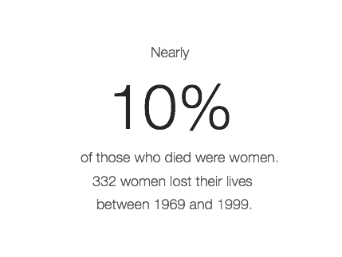

C Francis McCloskey was killed during a riot in East Londonderry/Derry in 1969.
H Samuel Devenny was killed during a riot in Foyle in 1969.
K Patrick Corry was killed during a riot in West Belfast in 1969.
L John Gallagher was killed during a riot in Newry & Armagh in 1969.
R Hugh McCabe was killed during a riot in West Belfast in 1969.
S Patrick Rooney was killed during a riot in West Belfast in 1969.
V Herbert Roy was killed during a riot in West Belfast in 1969.
W Gerald McAuley was killed in a gun battle in West Belfast in 1969.
F Samuel McLarnon was killed during a riot in North Belfast in 1969.
C Michael Lynch was killed during a riot in North Belfast in 1969.
H David Linton was killed in a gun battle in North Belfast in 1969.
K Jack Todd was killed in a gun battle in North Belfast in 1969.
L William King was killed during a riot in Foyle in 1969.
R Thomas McDowell was killed in an explosion in Republic Of Ireland in 1969.
S Victor Arbuckle was killed during a riot in North Belfast in 1969.
V George Dickie was killed during a riot in North Belfast in 1969.
W Herbert Hawe was killed during a riot in North Belfast in 1969.
F Alexander Gould was killed in a gun battle in North Belfast in 1970.
C Daniel Loughlins was killed in a gun battle in North Belfast in 1970.
H William Kincaid was killed in an assassination in North Belfast in 1970.
K Thomas McCool was killed in an explosion in Foyle in 1970.
b Carol McCool was killed in an explosion in Foyle in 1970.
e Bernadette McCool was killed in an explosion in Foyle in 1970.
L Joseph Coyle was killed in an explosion in Foyle in 1970.
R Robert Neill was killed in a gun battle in East Belfast in 1970.
S James McCurrie was killed in a gun battle in East Belfast in 1970.
V Henry McIlhone was killed in a gun battle in East Belfast in 1970.
W Thomas Burns was killed during a riot in West Belfast in 1970.
F Thomas Reid was killed during a riot in West Belfast in 1970.
C Charles O'Neill was killed during a riot in West Belfast in 1970.
H Zbigniew Uglik was killed during a riot in West Belfast in 1970.
K Thomas Carlin was killed in an explosion in Foyle in 1970.
L Patrick Elliman was killed during a riot in West Belfast in 1970.
R Daniel O'Hagan was killed during a riot in North Belfast in 1970.
S Samuel Donaldson was killed in an explosion in Newry & Armagh in 1970.
V Robert Millar was killed in an explosion in Newry & Armagh in 1970.
W Michael Kane was killed in an explosion in South Belfast in 1970.
F David Murray was killed in an assassination in North Belfast in 1970.
C Desmond Lagan was killed in an explosion in East Antrim in 1970.
H Arthur McKenna was killed in an assassination in West Belfast in 1970.
K Alexander McVicker was killed in an assassination in West Belfast in 1970.
L Andrew Jardin was killed in an assassination in West Belfast in 1970.
V Richard Fallon was killed in a petty crime incident in South Belfast in 1970.
R John Kavanagh was killed in an assassination in West Belfast in 1971.
S Bernard Watt was killed during a riot in North Belfast in 1971.
V James Saunders was killed in a gun battle in North Belfast in 1971.
W Robert Curtis was killed by a sniper in North Belfast in 1971.
F Albert Bell was killed in an assassination in West Belfast in 1971.
C John Eakins was killed in an explosion in West Tyrone in 1971.
H Harry Edgar was killed in an explosion in West Tyrone in 1971.
K George Beck was killed in an explosion in West Tyrone in 1971.
L William Thomas was killed in an explosion in West Tyrone in 1971.
R David Henson was killed in an explosion in West Tyrone in 1971.
S John Laurie was killed by a sniper in North Belfast in 1971.
V Cecil Patterson was killed in a gun battle in North Belfast in 1971.
W Robert Buckley was killed in a gun battle in North Belfast in 1971.
F William Jolliffe was killed in an ambush in Foyle in 1971.
C William Halligan was killed during a riot in West Belfast in 1971.
H Charles Hughes was killed in an assassination in West Belfast in 1971.
K John McCaig was killed in an assassination in North Belfast in 1971.
L Joseph McCaig was killed in an assassination in North Belfast in 1971.
R Dougal McCaughey was killed in an assassination in North Belfast in 1971.
h Isabelle McKeague was killed in an explosion in East Belfast in 1971.
S William Reid was killed in a gun battle in West Belfast in 1971.
V Robert Bankier was killed in an ambush in South Belfast in 1971.
W Michael Willets was killed in an explosion in West Belfast in 1971.
F Martin O'Leary was killed in an explosion in Republic Of Ireland in 1971.
C Seamus Cusack was killed during a riot in Foyle in 1971.
H Desmond Beattie was killed during a riot in Foyle in 1971.
K David Walker was killed by a sniper in West Belfast in 1971.
L Richard Barton was killed by a sniper in West Belfast in 1971.
R Harry Thornton was killed during a riot in West Belfast in 1971.
S Malcolm Hatton was killed by a sniper in North Belfast in 1971.
A William Atwell was killed in an explosion in West Belfast in 1971.
V Patrick McAdorey was killed in a gun battle in South Antrim in 1971.
F Frank McGuinness was killed during a riot in West Belfast in 1971.
C Desmond Healey was killed during a riot in West Belfast in 1971.
H Leo McGuigan was killed during a riot in North Belfast in 1971.
q Sarah Worthington was killed during a riot in North Belfast in 1971.
K Noel Phillips was killed during a riot in West Belfast in 1971.
L Daniel Teggart was killed during a riot in West Belfast in 1971.
r Joan Connolly was killed during a riot in West Belfast in 1971.
R Winston Donnell was killed by a sniper in West Tyrone in 1971.
S Hugh Mullan was killed during a riot in West Belfast in 1971.
V Norman Watson was killed Not Classifiedin Newry & Armagh in 1971.
W John Beattie was killed by a sniper in West Belfast in 1971.
F Frank Quinn was killed during a riot in West Belfast in 1971.
C Edward Doherty was killed during a riot in West Belfast in 1971.
H Paul Challoner was killed by a sniper in Foyle in 1971.
K John Laverty was killed in a gun battle in North Belfast in 1971.
L William McKavanagh was killed in a petty crime incident in South Belfast in 1971.
R Seamus Simpson was killed in a gun battle in West Belfast in 1971.
S William Stronge was killed by a sniper in North Belfast in 1971.
V William Ferris was killed Not Classifiedin North Belfast in 1971.
W Hugh Herron was killed during a riot in Foyle in 1971.
F John Robinson was killed by a sniper in North Belfast in 1971.
C Eamon Lafferty was killed in a gun battle in Foyle in 1971.
H Eamon McDevitt was killed during a riot in Foyle in 1971.
K James O'Hagan was killed in a gun battle in Foyle in 1971.
L John McKerr was killed by a sniper in West Belfast in 1971.
R George Crozier was killed by a sniper in North Belfast in 1971.
F Harry Beggs was killed in an explosion in South Belfast in 1971.
S Joseph Murphy was killed in a gun battle in West Belfast in 1971.
V Joseph Corr was killed in a gun battle in West Belfast in 1971.
W Ian Armstong was killed by a sniper in Newry & Armagh in 1971.
F Clifford Loring was killed in an ambush in West Belfast in 1971.
C Francis Veitch was killed by a sniper in Fermanagh & South Tyrone in 1971.
u Angela Gallagher was killed by a sniper in West Belfast in 1971.
H John Warnock was killed in an explosion in Newry & Armagh in 1971.
K Eamon Henry was killed in a petty crime incident in Newry & Armagh in 1971.
L Eamon Hamill was killed in a petty crime incident in Newry & Armagh in 1971.
l Annette McGavigan was killed in a gun battle in Foyle in 1971.
R David Stewardson was killed in an explosion in South Antrim in 1971.
S Martin Carroll was killed by a sniper in Foyle in 1971.
C John Rudman was killed by a sniper in Fermanagh & South Tyrone in 1971.
V William McGreanery was killed in an ambush in Foyle in 1971.
W Paul Carter was killed by a sniper in West Belfast in 1971.
F Samuel Nelson was killed and their body later found in North Belfast in 1971.
C Peter Herrington was killed by a sniper in North Belfast in 1971.
H Robert Leslie was killed in an ambush in West Tyrone in 1971.
K James Finlay was killed in an explosion in North Belfast in 1971.
L Gerard O'Hare was killed in an explosion in West Belfast in 1971.
o Rose Curry was killed in an explosion in West Belfast in 1971.
R Alexander Andrews was killed in an explosion in North Belfast in 1971.
S Ernest Bates was killed in an explosion in North Belfast in 1971.
V Peter Sharpe was killed by a sniper in North Belfast in 1971.
W Terence McDermott was killed in an explosion in Lagan Valley in 1971.
F Patrick Daly was killed in a gun battle in West Belfast in 1971.
C Brian Hall was killed in an explosion in West Belfast in 1971.
s Winifred Maxwell was killed in an explosion in West Belfast in 1971.
H John Thompson was killed in an explosion in North Belfast in 1971.
K John Bennett was killed and their body later found in West Belfast in 1971.
L John Haslett was killed in an ambush in North Belfast in 1971.
R Roger Wilkins was killed by a sniper in Foyle in 1971.
S Cecil Cunningham was killed in an ambush in North Belfast in 1971.
V Joseph Hill was killed by a sniper in Foyle in 1971.
W Graham Cox was killed in an ambush in West Belfast in 1971.
F David Thompson was killed in an ambush in East Belfast in 1971.
C George Hamilton was killed by a sniper in West Belfast in 1971.
bMaura Meehan was killed in an ambush in West Belfast in 1971.
e Dorothy Maguire was killed in an ambush in West Belfast in 1971.
H Sean Ruddy was killed in a petty crime incident in Newry & Armagh in 1971.
K James McLaughlin was killed in a petty crime incident in Newry & Armagh in 1971.
L Robert Anderson was killed in a petty crime incident in Newry & Armagh in 1971.
R Martin Forsythe was killed in an ambush in West Belfast in 1971.
H Robert Lindsay was killed in a gun battle in North Belfast in 1971.
S Robert McFarland was killed and their body later found in North Belfast in 1971.
V Angus Stevens was killed in an explosion in Foyle in 1971.
W David Tilbury was killed in an explosion in Foyle in 1971.
F Ronald Dodd was killed in an ambush in South Antrim in 1971.
C David Powell was killed in an explosion in Fermanagh & South Tyrone in 1971.
H Michael McLarnon was killed in an ambush in North Belfast in 1971.
K Alfred Devlin was killed in an explosion in North Belfast in 1971.
L Norman Booth was killed in an explosion in West Belfast in 1971.
R John Copeland was killed in an ambush in North Belfast in 1971.
S John Cochrane was killed in an explosion in South Belfast in 1971.
V Ian Doherty was killed by a sniper in West Belfast in 1971.
W Thomas Kells was killed and their body later found in South Antrim in 1971.
F Stanley Corry was killed in an ambush in West Belfast in 1971.
C William Russell was killed in an ambush in West Belfast in 1971.
h Mary Gemmell was killed in an explosion in South Belfast in 1971.
H Chris Quinn was killed in an ambush in West Belfast in 1971.
K William Jordan was killed in an explosion in South Belfast in 1971.
L Stephen Maguire was killed by a sniper in West Belfast in 1971.
R Paul Genge was killed by a sniper in Upper Bann in 1971.
q Kathleen Thompson was killed in an ambush in Foyle in 1971.
S Roberrt Curtis was killed by a sniper in Foyle in 1971.
V Dermot Hurley was killed in an ambush in North Belfast in 1971.
W Walter Moore was killed in an ambush in North Belfast in 1971.
F Reema Heemskerk was killed in an assassination in West Belfast in 1971.
K Edwin Charnely was killed by a sniper in East Belfast in 1971.
C Michael Crossey was killed in an explosion in Upper Bann in 1971.
r Brigid Carr was killed in a gun battle in West Tyrone in 1971.
H Colin Davies was killed in an explosion in Upper Bann in 1971.
K James O'Neill was killed in a gun battle in Newry & Armagh in 1971.
L Ian Hankin was killed in a gun battle in Newry & Armagh in 1971.
R Paul Nicholls was killed in an ambush in West Belfast in 1971.
u Vivian Gibney was killed in an ambush in North Belfast in 1971.
S Robert Benner was killed and their body later found in Newry & Armagh in 1971.
V James Cromie was killed in an explosion in North Belfast in 1971.
l Philomena McGurk was killed in an explosion in North Belfast in 1971.
o Marie McGurk was killed in an explosion in North Belfast in 1971.
W Edward Keenan was killed in an explosion in North Belfast in 1971.
sSarah Keenan was killed in an explosion in North Belfast in 1971.
F John Colton was killed in an explosion in North Belfast in 1971.
C Thomas McLaughlin was killed in an explosion in North Belfast in 1971.
H David Milligan was killed in an explosion in North Belfast in 1971.
K James Smyth was killed in an explosion in North Belfast in 1971.
L Francis Bradley was killed in an explosion in North Belfast in 1971.
R Thomas Kane was killed in an explosion in North Belfast in 1971.
S Philip Garry was killed in an explosion in North Belfast in 1971.
b Kathleen Irvine was killed in an explosion in North Belfast in 1971.
V Edward Kane was killed in an explosion in North Belfast in 1971.
W Robert Spotswood was killed in an explosion in North Belfast in 1971.
e Isabel Thompson was killed in an explosion in South Belfast in 1971.
F Denis Wilson was killed in an assassination in Fermanagh & South Tyrone in 1971.
C Anthony Nolan was killed in an explosion in West Belfast in 1971.
L Jeremy Snow was killed in a gun battle in North Belfast in 1971.
H Sean Russell was killed in an assassination in West Belfast in 1971.
K Kenneth Smith was killed in an ambush in West Tyrone in 1971.
L Daniel McCormick was killed in an ambush in West Tyrone in 1971.
R Joseph Parker was killed during a riot in North Belfast in 1971.
h Tracey Munn was killed in an explosion in West Belfast in 1971.
S Harold King was killed in an explosion in West Belfast in 1971.
V Hugh Bruce was killed in an explosion in West Belfast in 1971.
W Colin Nicholl was killed in an explosion in West Belfast in 1971.
F John Barnhill was killed in an assassination in West Tyrone in 1971.
C Martin McShane was killed during a riot in Fermanagh & South Tyrone in 1971.
H Anthony Aspinall was killed by a sniper in West Belfast in 1971.
K James Callum was killed in an explosion in West Belfast in 1971.
L John Bateson was killed in an explosion in Mid Ulster in 1971.
R Martin Lee was killed in an explosion in Mid Ulster in 1971.
S James Sheridan was killed in an explosion in Mid Ulster in 1971.
q Margaret McCorry was killed in a gun battle in North Belfast in 1971.
V John Lavery was killed in an explosion in South Belfast in 1971.
F Gerard McDade was killed in an ambush in North Belfast in 1971.
C Richard Ham was killed by a sniper in Foyle in 1971.
H Jack McCabe was killed in an explosion in Republic Of Ireland in 1971.
V Kenneth Easthaugh was killed in a gun battle in North Belfast in 1971.
F Peter Graham was killed in an assassination in Republic Of Ireland in 1971.
L Tony Henderson was killed in a gun battle in Republic Of Ireland in 1971.
K Keith Bryan was killed by a sniper in North Belfast in 1972.
L Dan O'Neill was killed in a gun battle in West Belfast in 1972.
R Michael Sloan was killed in West Belfast in 1972.
S Raymond Denham was killed in an assassination in West Belfast in 1972.
V Maynard Crawford was killed in an ambush in South Antrim in 1972.
R Eamon McCormick was killed in a gun battle in West Belfast in 1972.
W Sydney Agnew was killed in an ambush in East Belfast in 1972.
F Philip Stentiford was killed in an explosion in Newry & Armagh in 1972.
CPeter McNulty was killed in an explosion in South Down in 1972.
H Peter Gilgun was killed in an ambush in Foyle in 1972.
K Peter Woods was killed in a petty crime incident in North Belfast in 1972.
L David Montgomery was killed in an ambush in Foyle in 1972.
R Raymond Carroll was killed in an ambush in North Belfast in 1972.
S Robin Alers-Hankey was killed by a sniper in Foyle in 1972.
V Patrick Doherty was killed in a gun battle in Foyle in 1972.
WMichael Kelly was killed in a gun battle in Foyle in 1972.
F Bernard McGuigan was killed in a gun battle in Foyle in 1972.
C William McKinney was killed in a gun battle in Foyle in 1972.
H John Duddy was killed in a gun battle in Foyle in 1972.
S William Nash was killed in a gun battle in Foyle in 1972.
K Hugh Gilmore was killed in a gun battle in Foyle in 1972.
L James Wray was killed in a gun battle in Foyle in 1972.
R Joseph Cunningham was killed in an ambush in East Antrim in 1972.
S Michael McDaid was killed in a gun battle in Foyle in 1972.
V John Young was killed in a gun battle in Foyle in 1972.
W Gerald McKinney was killed in a gun battle in Foyle in 1972.
F Gerald Donaghy was killed in a gun battle in Foyle in 1972.
C Kevin McElhinney was killed in a gun battle in Foyle in 1972.
H Ian Bramley was killed by a sniper in West Belfast in 1972.
K Thomas McIlroy was killed in a gun battle in West Belfast in 1972.
L Louis O'Neill was killed in an assassination in Mid Ulster in 1972.
R Paul McFadden was killed in an explosion in West Belfast in 1972.
S Phelim Grant was killed in an explosion in South Antrim in 1972.
V Charles McCann was killed in an explosion in South Antrim in 1972.
W David Seaman was killed in an assassination in Newry & Armagh in 1972.
F Bernard Rice was killed in an ambush in North Belfast in 1972.
C Patrick Casey was killed in an explosion in Newry & Armagh in 1972.
H Ian Harris was killed in an explosion in Newry & Armagh in 1972.
K David Champ was killed in an explosion in Newry & Armagh in 1972.
L Thomas McCann was killed in an assassination in Fermanagh & South Tyrone in 1972.
R Thomas Callaghan was killed in an assassination in Foyle in 1972.
S Michael Prime was killed in an ambush in Lagan Valley in 1972.
r Elizabeth English was killed in a gun battle in West Belfast in 1972.
V David McAuley was killed in a gun battle in North Belfast in 1972.
W Gerard Steele was killed in an explosion in East Belfast in 1972.
F Gerard Bell was killed in an explosion in East Belfast in 1972.
C Joseph Magee was killed in an explosion in East Belfast in 1972.
H Robert Dorrian was killed in an explosion in East Belfast in 1972.
K Gerard Weston was killed in an explosion in Great Britain in 1972.
u Joan Lunn was killed in an explosion in Great Britain in 1972.
l Cherie Munton was killed in an explosion in Great Britain in 1972.
o Thelma Bosley was killed in an explosion in Great Britain in 1972.
s Margaret Grant was killed in an explosion in Great Britain in 1972.
L John Haslar was killed in an explosion in Great Britain in 1972.
b Jill Mansfield was killed in an explosion in Great Britain in 1972.
R Gerald Doherty was killed in a gun battle in Foyle in 1972.
S Henry Dickson was killed in an assassination in Upper Bann in 1972.
V John Fletcher was killed by a sniper in Fermanagh & South Tyrone in 1972.
W John Maughan was killed in an ambush in West Belfast in 1972.
F Michael Connors was killed in an ambush in West Belfast in 1972.
C Thomas Morrow was killed in an ambush in Newry & Armagh in 1972.
H Stephen Keating was killed by a sniper in North Belfast in 1972.
K Albert Kavanagh was killed in an ambush in South Belfast in 1972.
L Marcus McCausland was killed in an assassination in Foyle in 1972.
e Anne Owens was killed in an explosion in West Belfast in 1972.
h Janet Bereen was killed in an explosion in West Belfast in 1972.
R Eamon Gamble was killed in an explosion in Newry & Armagh in 1972.
S Joseph Jardine was killed by a sniper in Newry & Armagh in 1972.
V John Johnson was killed in an explosion in West Belfast in 1972.
W Gerard Crossan was killed in an explosion in West Belfast in 1972.
F Anthony Lewis was killed in an explosion in West Belfast in 1972.
C Tom McCann was killed in an explosion in West Belfast in 1972.
q Bernadette Hyndman was killed in a gun battle in West Belfast in 1972.
H Patrick McCrory was killed in an assassination in South Belfast in 1972.
K Colm Keenan was killed in an ambush in Foyle in 1972.
L Eugene McGillian was killed in an ambush in Foyle in 1972.
R William Logan was killed by a sniper in Fermanagh & South Tyrone in 1972.
S Anthony Butcher was killed in an explosion in West Belfast in 1972.
V Christopher Cracknell was killed in an explosion in West Belfast in 1972.
W James O'Hanlon was killed in an assassination in North Belfast in 1972.
r Carmel Knox was killed in an explosion in Upper Bann in 1972.
F John Jonson was killed in a gun battle in Foyle in 1972.
V Ernest McAllister was killed in an explosion in West Belfast in 1972.
C Bernard O'Neill was killed in an explosion in West Belfast in 1972.
H Ernest Dougan was killed in an explosion in West Belfast in 1972.
K Samuel Trainor was killed in an explosion in West Belfast in 1972.
L James Macklin was killed in an explosion in West Belfast in 1972.
R Sydney Bell was killed in an explosion in West Belfast in 1972.
S John Taylor was killed by a sniper in Foyle in 1972.
V Sean O'Riordan was killed during a riot in West Belfast in 1972.
W Patrick Campbell was killed in a gun battle in West Belfast in 1972.
F Ingram Beckett was killed and their body later found in North Belfast in 1972.
C Joseph Forsyth was killed in an explosion in East Londonderry/Derry in 1972.
H Robert McMIchael was killed in an explosion in East Londonderry/Derry in 1972.
u Ruby Johnston was killed during a riot in Newry & Armagh in 1972.
K Bernard Calladene was killed in an explosion in West Belfast in 1972.
l Martha Crawford was killed in a gun battle in West Belfast in 1972.
L Henry Millar was killed in an explosion in West Belfast in 1972.
R Charles McCrystal was killed in an explosion in South Antrim in 1972.
S Samuel Hughes was killed in an explosion in South Antrim in 1972.
V John McErlean was killed in an explosion in South Antrim in 1972.
W Peter Sime was killed by a sniper in West Belfast in 1972.
F Eric Blackburn was killed in an explosion in Foyle in 1972.
C Brian Thomasson was killed in an explosion in Foyle in 1972.
o Elizabeth McAuley was killed in an explosion in North Antrim in 1972.
H Joseph McCann was killed in an ambush in South Belfast in 1972.
K Sean McConville was killed in an ambush in North Belfast in 1972.
L Martin Robinson was killed by a sniper in Foyle in 1972.
R Nick Hull was killed by a sniper in West Belfast in 1972.
S Gerard Bristow was killed by a sniper in Foyle in 1972.
V Patrick Magee was killed during a riot in West Belfast in 1972.
W Patrick Doonaghey was killed during a riot in West Belfast in 1972.
F James Elliott was killed and their body later found in Newry & Armagh in 1972.
C Martin Owens was killed and their body later found in West Belfast in 1972.
H Gerard Donnelly was killed in an ambush in North Belfast in 1972.
K Francis Rowntree was killed during a riot in West Belfast in 1972.
L Joseph Gold was killed by a sniper in West Belfast in 1972.
s Rosalee Gavin was killed in a gun battle in North Belfast in 1972.
R David Curie was killed in an explosion in East Antrim in 1972.
S Victor Andrews was killed in a stabbing inicidentin North Belfast in 1972.
V John Ballard was killed by a sniper in West Belfast in 1972.
W Joseph McVeigh was killed in an ambush in West Belfast in 1972.
F Thomas McIlroy was killed in a gun battle in West Belfast in 1972.
C Alan Buckley was killed in a gun battle in West Belfast in 1972.
H Michael Magee was killed in a gun battle in West Belfast in 1972.
K Robert McMullan was killed by a sniper in West Belfast in 1972.
L John Starrs was killed in an ambush in Foyle in 1972.
R Gerard McCusker was killed and their body later found in North Belfast in 1972.
S John Pedlow was killed and their body later found in West Belfast in 1972.
b Martha Campbell was killed in a gun battle in West Belfast in 1972.
V Bernard Moane was killed in an assassination in East Antrim in 1972.
F Ronald Hurst was killed Not Classifiedin Newry & Armagh in 1972.
C John Hillman was killed by a sniper in North Belfast in 1972.
H Harold Morris was killed by a sniper in North Belfast in 1972.
K Manus Deery was killed in an ambush in Foyle in 1972.
L William Best was killed and their body later found in Foyle in 1972.
R Henry Gillespie was killed by a sniper in Fermanagh & South Tyrone in 1972.
S Aidrian Barton was killed in an ambush in West Belfast in 1972.
V Richard Oliver was killed during a riot in North Belfast in 1972.
W William Hughes was killed in an ambush in Mid Ulster in 1972.
W John Moran was killed in an explosion in West Belfast in 1972.
F Eustace Handley was killed by a sniper in West Belfast in 1972.
C Andrew Brennan was killed in an assassination in South Belfast in 1972.
e Margaret Young was killed in an explosion in West Belfast in 1972.
H Gerard Duddy was killed in an assassination in West Belfast in 1972.
K James Teer was killed in an assassination in West Belfast in 1972.
L Harry Crawford was killed in an explosion in East Belfast in 1972.
R Martin Engelen was killed in an explosion in East Belfast in 1972.
S Edward McDonald was killed in an explosion in East Belfast in 1972.
V John Nugent was killed in an explosion in East Belfast in 1972.
h Mary Clark was killed in an explosion in East Belfast in 1972.
W Joseph Fitzsimmons was killed in an explosion in East Belfast in 1972.
F John McIlhone was killed in an explosion in East Belfast in 1972.
q Geraldine McMahon was killed in an explosion in East Belfast in 1972.
C Thomas Wardlow was killed in an assassination in West Belfast in 1972.
H Marcel Dogley was killed in an explosion in West Belfast in 1972.
r Joan Scott was killed in a gun battle in North Belfast in 1972.
K Leonard McAteer was killed in an assassination in South Down in 1972.
L Michael Bruce was killed by a sniper in West Belfast in 1972.
R Victor Husband was killed in an explosion in Fermanagh & South Tyrone in 1972.
S Brian Robertson was killed in an explosion in Fermanagh & South Tyrone in 1972.
V Gerald Murray was killed in an assassination in North Belfast in 1972.
W George Lee was killed by a sniper in West Belfast in 1972.
F Charles Coleman was killed by a sniper in West Belfast in 1972.
C Norman Campbell was killed in an assassination in West Belfast in 1972.
H Samuel Donegan was killed in an explosion in Republic Of Ireland in 1972.
u Jean Smith was killed in an ambush in West Belfast in 1972.
K Edward Megahey was killed in an ambush in Foyle in 1972.
L Roy Staunton was killed in an assassination in South Belfast in 1972.
l Marion Brown was killed in an ambush in West Belfast in 1972.
R Peter Raistrick was killed by a sniper in Foyle in 1972.
S John Madden was killed by a sniper in North Belfast in 1972.
V Joseph Campbell was killed in an ambush in North Belfast in 1972.
W Norman McGrath was killed in a gun battle in North Belfast in 1972.
F Alan Giles was killed by a sniper in North Belfast in 1972.
C Charles Connor was killed and their body later found in Lagan Valley in 1972.
H Arthur McMillan was killed in an explosion in Upper Bann in 1972.
K Ian Mutch was killed in an explosion in Upper Bann in 1972.
L Colin Leslie was killed in an explosion in Upper Bann in 1972.
R Desmond Macklin was killed during a riot in West Belfast in 1972.
S Bryan Sodden was killed by a sniper in North Belfast in 1972.
V Kerry McCarthy was killed by a sniper in Foyle in 1972.
W Patrick McCullough was killed in an ambush in North Belfast in 1972.
F David Moon was killed in an explosion in Foyle in 1972.
C Stuart Reid was killed in an explosion in Foyle in 1972.
H Christopher Stevenson was killed in an explosion in Foyle in 1972.
K John Brown was killed and their body later found in West Belfast in 1972.
L James Bonner was killed in a petty crime incident in West Belfast in 1972.
R John Black was killed during a riot in East Belfast in 1972.
S David Houston was killed in an ambush in Newry & Armagh in 1972.
V James Meredith was killed by a sniper in Foyle in 1972.
W Malcom Banks was killed by a sniper in East Belfast in 1972.
F William Galloway was killed during a riot in North Belfast in 1972.
C Bernard Norney was killed in an ambush in West Belfast in 1972.
H Daniel Hayes was killed and their body later found in North Belfast in 1972.
K Paul Joblings was killed Not Classifiedin West Belfast in 1972.
L Hugh Clawson was killed Beatingin North Belfast in 1972.
R David Fisher was killed Beatingin North Belfast in 1972.
S Gerard McCrea was killed and their body later found in West Belfast in 1972.
V James Howell was killed and their body later found in West Belfast in 1972.
W John O'Hanlon was killed and their body later found in North Belfast in 1972.
F Denis Quinn was killed Not Classifiedin Fermanagh & South Tyrone in 1972.
C Malcolm Orr was killed and their body later found in North Belfast in 1972.
H Peter Orr was killed and their body later found in North Belfast in 1972.
K Samuel Robinson was killed in an ambush in West Belfast in 1972.
L Lawrence McKenna was killed in an ambush in West Belfast in 1972.
R Joseph Fleming was killed and their body later found in West Belfast in 1972.
S Brian McMillan was killed and their body later found in West Belfast in 1972.
V Gerald Turkington was killed and their body later found in South Belfast in 1972.
W David Andrews was killed and their body later found in North Belfast in 1972.
F Alan Meehan was killed and their body later found in West Belfast in 1972.
C Angelo Fiondo was killed in a gun battle in West Belfast in 1972.
H Patrick Butler was killed in a gun battle in West Belfast in 1972.
o Margaret Gargan was killed in a gun battle in West Belfast in 1972.
K David McCaffrey was killed in a gun battle in West Belfast in 1972.
L Noel Fitzpatrick was killed in a gun battle in West Belfast in 1972.
R John Dougal was killed in a gun battle in West Belfast in 1972.
S Charles Watson was killed and their body later found in North Belfast in 1972.
F Gerard Gibson was killed in an ambush in West Belfast in 1972.
V Terence Jones was killed by a sniper in Foyle in 1972.
W Paul Beattie was killed in an assassination in Upper Bann in 1972.
F David McClenaghan was killed in an assassination in North Belfast in 1972.
C Colin Poots was killed and their body later found in West Belfast in 1972.
H Martin Rooney was killed by a sniper in West Belfast in 1972.
K Jack McCabe was killed in an assassination in Upper Bann in 1972.
L William Cochrane was killed in an assassination in Upper Bann in 1972.
R Thomas Burns was killed in an ambush in North Belfast in 1972.
S Kenneth Mogg was killed by a sniper in West Belfast in 1972.
V Henry Russell was killed and their body later found in East Belfast in 1972.
W David Meeke was killed by a sniper in North Belfast in 1972.
F Robert Wynn-Williams was killed by a sniper in West Belfast in 1972.
C Peter Heppenstall was killed by a sniper in North Belfast in 1972.
H James Reid was killed in an ambush in North Belfast in 1972.
K Terry Toolan was killed in an ambush in North Belfast in 1972.
L Lewis Scullion was killed in an ambush in North Belfast in 1972.
R John Williams was killed by a sniper in North Belfast in 1972.
S Edward Brady was killed in a gun battle in North Belfast in 1972.
s Jane McIntyre was killed in a gun battle in West Belfast in 1972.
V Kenneth Canham was killed by a sniper in West Belfast in 1972.
W John Mooney was killed in a gun battle in North Belfast in 1972.
F John Young was killed in an explosion in Newry & Armagh in 1972.
C Robert Lavery was killed by a sniper in North Belfast in 1972.
H Tobias Mulloy was killed during a riot in West Tyrone in 1972.
K Francis McKeown was killed during a riot in West Belfast in 1972.
L James Lee was killed in an explosion in Newry & Armagh in 1972.
R Terence Graham was killed in an explosion in Newry & Armagh in 1972.
S James Jones was killed by a sniper in West Belfast in 1972.
V Thomas Mills was killed in a gun battle in West Belfast in 1972.
W Henry Gray was killed in an explosion in West Belfast in 1972.
F Alan Jack was killed in an explosion in West Tyrone in 1972.
C Hugh Wright was killed and their body later found in North Belfast in 1972.
H Robert Legget was killed in an assassination in West Belfast in 1972.
K Anthony Davidson was killed in an assassination in West Belfast in 1972.
L William Crothers was killed in an explosion in South Belfast in 1972.
R William Irvine was killed in an explosion in South Belfast in 1972.
S Jack Gibson was killed in an explosion in South Belfast in 1972.
V Thomas Killops was killed in an explosion in South Belfast in 1972.
F Stephen Cooper was killed in an explosion in South Belfast in 1972.
C Philip Price was killed in an explosion in South Belfast in 1972.
H Stephen Parker was killed in an explosion in North Belfast in 1972.
b Margaret O'Hare was killed in an explosion in North Belfast in 1972.
e Brigitta Murray was killed in an explosion in North Belfast in 1972.
K Joseph Rosatto was killed in an assassination in North Belfast in 1972.
L Joseph Downey was killed in a gun battle in South Belfast in 1972.
R Patrick O'Neill was killed and their body later found in West Belfast in 1972.
h Rose McCartney was killed and their body later found in West Belfast in 1972.
S Francis Arthurs was killed in an assassination in North Belfast in 1972.
V Robert McCombe was killed in an ambush in North Belfast in 1972.
W George Bunting was killed in an explosion in North Belfast in 1972.
F James Casey was killed in a gun battle in Foyle in 1972.
C Frederick Maguire was killed and their body later found in West Belfast in 1972.
H Brian Thomas was killed by a sniper in West Belfast in 1972.
K James Kenna was killed by a sniper in West Belfast in 1972.
L David Allen was killed by a sniper in West Belfast in 1972.
R Frank Corr was killed and their body later found in North Belfast in 1972.
S James McGerty was killed and their body later found in North Belfast in 1972.
V Francis McStravick was killed and their body later found in South Belfast in 1972.
W Philip Maguire was killed in an assassination in East Belfast in 1972.
F James Cassidy was killed in a gun battle in North Belfast in 1972.
C Daniel Dunne was killed in an assassination in South Belfast in 1972.
H William McAfee was killed in an assassination in East Belfast in 1972.
K Daniel Hegarty was killed in an ambush in Foyle in 1972.
L Seamus Bradley was killed in an ambush in Foyle in 1972.
q Catherine Eakin was killed in an explosion in Foyle in 1972.
r Elizabeth McElhinney was killed in an explosion in Foyle in 1972.
R James McClelland was killed in an explosion in Foyle in 1972.
S Joseph McCloskey was killed in an explosion in Foyle in 1972.
V David Miller was killed in an explosion in Foyle in 1972.
W William Temple was killed in an explosion in Foyle in 1972.
u Rose McLaughlin was killed in an explosion in Foyle in 1972.
l William Clark was killed in an explosion in West Tyrone in 1972.
F Robert McCrudden was killed in an ambush in North Belfast in 1972.
C David Card was killed by a sniper in West Belfast in 1972.
C Felix Hughes was killed and their body later found in Upper Bann in 1972.
H David Wynne was killed in an explosion in Fermanagh & South Tyrone in 1972.
K Erroll Gordon was killed in an explosion in Fermanagh & South Tyrone in 1972.
H Terence Hennebry was killed and their body later found in West Belfast in 1972.
L Geoffrey Knipe was killed during a riot in Newry & Armagh in 1972.
R William Crieghton was killed in an assassination in Fermanagh & South Tyrone in 1972.
S Joseph Connolly was killed in an explosion in Foyle in 1972.
V Colm Murtagh was killed in an explosion in Newry & Armagh in 1972.
o Anne Parker was killed in an explosion in West Belfast in 1972.
W Michael Clark was killed in an explosion in West Belfast in 1972.
F Arty Hone was killed in an explosion in Foyle in 1972.
C Francis Wynn was killed Beatingin North Belfast in 1972.
H Thomas Madden was killed Beatingin North Belfast in 1972.
K David Storey was killed in an explosion in West Belfast in 1972.
L Brian Hope was killed in an explosion in West Belfast in 1972.
R Charles McNeill was killed in a gun battle in North Belfast in 1972.
S William Spence was killed in an assassination in West Belfast in 1972.
V Michael Swanick was killed in an explosion in South Down in 1972.
W Patrick McGoldrick was killed in an explosion in West Tyrone in 1972.
F Michael Boddy was killed by a sniper in West Belfast in 1972.
C Philip Fay was killed in an assassination in East Belfast in 1972.
H Lennie Layfield was killed by a sniper in West Belfast in 1972.
K Richard Jones was killed by a sniper in West Belfast in 1972.
L James Neill was killed in an assassination in West Belfast in 1972.
R James Lindsay was killed in an assassination in West Belfast in 1972.
S Frank Quinn was killed in an explosion in Newry & Armagh in 1972.
V Pat Murphy was killed in an explosion in Newry & Armagh in 1972.
W Lawrence Craig was killed in an explosion in Newry & Armagh in 1972.
F Michael Gilleece was killed in an explosion in Newry & Armagh in 1972.
C Joseph Fegan was killed in an explosion in Newry & Armagh in 1972.
H John McCann was killed in an explosion in Newry & Armagh in 1972.
K Oliver Rowntree was killed in an explosion in Newry & Armagh in 1972.
L Noel Madden was killed in an explosion in Newry & Armagh in 1972.
R Patrick Hughes was killed in an explosion in Newry & Armagh in 1972.
S James Johnston was killed in an assassination in West Belfast in 1972.
V Alan Tingey was killed by a sniper in West Belfast in 1972.
W Ian Caie was killed in an explosion in Newry & Armagh in 1972.
F Arhtur Whiterock was killed by a sniper in Foyle in 1972.
C Alfred Johnston was killed in an explosion in Fermanagh & South Tyrone in 1972.
H James Eames was killed in an explosion in Fermanagh & South Tyrone in 1972.
K John Nulty was killed in an assassination in North Belfast in 1972.
L Patrick Kelly was killed in an assassination in North Belfast in 1972.
R Thomas Boyd was killed in an assassination in South Antrim in 1972.
S Anthony Metcalfe was killed by a sniper in Foyle in 1972.
V James Carlan was killed in an explosion in South Down in 1972.
W Martin Curran was killed in an explosion in South Down in 1972.
F Ian Morrell was killed by a sniper in West Belfast in 1972.
C Ronald Rowe was killed in a gun battle in North Belfast in 1972.
H William Trotter was killed in an explosion in Fermanagh & South Tyrone in 1972.
K Roy Christopher was killed in an explosion in West Belfast in 1972.
L Patrick Devenney was killed and their body later found in South Belfast in 1972.
R Eamon McMahon was killed and their body later found in Upper Bann in 1972.
S Robert Cutting was killed in a gun battle in North Belfast in 1972.
V Victor Smith was killed in an explosion in Upper Bann in 1972.
W Samuel Boyde was killed in an assassination in West Belfast in 1972.
F William Moore was killed in an ambush in East Belfast in 1972.
s Bridget Breen was killed in an explosion in South Antrim in 1972.
C Robert McKinney was killed in a gun battle in North Belfast in 1972.
H Robert Johnston was killed in a gun battle in North Belfast in 1972.
K David Griffiths was killed by a sniper in West Belfast in 1972.
L Lawrence Jubb was killed during a riot in Newry & Armagh in 1972.
R Duncan McPhee was killed in an explosion in Fermanagh & South Tyrone in 1972.
S Douglas Richmond was killed in an explosion in Fermanagh & South Tyrone in 1972.
V William McIntyre was killed in an explosion in Fermanagh & South Tyrone in 1972.
W Patrick Doyle was killed in an assassination in West Belfast in 1972.
F Robert Warnock was killed in a petty crime incident in East Belfast in 1972.
C Andrew McKibben was killed in an explosion in North Belfast in 1972.
H John Davis was killed in an explosion in Foyle in 1972.
b Martha Smilie was killed in an explosion in North Belfast in 1972.
e Anne Murray was killed in an explosion in North Belfast in 1972.
K Sinclair Johnston was killed during a riot in East Antrim in 1972.
L Michael Quigley was killed in an ambush in Foyle in 1972.
R John Van Beck was killed by a sniper in Foyle in 1972.
S Edmund Woolsey was killed in an explosion in Newry & Armagh in 1972.
V Frank Bell was killed by a sniper in West Belfast in 1972.
W Joseph McComiskey was killed in a gun battle in North Belfast in 1972.
F Thomas Stoker was killed in an explosion in West Belfast in 1972.
C Thomas Bullock was killed in an assassination in Fermanagh & South Tyrone in 1972.
h Emily Bullock was killed in an assassination in Fermanagh & South Tyrone in 1972.
H William Mathews was killed and their body later found in West Belfast in 1972.
K Stewart Gardner was killed by a sniper in Newry & Armagh in 1972.
L John Barry was killed by a sniper in West Belfast in 1972.
R Paul McCartan was killed in an assassination in East Belfast in 1972.
S George Lockhart was killed by a sniper in Foyle in 1972.
V Daniel Rooney was killed in an ambush in West Belfast in 1972.
W Daniel McErlean was killed in an explosion in West Belfast in 1972.
F James Joseph Boyle was killed and their body later found in West Belfast in 1972.
C Alexander Greer was killed in an assassination in North Belfast in 1972.
H Edward Pavis was killed in an assassination in South Belfast in 1972.
K Ian Burt was killed by a sniper in West Belfast in 1972.
L James Quigley was killed by a sniper in West Belfast in 1972.
R Patricia McKay was killed in a gun battle in West Belfast in 1972.
S Thomas Rudman was killed by a sniper in North Belfast in 1972.
V Francis Lane was killed and their body later found in North Belfast in 1972.
F John Kelly was killed during a riot in West Belfast in 1972.
C Thomas Paisley was killed in an assassination in South Antrim in 1972.
H Patrick McKee was killed in an explosion in West Belfast in 1972.
K Michael Hayes was killed in an ambush in North Belfast in 1972.
L Edward Stuart was killed in an ambush in West Belfast in 1972.
R Edward Bonner was killed in an assassination in West Belfast in 1972.
S James McCartan was killed in an assassination in East Belfast in 1972.
q Geoffrey Hamilton was killed in an assassination in West Belfast in 1972.
V Patrick Connolly was killed in an explosion in Upper Bann in 1972.
W John Magee was killed in an explosion in South Belfast in 1972.
F Daniel McAreavey was killed in a gun battle in West Belfast in 1972.
r Olive McConnell was killed in an explosion in West Belfast in 1972.
C Alexander Moorehead was killed in an ambush in West Tyrone in 1972.
K John Ruddy was killed by a sniper in Newry & Armagh in 1972.
H John McKenna was killed during a riot in West Belfast in 1972.
K Joseph McKinney was killed in an explosion in West Belfast in 1972.
L John Donaghy was killed in an explosion in West Belfast in 1972.
R Patrick Maguire was killed in an explosion in South Antrim in 1972.
S Robert Nicholl was killed in an ambush in West Belfast in 1972.
V Terence Maguire was killed and their body later found in East Belfast in 1972.
W Leo Duffy was killed in an assassination in South Belfast in 1972.
F Thomas Marron was killed in an assassination in South Belfast in 1972.
C John Thompson was killed in an explosion in North Belfast in 1972.
H James Doherty was killed in an assassination in West Belfast in 1972.
L John Clark was killed during a riot in East Belfast in 1972.
K William Warnock was killed during a riot in East Belfast in 1972.
L Hugh Herron was killed in an ambush in Mid Ulster in 1972.
R Patrick Mullan was killed in an ambush in Mid Ulster in 1972.
S Anthony David was killed by a sniper in North Belfast in 1972.
u Elanor Cooke was killed during a riot in North Belfast in 1972.
R John Todd was killed during a riot in North Belfast in 1972.
V James Gillen was killed in an explosion in West Belfast in 1972.
W Gordon Harron was killed in a petty crime incident in East Belfast in 1972.
F John Bell was killed in an ambush in Fermanagh & South Tyrone in 1972.
C Robert Mason was killed by a sniper in West Belfast in 1972.
S John Morrell was killed in an explosion in Newry & Armagh in 1972.
H Michael Naan was killed in a stabbing inicidentin Fermanagh & South Tyrone in 1972.
K Andrew Murray was killed in a stabbing inicidentin Fermanagh & South Tyrone in 1972.
L Thomas McKay was killed by a sniper in Foyle in 1972.
R Michael Turner was killed in an ambush in North Belfast in 1972.
S James Kerr was killed in an assassination in South Belfast in 1972.
V Richard Sinclair was killed by a sniper in North Belfast in 1972.
l Paula Strong was killed in an explosion in North Belfast in 1972.
o Clare Hughes was killed in an explosion in North Belfast in 1972.
W Irwin Long was killed in an ambush in Upper Bann in 1972.
F Ronald Kitchen was killed by a sniper in North Belfast in 1972.
C Gerard Kelly was killed in an assassination in North Belfast in 1972.
H Stanislaus Carberry was killed in a gun battle in West Belfast in 1972.
K Joseph McCrystal was killed in an assassination in South Antrim in 1972.
L Stanley Evans was killed by a sniper in North Belfast in 1972.
R George Doherty was killed in an assassination in East Belfast in 1972.
S Joseph Calvin was killed in an explosion in Fermanagh & South Tyrone in 1972.
V William Watson was killed in an explosion in Newry & Armagh in 1972.
W James Strothers was killed in an explosion in Newry & Armagh in 1972.
V William Clarke was killed in an ambush in West Belfast in 1972.
F Joseph McIlroy was killed in an assassination in East Belfast in 1972.
C Samuel Porter was killed in an ambush in East Londonderry/Derry in 1972.
H Liam Shivers was killed in an assassination in East Londonderry/Derry in 1972.
K Rory Gormley was killed in an ambush in North Belfast in 1972.
L Robert Keys was killed Rocketin Fermanagh & South Tyrone in 1972.
W John Brady was killed in an explosion in Foyle in 1972.
R James Carr was killed in an explosion in Foyle in 1972.
S Paul Jackson was killed in an explosion in Foyle in 1972.
V Gerry Gearon was killed in an ambush in North Belfast in 1972.
W George Bradshaw was killed in an explosion in Republic Of Ireland in 1972.
F Thomas Duffy was killed in an explosion in Republic Of Ireland in 1972.
C Joseph McAuley was killed in an ambush in North Antrim in 1972.
H Patrick Banstead was killed and their body later found in East Belfast in 1972.
s Sandra Meli was killed in an assassination in East Belfast in 1972.
K Samuel Hamilton was killed and their body later found in East Belfast in 1972.
L Bernard Fox was killed in a gun battle in North Belfast in 1972.
R William Bell was killed in a gun battle in North Belfast in 1972.
S Roy Hillis was killed in an explosion in Upper Bann in 1972.
V William Bogle was killed in an assassination in West Tyrone in 1972.
W Samuel White was killed in a stabbing inicidentin East Belfast in 1972.
F Ernest Elliott was killed in an ambush in South Belfast in 1972.
C John Joesbury was killed by a sniper in West Belfast in 1972.
H Joseph Kelly was killed in an assassination in East Belfast in 1972.
K Stewart Middlemass was killed in an explosion in West Belfast in 1972.
L Joseph Ward was killed in a gun battle in North Belfast in 1972.
R Joseph Nixon was killed in an ambush in North Belfast in 1972.
S James Reynolds was killed in an ambush in North Belfast in 1972.
b Kathleen Dolan was killed in an explosion in West Tyrone in 1972.
V George Chambers was killed in an ambush in Upper Bann in 1972.
W Frederick Greeves was killed in an ambush in Newry & Armagh in 1972.
F Louis Leonard was killed and their body later found in Fermanagh & South Tyrone in 1972.
C Joseph Blaney was killed in an assassination in North Belfast in 1972.
H William Johnston was killed in an assassination in Newry & Armagh in 1972.
K David McAleese was killed by a sniper in East Belfast in 1972.
L Ellis Hamilton was killed in an assassination in Foyle in 1972.
R Alphonsus McGeown was killed in an ambush in Fermanagh & South Tyrone in 1972.
S Michael McGinley was killed in a gun battle in Foyle in 1972.
V Charles McCafferty was killed in a gun battle in Foyle in 1972.
W Charles Moore was killed in a gun battle in Foyle in 1972.
F Bernard Kelly was killed in a gun battle in Foyle in 1972.
C Francis McCarron was killed in a gun battle in Foyle in 1972.
H James Mullan was killed in an ambush in North Down in 1972.
K Eugene Devlin was killed in an ambush in West Tyrone in 1972.
e Geraldine O'Reilly was killed in an explosion in Republic Of Ireland in 1972.
L Patrick Stanley was killed in an explosion in Republic Of Ireland in 1972.
R James McDaid was killed in an ambush in Foyle in 1972.
S Hugh Martin was killed in an assassination in East Belfast in 1972.
H Anthony Ahearne was killed in an explosion in Fermanagh & South Tyrone in 1972.
h Jean McConville was killed and their body later found in West Belfast in 1972.
V Kevin McKee was killed and their body later found in West Belfast in 1972.
H Craig Lawrence was killed Not Classifiedin Newry & Armagh in 1972.
H Seamus Wright was killed in an assassination in West Belfast in 1972.
K Kevin McKee was killed in an assassination in North Belfast in 1972.
H Colin Harker was killed by a sniper in Foyle in 1972.
V Oliver Boyce was killed and their body later found in Republic Of Ireland in 1973.
h Briege Porter was killed and their body later found in Republic Of Ireland in 1973.
W John Mooney was killed in an ambush in East Belfast in 1973.
F James Hood was killed in an ambush in East Londonderry/Derry in 1973.
C Trevor Rankin was killed in an ambush in North Belfast in 1973.
q Elizabeth McGregor was killed in a gun battle in North Belfast in 1973.
HHenry Sandford was killed in an explosion in West Tyrone in 1973.
K David Dorsett was killed in an explosion in Foyle in 1973.
L Mervyn Wilson was killed in an explosion in Foyle in 1973.
R David Bingham was killed in an ambush in North Belfast in 1973.
S Arthur Liggett was killed in an ambush in West Belfast in 1973.
V Joseph Weir was killed during a riot in Upper Bann in 1973.
W Thomas Douglas was killed in an explosion in Republic Of Ireland in 1973.
r Ann Rowland was killed in a gun battle in Upper Bann in 1973.
F William Staunton was killed in an assassination in West Belfast in 1973.
C James Trainor was killed in an assassination in West Belfast in 1973.
H Peter Watterson was killed in an assassination in West Belfast in 1973.
K Francis Smith was killed in an assassination in West Belfast in 1973.
L Philip Rafferty was killed and their body later found in Lagan Valley in 1973.
R Gabriel Savage was killed and their body later found in West Belfast in 1973.
S Patrick Heenan was killed in an explosion in East Belfast in 1973.
V William Boardley was killed by a sniper in West Tyrone in 1973.
W James Greer was killed in an assassination in West Belfast in 1973.
F Robert Burns was killed in an ambush in North Belfast in 1973.
C Patrick Brady was killed and their body later found in West Belfast in 1973.
H Alfredo Fusco was killed in an assassination in North Belfast in 1973.
K James Sloan was killed in an ambush in North Belfast in 1973.
L John Loughran was killed in a gun battle in North Belfast in 1973.
R James McCann was killed in an ambush in North Belfast in 1973.
S Ambrose Hardy was killed in a gun battle in North Belfast in 1973.
V Brendan Maguire was killed in a gun battle in North Belfast in 1973.
F Anthony Campbell was killed in a gun battle in North Belfast in 1973.
C John Boyd was killed and their body later found in East Belfast in 1973.
H Seamus Gilmore was killed in an assassination in North Belfast in 1973.
K Michael Murtagh was killed Rocketin West Belfast in 1973.
L Andrew Petheridge was killed during a riot in East Belfast in 1973.
R Robert Bennett was killed during a riot in East Belfast in 1973.
S Glenn Clarke was killed in an assassination in North Belfast in 1973.
V Brian Douglas was killed during a riot in South Belfast in 1973.
W Hugh Connolly was killed in a gun battle in North Belfast in 1973.
F Charles Morrison was killed in an ambush in Fermanagh & South Tyrone in 1973.
C Leo Hanlon was killed in an explosion in Strangford in 1973.
u Vivienne Fitszimmons was killed in an explosion in Strangford in 1973.
H Francis Taggart was killed and their body later found in East Belfast in 1973.
K Anthony Coleman was killed in an ambush in West Belfast in 1973.
L David McAleese was killed in an ambush in West Belfast in 1973.
R William Cook was killed and their body later found in North Belfast in 1973.
S Robert Pearson was killed in an ambush in North Belfast in 1973.
V Malcom Shaw was killed in an ambush in North Belfast in 1973.
W Michael Doyle was killed by a sniper in West Belfast in 1973.
F Leonard Durber was killed during a riot in East Belfast in 1973.
C Gordon Gallagher was killed in an explosion in Foyle in 1973.
H Raymond Wylie was killed in an ambush in Upper Bann in 1973.
K Kevin Heatley was killed in a gun battle in Newry & Armagh in 1973.
L Alan Kennington was killed by a sniper in North Belfast in 1973.
R Stephen Kernan was killed in an ambush in North Belfast in 1973.
S Daniel Bowen was killed in a gun battle in West Belfast in 1973.
V Paddy Crossan was killed in an ambush in North Belfast in 1973.
W George Wamsley was killed in an ambush in North Belfast in 1973.
F David Deacon was killed and their body later found in Foyle in 1973.
C Raymond Hall was killed during a riot in East Belfast in 1973.
H Gary Barlow was killed during a riot in West Belfast in 1973.
K Anton Brown was killed by a sniper in West Belfast in 1973.
L David Glennon was killed and their body later found in North Belfast in 1973.
R John Green was killed by a sniper in North Belfast in 1973.
S Joseph Leahy was killed in an explosion in Newry & Armagh in 1973.
V Dennis Eccles was killed during a riot in North Belfast in 1973.
W Alan Welsh was killed in an explosion in East Belfast in 1973.
F Edward Sharpe was killed by a sniper in North Belfast in 1973.
C John King was killed in an explosion in Newry & Armagh in 1973.
H Larry McMahon was killed in an explosion in South Antrim in 1973.
K William Kenny was killed and their body later found in North Belfast in 1973.
L Lindsay Mooney was killed in an explosion in Republic Of Ireland in 1973.
R Michael Gay was killed in an explosion in Fermanagh & South Tyrone in 1973.
S Robert Collins was killed and their body later found in North Belfast in 1973.
V Bernard McErlean was killed in an ambush in West Belfast in 1973.
W Michael Muldoon was killed in an ambush in North Belfast in 1973.
F Barrington Foster was killed in an ambush in North Belfast in 1973.
C Sgt. Swain was killed in an ambush in North Belfast in 1973.
H Thomas Penrose was killed in an ambush in North Belfast in 1973.
K John Huddleston was killed in an ambush in West Belfast in 1973.
L Robert McAuley was killed by a sniper in Upper Bann in 1973.

R Samuel Martin was killed by a sniper in Newry & Armagh in 1973.
S Patrick McCabe was killed by a sniper in North Belfast in 1973.
V Andrew Somerville was killed in an explosion in West Tyrone in 1973.
W Michael Marr was killed by a sniper in West Belfast in 1973.
F David McQueen was killed in an assassination in North Down in 1973.
C Stephen Harrison was killed in an explosion in Newry & Armagh in 1973.
H Terence Brown was killed in an explosion in Newry & Armagh in 1973.
K Peter McGerrigan was killed in a gun battle in Newry & Armagh in 1973.
L Charles Marchant was killed by a sniper in Upper Bann in 1973.
R Anthony Hughes was killed in an ambush in Newry & Armagh in 1973.
S Keith Evans was killed by a sniper in Foyle in 1973.
V Edward O'Rawe was killed in an ambush in West Belfast in 1973.
W Joseph Adair was killed in an assassination in East Belfast in 1973.
F Robert Millan was killed in an ambush in South Belfast in 1973.
l Margaret Miller was killed in an assassination in West Belfast in 1973.
C Brian Smyth was killed in a gun battle in North Belfast in 1973.
H Anthony McDowell was killed in a gun battle in North Belfast in 1973.
K Mervyn Connor was killed Not Classifiedin North Belfast in 1973.
L Anthony Godfellow was killed by a sniper in Foyle in 1973.
R Kerry Venn was killed by a sniper in Foyle in 1973.
S Graham Cox was killed by a sniper in North Belfast in 1973.
F Liam McDonald was killed and their body later found in South Antrim in 1973.
V Thomas Crump was killed by a sniper in Foyle in 1973.
W William Vines was killed in an explosion in Newry & Armagh in 1973.
C John Gibbons was killed in an explosion in Newry & Armagh in 1973.
F Terence Williams was killed in an explosion in Newry & Armagh in 1973.
C Frank Cadoo was killed in an explosion in Fermanagh & South Tyrone in 1973.
K Thomas Taylor was killed in an explosion in West Belfast in 1973.
L Kevin Kilpatrick was killed in an ambush in Mid Ulster in 1973.
R John McCormick was killed in an ambush in West Belfast in 1973.
S John Gaskell was killed in an explosion in West Belfast in 1973.
V Roy Rutherdord was killed in an explosion in Upper Bann in 1973.
W Michael Leonard was killed in a petty crime incident in Fermanagh & South Tyrone in 1973.
o Eileen Mackin was killed by a sniper in West Belfast in 1973.
F Thomas Ward was killed in an assassination in South Belfast in 1973.
C Arthur Place was killed in an explosion in West Tyrone in 1973.
H Sheridan Young was killed in an explosion in West Tyrone in 1973.
K Derek Reed was killed in an explosion in West Tyrone in 1973.
L Barry Cox was killed in an explosion in West Tyrone in 1973.
R Joseph McKenna was killed in an assassination in North Belfast in 1973.
S Sean McKee was killed by a sniper in North Belfast in 1973.
V Robert McIntyre was killed in a petty crime incident in North Belfast in 1973.
W Edward Coogan was killed and their body later found in North Belfast in 1973.
F Thomas Friel was killed during a riot in Foyle in 1973.
C Ian Donald was killed in an explosion in Newry & Armagh in 1973.
H John Wallace was killed in an explosion in Newry & Armagh in 1973.
H Joseph Matthews was killed and their body later found in Lagan Valley in 1973.
K Paul Crummey was killed by a sniper in West Belfast in 1973.
L Margaret Hrykiewicz was killed in a stabbing inicidentin North Belfast in 1973.
K Thomas Curry was killed in an ambush in North Belfast in 1973.
R Gerard Barnes was killed in an explosion in West Belfast in 1973.
S Samuel McCleave was killed Beatingin West Belfast in 1973.
V Alfred Acheson was killed in an assassination in North Belfast in 1973.
s Sarah McCombe was killed in an assassination in North Belfast in 1973.
L Frederick Drake was killed in an explosion in West Tyrone in 1973.
W David Purvis was killed in an ambush in Fermanagh & South Tyrone in 1973.
F Terence Herdman was killed in an assassination in Fermanagh & South Tyrone in 1973.
C Daniel O'Neill was killed in an assassination in North Belfast in 1973.
H Samuel Rush was killed in a gun battle in East Belfast in 1973.
K Francis Campbell was killed in an explosion in East Londonderry/Derry in 1973.
b Nan Davis was killed in an explosion in East Londonderry/Derry in 1973.
e Dinah Campbell was killed in an explosion in East Londonderry/Derry in 1973.
h Elizabeth Craigmile was killed in an explosion in East Londonderry/Derry in 1973.
q Elizabeth Palmer was killed in an explosion in East Londonderry/Derry in 1973.
L Robert Scott was killed in an explosion in East Londonderry/Derry in 1973.
R Anthony Mitchell was killed in an ambush in West Belfast in 1973.
S Michael Wilson was killed in an assassination in South Belfast in 1973.
V Daniel Rouse was killed in an assassination in South Belfast in 1973.
W Joseph Kelly was killed and their body later found in South Antrim in 1973.
F Barry Gritten was killed in an explosion in Foyle in 1973.
C David Smith was killed in an explosion in West Tyrone in 1973.
H David Walker was killed in an assassination in West Belfast in 1973.
K Joseph Cunningham was killed in an assassination in North Belfast in 1973.
L Sean Loughran was killed in an explosion in Mid Ulster in 1973.
R Dermot Cowley was killed in an explosion in Mid Ulster in 1973.
S Patrick Carty was killed in an explosion in Mid Ulster in 1973.
V Paddy Wilson was killed in a stabbing inicidentin North Belfast in 1973.
r Irene Andrews was killed in a stabbing inicidentin North Belfast in 1973.
F Noorbaz Khan was killed by a sniper in Foyle in 1973.
C Robert McGuinness was killed by a sniper in Mid Ulster in 1973.
H Sean Armstrong was killed in an assassination in South Belfast in 1973.
K Reginald Roberts was killed by a sniper in West Belfast in 1973.
L Robert Clarke was killed in an assassination in West Belfast in 1973.
R Patrick Bracken was killed in an ambush in West Belfast in 1973.
u Dorothy Lynn was killed during a riot in South Antrim in 1973.
S Isaac Scott was killed in an assassination in Newry & Armagh in 1973.
V Frederick Davis was killed and their body later found in East Belfast in 1973.
W Christopher Brady was killed in an explosion in West Belfast in 1973.
F Geoffrey Breakwell was killed in an explosion in West Belfast in 1973.
C Owen Ruddy was killed in an explosion in South Antrim in 1973.
H Sydney Watt was killed in an assassination in Newry & Armagh in 1973.
K Richard Jarman was killed in an explosion in Newry & Armagh in 1973.
L Alphonsus Cunningham was killed in an explosion in South Down in 1973.
l Pauline Kane was killed in an explosion in South Down in 1973.
R Brian Gridddle was killed in an explosion in Fermanagh & South Tyrone in 1973.
S Peter Linauer was killed in an assassination in North Belfast in 1973.
V Leo Rosborough was killed in an assassination in North Belfast in 1973.
W Francis Mullan was killed in a gun battle in Fermanagh & South Tyrone in 1973.
o B'dette Mullan was killed in a gun battle in Fermanagh & South Tyrone in 1973.
F Henry Cunningham was killed in an ambush in South Antrim in 1973.
C Joseph Murphy was killed in an ambush in West Belfast in 1973.
H Seamus Harvey was killed in an explosion in Republic Of Ireland in 1973.
K James McGlynn was killed in an explosion in Republic Of Ireland in 1973.
L Norman Hutchinson was killed in an assassination in South Belfast in 1973.
R William McIlveen was killed in an assassination in Newry & Armagh in 1973.
S Edward Drummond was killed in an explosion in North Belfast in 1973.
V Patrick Duffy was killed Not Classifiedin Foyle in 1973.
W Daniel McAnallen was killed in an explosion in West Tyrone in 1973.
F Patrick Quinn was killed in an explosion in West Tyrone in 1973.
C Trevor Holland was killed in an ambush in Upper Bann in 1973.
H Charles O'Donnell was killed in an explosion in East Belfast in 1973.
K Charles McDonnell was killed in an assassination in Newry & Armagh in 1973.
s Margaret Meeke was killed in an ambush in Newry & Armagh in 1973.
L Ron McDonald was killed in an explosion in North Belfast in 1973.
R Sean McDonald was killed in an explosion in North Belfast in 1973.
S Anthony McGrady was killed in an explosion in North Belfast in 1973.
V Owen Devine was killed in an assassination in South Belfast in 1973.
W Kenneth Hill was killed in an ambush in Newry & Armagh in 1973.
F Ron Beckett was killed in an explosion in Fermanagh & South Tyrone in 1973.
C Francis Hall was killed in an explosion in South Belfast in 1973.
H Patrick Mulvenna was killed in a gun battle in West Belfast in 1973.
b Anne Pettigrew was killed in an explosion in South Belfast in 1973.
K Patrick Duffy was killed in an explosion in Fermanagh & South Tyrone in 1973.
L Matthew Lilley was killed in an ambush in Fermanagh & South Tyrone in 1973.
R Maurice Spence was killed in an assassination in North Antrim in 1973.
S Tommy Herron was killed and their body later found in Lagan Valley in 1973.
V Richard Millar was killed in an ambush in West Belfast in 1973.
W James Brown was killed in an assassination in Foyle in 1973.
F James Bryson was killed in a gun battle in West Belfast in 1973.
C Seamus Larkin was killed in an assassination in Newry & Armagh in 1973.
e Eileen Doherty was killed in an assassination in Upper Bann in 1973.
H Lindsay Dobie was killed in an explosion in Foyle in 1973.
K Ivan Vennard was killed in an assassination in Upper Bann in 1973.
L Raymond McAdam was killed in an explosion in Fermanagh & South Tyrone in 1973.
R Thomas Forsythe was killed in a petty crime incident in West Belfast in 1973.
S William Campbell was killed by a sniper in North Belfast in 1973.
V Ronald Fletcher was killed in an explosion in East Belfast in 1973.
W Stephen Hall was killed by a sniper in Newry & Armagh in 1973.
F John Doherty was killed in an assassination in Republic Of Ireland in 1973.
C Patrick Campbell was killed in an assassination in South Down in 1973.
H Daniel Carson was killed in an ambush in North Belfast in 1973.
K Francis McNellis was killed in an explosion in West Belfast in 1973.
L John Aikman was killed in an ambush in Newry & Armagh in 1973.
R Robert McCaffrey was killed in an ambush in West Belfast in 1973.
S Francis McCaughey was killed in an explosion in Fermanagh & South Tyrone in 1973.
V William Wallace was killed in an explosion in North Belfast in 1973.
W Bernard Teggert was killed in an assassination in North Belfast in 1973.
F John Lundy was killed in a gun battle in East Belfast in 1973.
h Feeny Kathleen was killed in a gun battle in Foyle in 1973.
C Michael McVerry was killed in a gun battle in Newry & Armagh in 1973.
H Charles Logan was killed in an explosion in East Londonderry/Derry in 1973.
K David Roberts was killed in an explosion in Newry & Armagh in 1973.
L Michael Hutchinson was killed in a gun battle in West Belfast in 1973.
R Francis Benson was killed and their body later found in South Belfast in 1973.
S Joseph Brooks was killed in an ambush in Foyle in 1973.
V Heinz Pisarek was killed in an ambush in Foyle in 1973.
W Anthony Braden was killed in an ambush in North Belfast in 1973.
F Desmond Morgan was killed during a riot in Fermanagh & South Tyrone in 1973.
C Ivan Charlton was killed during a riot in Fermanagh & South Tyrone in 1973.
H Cyril McCall was killed during a riot in Fermanagh & South Tyrone in 1973.
K Robert Megaw was killed in an ambush in Upper Bann in 1973.
L Joseph Walker was killed in a gun battle in Foyle in 1973.
R James Gibson was killed in an assassination in South Belfast in 1973.
S James Hesketh was killed by a sniper in West Belfast in 1973.
V Maurice Rolston was killed in an explosion in South Down in 1973.
W Ivan Johnston was killed in an ambush in Newry & Armagh in 1973.
F James McGinn was killed in an explosion in Republic Of Ireland in 1973.
C Rodney Fenton was killed in an ambush in North Belfast in 1973.
H Edward Grant was killed in an explosion in Newry & Armagh in 1973.
K Brendan Quionn was killed in an explosion in Newry & Armagh in 1973.
L Aubrey Harshaw was killed in an explosion in Newry & Armagh in 1973.
R George Hyde was killed Beatingin Lagan Valley in 1973.
S Alexander Howell was killed during a riot in North Belfast in 1973.
V Michael Logue was killed in an ambush in West Belfast in 1973.
W Alan Daugherty was killed in an ambush in West Belfast in 1973.
C Patrick McKeown was killed in an explosion in Newry & Armagh in 1973.
V Leonard O'Hanlon was killed Not Classifiedin South Down in 1973.
W Edwin Weston was killed by a sniper in West Belfast in 1973.
F Ronald Wilkinson was killed in an explosion in Great Britain in 1973.
W James Farrell was killed in a petty crime incident in Republic Of Ireland in 1973.
F John Whyte was killed in a gun battle in East Belfast in 1974.
C Leo McCullough was killed in an assassination in East Belfast in 1974.
H John Crawford was killed in an assassination in West Belfast in 1974.
q Cecilia Byrne was killed in an explosion in Foyle in 1974.
K John Dunne was killed in an explosion in Foyle in 1974.
L Christopher Daly was killed in an assassination in North Belfast in 1974.
R Andrew Jordan was killed and their body later found in Strangford in 1974.
S Robert Jamison was killed in an ambush in West Tyrone in 1974.
V Daniel Hughes was killed in a gun battle in West Tyrone in 1974.
W Desmond Mullan was killed in an assassination in East Antrim in 1974.
F Cormac McCabe was killed and their body later found in Fermanagh & South Tyrone in 1974.
C John Haughey was killed in an explosion in Foyle in 1974.
H Howard Frawley was killed in an explosion in Mid Ulster in 1974.
K John Rogers was killed by a sniper in North Belfast in 1974.
r Matilda Witherington was killed in a gun battle in South Down in 1974.
L William Baggley was killed in an ambush in Foyle in 1974.
R Thomas Walker was killed in an assassination in East Belfast in 1974.
S Terence McCafferty was killed in a gun battle in South Antrim in 1974.
V James McCluskey was killed in a gun battle in South Antrim in 1974.
W Vincent Clarke was killed in an assassination in West Belfast in 1974.
F Leonard Godden was killed in an explosion in Great Britain in 1974.
C Terence Griffin was killed in an explosion in Great Britain in 1974.
H Michael Waugh was killed in an explosion in Great Britain in 1974.
K Leslie Walsh was killed in an explosion in Great Britain in 1974.
L Paul Reid was killed in an explosion in Great Britain in 1974.
R John Hynes was killed in an explosion in Great Britain in 1974.
S James McShane was killed in an explosion in Great Britain in 1974.
V Clifford Houghton was killed in an explosion in Great Britain in 1974.
u Linda Houghton was killed in an explosion in Great Britain in 1974.
F Lee Houghton was killed in an explosion in Great Britain in 1974.
C Robert Houghton was killed in an explosion in Great Britain in 1974.
H Stephen Whalley was killed in an explosion in Great Britain in 1974.
K Tony Connors was killed in an assassination in West Belfast in 1974.
L Hugh Duffy was killed in an assassination in West Belfast in 1974.
R Thomas Donaghy was killed in an ambush in South Antrim in 1974.
S Peter Carty was killed in an assassination in South Belfast in 1974.
V Kirk Watters was killed in a gun battle in East Belfast in 1974.
W Alan Bramagh was killed in an explosion in Newry & Armagh in 1974.
l Margaret McErlane was killed in an ambush in East Antrim in 1974.
F Patrick Molloy was killed in an explosion in Newry & Armagh in 1974.
C John Wylie was killed in an explosion in Newry & Armagh in 1974.
H Hugh Devlin was killed in an explosion in North Belfast in 1974.
K Patrick Lynch was killed in an assassination in Foyle in 1974.
L Gary Reid was killed in a gun battle in East Belfast in 1974.
R Hugh Harvey was killed in an explosion in South Antrim in 1974.
S Thomas McClinton was killed in an ambush in North Belfast in 1974.
V Robert Moffatt was killed in an explosion in Mid Ulster in 1974.
W Michael McCreesh was killed in an explosion in Newry & Armagh in 1974.
F George Keating was killed in a gun battle in North Belfast in 1974.
C Billy Fox was killed in an assassination in Republic Of Ireland in 1974.
H David Farrington was killed in an ambush in West Belfast in 1974.
K Michael Gallagher was killed in an explosion in Newry & Armagh in 1974.
L George Robinson was killed in an assassination in South Belfast in 1974.
R Patrick McDonald was killed in an explosion in Fermanagh & South Tyrone in 1974.
S Kevin Murray was killed in an explosion in Fermanagh & South Tyrone in 1974.
V Adam Johnston was killed in an explosion in Mid Ulster in 1974.
W Noel McCartan was killed in an assassination in South Belfast in 1974.
F Roy Bedford was killed in an ambush in Newry & Armagh in 1974.
C Philip James was killed in an ambush in Newry & Armagh in 1974.
H Cyril Wilson was killed in an ambush in Upper Bann in 1974.
K Michael Ryan was killed by a sniper in Foyle in 1974.
L Frederick Robinson was killed in an explosion in South Antrim in 1974.
R Michael Herbert was killed in an ambush in Newry & Armagh in 1974.
S Michael Cotton was killed in an ambush in Newry & Armagh in 1974.
V Gerard McCarthy was killed in an ambush in East Belfast in 1974.
W Daniel Farrell was killed in an assassination in West Tyrone in 1974.
F John Hamilton was killed in an assassination in South Belfast in 1974.
C Joseph Hughes was killed in an explosion in West Belfast in 1974.
H James Macklin was killed in an ambush in North Belfast in 1974.
K James Mitchell was killed in an explosion in North Belfast in 1974.
L Joseph Donnelly was killed in an explosion in North Belfast in 1974.
R William Thompson was killed in an explosion in South Belfast in 1974.
S Howard Mercer was killed in an explosion in South Belfast in 1974.
V Sean McAstocker was killed and their body later found in South Belfast in 1974.
W James Hanna was killed in an assassination in North Belfast in 1974.
o Ella McDowell was killed in an assassination in North Belfast in 1974.
F John Stevenson was killed in an assassination in Great Britain in 1974.
C George Saunderson was killed in an assassination in Fermanagh & South Tyrone in 1974.
H Daniel Burke was killed in a gun battle in West Belfast in 1974.
K David Sinnammon was killed in an ambush in Fermanagh & South Tyrone in 1974.
L Norman McKenzie was killed in an ambush in Fermanagh & South Tyrone in 1974.
R William McDonald was killed during a riot in North Belfast in 1974.
S Anthony Pollon was killed in an ambush in Foyle in 1974.
V Joseph Neill was killed in an explosion in Upper Bann in 1974.
W Thomas McCall was killed by a sniper in Newry & Armagh in 1974.
F Seamus O'Neill was killed in an explosion in Mid Ulster in 1974.
C James Corbett was killed in an assassination in West Belfast in 1974.
H James Murphy was killed in an assassination in Fermanagh & South Tyrone in 1974.
K Mohammed Khalid was killed in an ambush in Newry & Armagh in 1974.
L Thomas Morrissey was killed in an explosion in South Belfast in 1974.
R William Kelly was killed in an explosion in South Belfast in 1974.
S John Gallagher was killed in an explosion in South Belfast in 1974.
V James Doherty was killed in an explosion in South Belfast in 1974.
W Thomas Ferguson was killed in an explosion in South Belfast in 1974.
s Eva Martin was killed in a gun battle in Fermanagh & South Tyrone in 1974.
F Patrick Jago was killed in an assassination in South Antrim in 1974.
C James Devlin was killed in an assassination in Fermanagh & South Tyrone in 1974.
b Gertrude Devlin was killed in an assassination in Fermanagh & South Tyrone in 1974.
H Frederick Leonard was killed in an assassination in South Antrim in 1974.
K Francis Rowe was killed in an assassination in South Antrim in 1974.
L Brian Bell was killed in an ambush in South Belfast in 1974.
R John Ross was killed in an ambush in South Belfast in 1974.
S Francis Brennan was killed in an explosion in South Belfast in 1974.
V Eugene Martin was killed in an explosion in Fermanagh & South Tyrone in 1974.
W Sean McKearney was killed in an explosion in Fermanagh & South Tyrone in 1974.
F Colman Rowntree was killed in a gun battle in Newry & Armagh in 1974.
C Martin McAlinden was killed in a gun battle in Newry & Armagh in 1974.
e Maureen Moore was killed by a sniper in North Belfast in 1974.
H John O'Brien was killed in an explosion in Republic Of Ireland in 1974.
h Anna O'Brien was killed in an explosion in Republic Of Ireland in 1974.
q Jacqueline O'Brien was killed in an explosion in Republic Of Ireland in 1974.
r Anne Massey was killed in an explosion in Republic Of Ireland in 1974.
u Anne Marie O'Brien was killed in an explosion in Republic Of Ireland in 1974.
l Anne Byrne was killed by a sniper in Republic Of Ireland in 1974.
o Simone Chetrit was killed in an explosion in Republic Of Ireland in 1974.
K John Dargle was killed in an explosion in Republic Of Ireland in 1974.
L Patrick Fay was killed in an explosion in Republic Of Ireland in 1974.
R Antonio Magliocco was killed in an explosion in Republic Of Ireland in 1974.
s Ann Marren was killed in an explosion in Republic Of Ireland in 1974.
b Colette Doherty was killed in an explosion in Republic Of Ireland in 1974.
e Christina O'Loughlin was killed in an explosion in Republic Of Ireland in 1974.
S Edward O'Neill was killed in an explosion in Republic Of Ireland in 1974.
h Marie Phelan was killed in an explosion in Republic Of Ireland in 1974.
q Maureen Shiels was killed in an explosion in Republic Of Ireland in 1974.
r Breda Turner was killed in an explosion in Republic Of Ireland in 1974.
u Marie Butler was killed in an explosion in Republic Of Ireland in 1974.
l Breda Grace was killed in an explosion in Republic Of Ireland in 1974.
o Mary McKenna was killed in an explosion in Republic Of Ireland in 1974.
s Siobhan Roice was killed in an explosion in Republic Of Ireland in 1974.
b Dorothy Morris was killed in an explosion in Republic Of Ireland in 1974.
V John Walshe was killed in an explosion in Republic Of Ireland in 1974.
b Elizabeth Fitzgerald was killed in an explosion in Republic Of Ireland in 1974.
e Josephine Bradley was killed in an explosion in Republic Of Ireland in 1974.
h Concepta Dempsey was killed in an explosion in Republic Of Ireland in 1974.
W John Travers was killed in an explosion in Republic Of Ireland in 1974.
q Margaret White was killed in an explosion in Republic Of Ireland in 1974.
F Thomas Campbell was killed in an explosion in Republic Of Ireland in 1974.
C Patrick Askin was killed in an explosion in Republic Of Ireland in 1974.
H George Williamson was killed in an explosion in Republic Of Ireland in 1974.
K Archibald Harper was killed in an explosion in Republic Of Ireland in 1974.
L Thomas Croarkin was killed in an explosion in Republic Of Ireland in 1974.
R Joseph Shaw was killed in an assassination in North Belfast in 1974.
S Michael Mallon was killed in an assassination in Lagan Valley in 1974.
V Brendan Byrne was killed in an assassination in North Antrim in 1974.
W Sean Byrne was killed in an assassination in North Antrim in 1974.
r Eileen McCrory was killed during a riot in Fermanagh & South Tyrone in 1974.
F Patrick McGirr was killed during a riot in Fermanagh & South Tyrone in 1974.
C Alfred Shotter was killed in an explosion in Foyle in 1974.
H Paul Tinnelly was killed in an assassination in Newry & Armagh in 1974.
K Michael Gaughan was killed Hunger strikein Great Britain in 1974.
L John McLaughlin was killed and their body later found in North Belfast in 1974.
R Frederick Dicks was killed by a sniper in Fermanagh & South Tyrone in 1974.
u Michelle Osborne was killed in an explosion in West Belfast in 1974.
S Peter Meaghan was killed in an assassination in West Belfast in 1974.
V Patrick Cunningham was killed in a gun battle in Fermanagh & South Tyrone in 1974.
l Geraldine Corrigan was killed in a petty crime incident in Newry & Armagh in 1974.
oDorothy Household was killed in an explosion in Great Britain in 1974.
W John Forsythe was killed in an explosion in Upper Bann in 1974.
F Stanley Lemon was killed by a sniper in North Belfast in 1974.
C Hugh Devine was killed in a gun battle in West Tyrone in 1974.
H Daniel O'Connor was killed in an ambush in North Belfast in 1974.
K Kim McCunn was killed by a sniper in North Belfast in 1974.
L David Russell was killed in an explosion in Foyle in 1974.
R Gerard Craig was killed in an explosion in Foyle in 1974.
S John Walton was killed in an explosion in Newry & Armagh in 1974.
V Dan Elmore was killed Beatingin West Belfast in 1974.
W Michael Browne was killed and their body later found in North Down in 1974.
F John Beattie was killed by a sniper in North Belfast in 1974.
C Thomas Braniff was killed in an explosion in North Belfast in 1974.
H Daniel Harkin was killed Beatingin West Tyrone in 1974.
K Brian Shaw was killed in an assassination in West Belfast in 1974.
L John Conley was killed in an explosion in East Londonderry/Derry in 1974.
R John Murdoch was killed in an assassination in North Belfast in 1974.
s Ann Ogilby was killed Beatingin West Belfast in 1974.
S Bernard Fearns was killed by a sniper in North Belfast in 1974.
V Martin Skillen was killed in an ambush in West Belfast in 1974.
F Charles McKnight was killed in an explosion in North Belfast in 1974.
b Martha Lavery was killed in a gun battle in North Belfast in 1974.
C Patrick McElhone was killed in an ambush in Mid Ulster in 1974.
H Terence Miskimmin was killed in an assassination in North Belfast in 1974.
K Patrick Kelly was killed and their body later found in Fermanagh & South Tyrone in 1974.
L Michael Southern was killed in an explosion in Newry & Armagh in 1974.
R Dennis Leach was killed in an explosion in Newry & Armagh in 1974.
S Joseph McGuinness was killed by a sniper in North Belfast in 1974.
V Paul Magorrian was killed in an ambush in South Down in 1974.
W William Hutchinson was killed in an assassination in Fermanagh & South Tyrone in 1974.
F Peter Flanagan was killed in an assassination in West Tyrone in 1974.
R Philip Drake was killed by a sniper in Upper Bann in 1974.
H William Elliott was killed in a petty crime incident in South Antrim in 1974.
e Mary Bingham was killed by a sniper in Fermanagh & South Tyrone in 1974.
K Arthur Rafferty was killed in an assassination in North Belfast in 1974.
L Martin McBirney was killed in an assassination in South Belfast in 1974.
R Rory Conaghan was killed in an assassination in South Belfast in 1974.
S Michael McCourt was killed in an explosion in Mid Ulster in 1974.
V Patrick McGreevy was killed in an ambush in North Belfast in 1974.
W William McCully was killed in an assassination in South Belfast in 1974.
F Kieran McIlroy was killed in an ambush in North Belfast in 1974.
C Gerard McWilliams was killed Beatingin West Belfast in 1974.
H Ralph Laverty was killed in an ambush in East Belfast in 1974.
K John Cameron was killed in an assassination in North Belfast in 1974.
L James Willis was killed in an ambush in South Belfast in 1974.
R Eugene McQuaid was killed in an explosion in Newry & Armagh in 1974.
h Asha Chopra was killed in a gun battle in Foyle in 1974.
q Ann Hamilton was killed in an explosion in Great Britain in 1974.
r Caroline Slater was killed in an explosion in Great Britain in 1974.
S William Forsyth was killed in an explosion in Great Britain in 1974.
V John Hunter was killed in an explosion in Great Britain in 1974.
W Paul Craig was killed in an explosion in Great Britain in 1974.
F Arthur Henderson was killed in an explosion in Mid Ulster in 1974.
C Albert Lutton was killed in an assassination in South Antrim in 1974.
H James Hastie was killed in an assassination in North Belfast in 1974.
K Michael McKenzie was killed in an assassination in East Antrim in 1974.
L David Smith was killed Not Classifiedin West Belfast in 1974.
R Kieran Murphy was killed and their body later found in North Belfast in 1974.
S Michael Hughes was killed during a riot in Newry & Armagh in 1974.
V Edward Morgan was killed in an ambush in West Belfast in 1974.
W Michael Loughran was killed in an ambush in West Belfast in 1974.
F Malcolm Gibson was killed in an ambush in North Belfast in 1974.
C Dominic Donnelly was killed in an explosion in West Belfast in 1974.
H Michael Simpson was killed by a sniper in Foyle in 1974.
K Anthony Duffy was killed in an ambush in Upper Bann in 1974.
L Alan Coughlan was killed in an explosion in South Down in 1974.
R Gordon Catherwood was killed in an assassination in North Belfast in 1974.
S Michael Meenan was killed in an explosion in Foyle in 1974.
V Lorenzo Sinclair was killed in a gun battle in North Belfast in 1974.
W Ivan Clayton was killed in a gun battle in South Belfast in 1974.
F Hugh Coney was killed during a riot in Lagan Valley in 1974.
C Brian Allen was killed in a gun battle in Newry & Armagh in 1974.
H Stephen Windsor was killed in a gun battle in Newry & Armagh in 1974.
K Richard Dunne was killed in an explosion in Great Britain in 1974.
L Vernon Rose was killed in an explosion in Mid Ulster in 1974.
R Gerard Fennell was killed during a riot in West Belfast in 1974.
S Patrick Courtney was killed in an assassination in South Antrim in 1974.
V Wm Tierney was killed in an assassination in South Antrim in 1974.
W Paul Armstrong was killed in an assassination in North Belfast in 1974.
F John McQuitty was killed in an assassination in West Belfast in 1974.
C Hugh Slater was killed in an assassination in Foyle in 1974.
H James Taylor was killed in an assassination in West Belfast in 1974.
K Michael Brennan was killed in an ambush in South Belfast in 1974.
L Leonard Cross was killed in an assassination in Foyle in 1974.
R Joseph Elliott was killed in an assassination in Foyle in 1974.
S James McDade was killed in an explosion in Great Britain in 1974.
V Anthony Simmons was killed by a sniper in Foyle in 1974.
W Thomas McCready was killed by a sniper in Newry & Armagh in 1974.
F John Bailey was killed in an ambush in North Belfast in 1974.
C Kevin Regan was killed in a gun battle in East Antrim in 1974.
H Robert Forde was killed in an explosion in Upper Bann in 1974.
K Patrick Falls was killed in a gun battle in Fermanagh & South Tyrone in 1974.
L Wm Burns was killed in an assassination in South Belfast in 1974.
u Jane Davis was killed in an explosion in Great Britain in 1974.
R Eugene Reilly was killed in an explosion in Great Britain in 1974.
S Desmond Reilly was killed in an explosion in Great Britain in 1974.
l Maureen Roberts was killed in an explosion in Republic Of Ireland in 1974.
o Marilyn Nash was killed in an explosion in Great Britain in 1974.
s Pamela Palmer was killed in an explosion in Great Britain in 1974.
V Stephen Whalley was killed in an explosion in Great Britain in 1974.
b Lynn Bennet was killed in an explosion in Great Britain in 1974.
b Ann Hayes was killed in an explosion in Great Britain in 1974.
W Michael Beasley was killed in an explosion in Great Britain in 1974.
e Maxine Hambleton was killed in an explosion in Great Britain in 1974.
F John Jones was killed in an explosion in Great Britain in 1974.
C Charles Gray was killed in an explosion in Great Britain in 1974.
H John Rowland was killed in an explosion in Great Britain in 1974.
K Stanley Bodman was killed in an explosion in Great Britain in 1974.
L Trevor Thrupp was killed in an explosion in Great Britain in 1974.
R James Caddick was killed in an explosion in Great Britain in 1974.
S Paul Davis was killed in an explosion in Great Britain in 1974.
V Neil March was killed in an explosion in Great Britain in 1974.
W Michael Hanratty was killed in an assassination in North Belfast in 1974.
h Mary Sheppard was killed in an assassination in North Belfast in 1974.
F William Hutton was killed in an assassination in North Belfast in 1974.
C John McClean was killed in an assassination in North Belfast in 1974.
q Heather Thompson was killed in an assassination in North Belfast in 1974.
r Geraldine Macklin was killed in an assassination in West Belfast in 1974.
H Thomas Gunn was killed and their body later found in North Belfast in 1974.
K James Murdoch was killed in an assassination in North Belfast in 1974.
L John Ramsey was killed in an assassination in North Belfast in 1974.
R Patrick Cherry was killed in an assassination in Strangford in 1974.
S Thomas Hamilton was killed in an assassination in North Belfast in 1974.
V Thomas Chaytor was killed in an explosion in Great Britain in 1974.
W John Maddocks was killed in an explosion in Fermanagh & South Tyrone in 1974.
F James Davidson was killed in a petty crime incident in North Belfast in 1974.
C John McDaid was killed in an explosion in Foyle in 1974.
u Ethel Lynch was killed in an explosion in Foyle in 1974.
H James Craig was killed in an explosion in Great Britain in 1974.
K David McNeice was killed in an explosion in Newry & Armagh in 1974.
L John Mallon was killed in an explosion in Newry & Armagh in 1974.
R George Arthur was killed in an explosion in Great Britain in 1974.
S Joseph McDermott was killed in an assassination in Lagan Valley in 1974.
l Emma Patterson was killed in an assassination in South Belfast in 1974.
V Anthony Morgan was killed in an ambush in West Belfast in 1974.
W Robert Johnston was killed Beatingin North Belfast in 1974.
F Michael Gibson was killed in an explosion in Newry & Armagh in 1974.
C Maurice Knowles was killed in a petty crime incident in South Antrim in 1974.
F Paul Crawford was killed in an assassination in West Belfast in 1974.
h Elizabeth Carson was killed in an explosion in East Belfast in 1974.
K Michael Mulligan was killed in an explosion in East Belfast in 1974.
S Paul Gray was killed by a sniper in Foyle in 1974.
V Francis Rice was killed in a stabbing inicidentin South Down in 1974.
V John Preshaw was killed in an ambush in Newry & Armagh in 1974.
R Thomas Chapman was killed in an explosion in North Belfast in 1974.
S Joseph Branagh was killed in an ambush in North Belfast in 1974.
H Alan Raymond was killed in an ambush in West Belfast in 1974.
S Stephen Geddis was killed during a riot in West Belfast in 1974.
V Nevin McConnell was killed in a gun battle in Newry & Armagh in 1974.
s Marie McGrattan was killed in a gun battle in West Belfast in 1974.
H John Martin was killed in an explosion in West Belfast in 1974.
V Charles Simpson was killed in an explosion in Mid Ulster in 1974.
W Alan Horsley was killed in an explosion in Great Britain in 1974.
F Brian Fox was killed in a gun battle in Republic Of Ireland in 1974.
L Peter Meighan was killed Not Classifiedin West Belfast in 1974.
C Anthony Oonnor was killed in an assassination in North Belfast in 1974.
H John Green was killed in an ambush in Republic Of Ireland in 1975.
K Kevin Coen was killed during a riot in Fermanagh & South Tyrone in 1975.
L John Kelly was killed in an explosion in West Belfast in 1975.
R John Stone was killed in an explosion in West Belfast in 1975.
S Edward Wilson was killed in an explosion in North Belfast in 1975.
S Robert McCullogh was killed in an assassination in West Belfast in 1975.
V George Coulter was killed in an ambush in Mid Ulster in 1975.
W Kevin Ballaantine was killed in an assassination in South Belfast in 1975.
o Colette Brown was killed in an assassination in East Antrim in 1975.
F William Robson was killed in an ambush in Fermanagh & South Tyrone in 1975.
C James Sullivan was killed in an assassination in North Belfast in 1975.
H Gerard Kiely was killed in an assassination in East Belfast in 1975.
K Joseph Fitzpatrick was killed in an assassination in South Belfast in 1975.
L Eugene Doyle was killed in a gun battle in Mid Ulster in 1975.
R Arthur Mulholland was killed in a gun battle in Mid Ulster in 1975.
S Chris Mein was killed in an assassination in Mid Ulster in 1975.
V James Breen was killed in an assassination in Upper Bann in 1975.
F Patrick Toner was killed in an explosion in Newry & Armagh in 1975.
C Hugh Ferguson was killed in a gun battle in West Belfast in 1975.
H Gerald McKeown was killed in an explosion in North Belfast in 1975.
K Robert Thompson was killed in a stabbing inicidentin South Belfast in 1975.
L Brendan Doherty was killed in an assassination in East Londonderry/Derry in 1975.
R Sean Fox was killed in an assassination in West Belfast in 1975.
S David McConkey was killed in an assassination in West Belfast in 1975.
V Stephen Tibble was killed Not Classifiedin Great Britain in 1975.
W Michael Converey was killed in an ambush in North Belfast in 1975.
F Wesley Black was killed during a riot in West Belfast in 1975.
C Thomas Truesdale was killed in an ambush in North Belfast in 1975.
H Edward Clayton was killed in an explosion in Upper Bann in 1975.
K Michael Adamson was killed in an assassination in North Belfast in 1975.
L James Clarke was killed in an assassination in West Belfast in 1975.
R Raymond Carrothers was killed in an assassination in North Belfast in 1975.
s Marie Doyle was killed in an explosion in East Antrim in 1975.
S Stpehen Goatley was killed in an assassination in North Belfast in 1975.
V John Fulton was killed in an assassination in North Belfast in 1975.
b Mildred Harrison was killed in an explosion in North Down in 1975.
W David Halliday was killed in a petty crime incident in North Belfast in 1975.
F Robe Allsop was killed in a gun battle in North Belfast in 1975.
C William Elliott was killed in a petty crime incident in Newry & Armagh in 1975.
H Thomas Smith was killed during a riot in Republic Of Ireland in 1975.
e Dorothy Trainor was killed in an assassination in Upper Bann in 1975.
K Patrick Cachart was killed in an assassination in East Antrim in 1975.
L Martin McVeigh was killed in an ambush in Upper Bann in 1975.
R Alan Simpson was killed in an assassination in West Belfast in 1975.
S William Andrews was killed in an explosion in North Belfast in 1975.
V Albert Fletcher was killed in an explosion in North Belfast in 1975.
WNathaniel Adams was killed in an explosion in North Belfast in 1975.
F Alan Madden was killed in an explosion in North Belfast in 1975.
C Kevin Kane was killed in an explosion in North Belfast in 1975.
H Michael Coyle was killed in an explosion in North Belfast in 1975.
K Daniel Loughran was killed in a gun battle in West Belfast in 1975.
L William Archer was killed in a gun battle in North Belfast in 1975.
R Thomas Robinson was killed in an assassination in North Belfast in 1975.
S Joseph Bell was killed in an explosion in North Belfast in 1975.
V Gerard McLaughlin was killed in an ambush in South Antrim in 1975.
W Robert Wadsworth was killed in a gun battle in South Belfast in 1975.
q Marie Bennett was killed in an explosion in East Belfast in 1975.
r Agnes McAnoy was killed in an explosion in East Belfast in 1975.
u Mary McAleavey was killed in an explosion in East Belfast in 1975.
C Arthur Penn was killed in an explosion in East Belfast in 1975.
H Stafford Mateer was killed in an ambush in East Belfast in 1975.
L Michael McKenna was killed in an explosion in Fermanagh & South Tyrone in 1975.
R Seamus McKenna was killed in an explosion in Fermanagh & South Tyrone in 1975.
l Marion Bowen was killed in an explosion in Fermanagh & South Tyrone in 1975.
S Owen Boyle was killed in an assassination in Fermanagh & South Tyrone in 1975.
V Samuel Johnston was killed in an ambush in Upper Bann in 1975.
W Joseph Toman was killed in a gun battle in Upper Bann in 1975.
F Brendan O'Hara was killed in a gun battle in Upper Bann in 1975.
C John Feeney was killed in a gun battle in Upper Bann in 1975.
H Liam McMIllan was killed in an assassination in West Belfast in 1975.
K George Brown was killed in an explosion in North Belfast in 1975.
L Samuel Grierson was killed in an assassination in West Belfast in 1975.
R Alexander Millar was killed in an assassination in North Belfast in 1975.
W Thomas McErlane was killed in an assassination in North Belfast in 1975.
F Gerald Dath was killed in an explosion in North Belfast in 1975.
C John McErlane was killed in an assassination in North Belfast in 1975.
H Noel Davis was killed in an explosion in Foyle in 1975.
K Alfred Stilges was killed in an assassination in West Belfast in 1975.
L Albert Ballantyne was killed and their body later found in West Tyrone in 1975.
R Patrick O'Reilly was killed in an assassination in Fermanagh & South Tyrone in 1975.
o Margaret Kilfedder was killed in an explosion in Fermanagh & South Tyrone in 1975.
S David Thompson was killed in an ambush in Newry & Armagh in 1975.
W Alfred Doyle was killed in an ambush in Newry & Armagh in 1975.
F Francis Jordan was killed in an ambush in Newry & Armagh in 1975.
CBrendan McNamee was killed in an assassination in West Belfast in 1975.
H Roy Suitters was killed in an assassination in North Belfast in 1975.
K Kenneth Conway was killed in an assassination in North Belfast in 1975.
L James McGregor was killed in an explosion in North Belfast in 1975.
s Michele O'Connor was killed in an explosion in South Belfast in 1975.
b Margaret 'Neill was killed in an ambush in North Belfast in 1975.
V Francis Bradley was killed in an explosion in North Belfast in 1975.
W Tony Mulloy was killed in an assassination in North Belfast in 1975.
F Hugh Brankin was killed in an assassination in East Antrim in 1975.
C Christopher Phelan was killed in a stabbing inicidentin Republic Of Ireland in 1975.
K Thomas Irvine was killed in an ambush in West Belfast in 1975.
L Hugh Duffy was killed in an assassination in East Belfast in 1975.
R Alan Ralph was killed in an assassination in South Belfast in 1975.
S Patrick Rolston was killed and their body later found in South Antrim in 1975.
V Andrew Johnston was killed in an explosion in Upper Bann in 1975.
W Dennis Berry was killed in an assassination in East Belfast in 1975.
F Charles Irvine was killed in a gun battle in West Belfast in 1975.
C James Carberry was killed in an assassination in South Antrim in 1975.
H Calvert Brown was killed in an explosion in Newry & Armagh in 1975.
K Edward Garside was killed in an explosion in Newry & Armagh in 1975.
L Robert McCarter was killed in an explosion in Newry & Armagh in 1975.
R Peter Willis was killed in an explosion in Newry & Armagh in 1975.
b Robert McPherson was killed in an ambush in East Londonderry/Derry in 1975.
S Brian McCoy was killed in an explosion in South Down in 1975.
V Tony Geraghty was killed in an explosion in South Down in 1975.
W Fran O'Toole was killed in an explosion in South Down in 1975.
F Wesley Somerville was killed in an explosion in South Down in 1975.
C Harris Boyle was killed in an explosion in South Down in 1975.
H Joseph Toland was killed in a gun battle in Upper Bann in 1975.
K George McCall was killed in an assassination in Fermanagh & South Tyrone in 1975.
L Martin McMenamy was killed during a riot in North Belfast in 1975.
R Patrick Crawford was killed in a gun battle in West Belfast in 1975.
e Siobhan McCabe was killed in a gun battle in West Belfast in 1975.
S John Hunter was killed in an assassination in East Belfast in 1975.
V William Gracey was killed in a gun battle in North Belfast in 1975.
W Sam Gunning was killed in an explosion in North Belfast in 1975.
h Joanne McDowell was killed in an explosion in North Belfast in 1975.
F Hugh Harris was killed by a sniper in North Belfast in 1975.
C Samuel Llewellyn was killed Beatingin West Belfast in 1975.
H Cecil Anderson was killed in an explosion in Lagan Valley in 1975.
K Norman Kerr was killed in an assassination in Newry & Armagh in 1975.
L William Meaklin was killed and their body later found in Newry & Armagh in 1975.
q Linda Boyle was killed in an explosion in North Belfast in 1975.
R John Finlay was killed in an assassination in North Belfast in 1975.
S David Davidson was killed in an assassination in South Antrim in 1975.
V William Daniel was killed in an assassination in North Belfast in 1975.
W Patrick Hughes was killed in an explosion in Newry & Armagh in 1975.
F John McGleenan was killed in an explosion in Newry & Armagh in 1975.
C Colm McCartney was killed in an ambush in Newry & Armagh in 1975.
H Thomas Morris was killed in an explosion in Newry & Armagh in 1975.
K Sean Farmer was killed in an ambush in Newry & Armagh in 1975.
L John Barry was killed in an assassination in South Belfast in 1975.
R James Templeton was killed in an ambush in South Belfast in 1975.
r Roger Goad was killed in an explosion in Great Britain in 1975.
V Dennis McAuley was killed in an explosion in West Belfast in 1975.
F Robert Fraser was killed by a sniper in Newry & Armagh in 1975.
C Joseph Reid was killed in an assassination in Newry & Armagh in 1975.
H Hugh McVeigh was killed and their body later found in East Antrim in 1975.
K David Douglas was killed and their body later found in North Antrim in 1975.
L Thomas Taylor was killed in an assassination in West Belfast in 1975.
R Ronald McKee was killed in a gun battle in Newry & Armagh in 1975.
S James McKee was killed in a gun battle in Newry & Armagh in 1975.
W John Johnston was killed in a gun battle in Newry & Armagh in 1975.
F Dennis Mullan was killed in an assassination in Mid Ulster in 1975.
C Leslie Shepherd was killed in an assassination in North Antrim in 1975.
H John Cathcart was killed in an assassination in North Belfast in 1975.
u Patricia McClenaghan was killed in an assassination in North Belfast in 1975.
K William Hamilton was killed in an assassination in North Belfast in 1975.
l Grace Loohuis was killed in an explosion in Great Britain in 1975.
L Robert Lloyd was killed in an explosion in Great Britain in 1975.
R James McDermott was killed in an assassination in North Down in 1975.
S Robert McCreight was killed and their body later found in South Antrim in 1975.
V William Herron was killed in a gun battle in Newry & Armagh in 1975.
W Andrew Craig was killed in an assassination in South Belfast in 1975.
F George Quinn was killed in an assassination in West Belfast in 1975.
C John Doherty was killed in an explosion in West Belfast in 1975.
H Michael O'Toole was killed in an explosion in East Antrim in 1975.
K John Snoddy was killed in an assassination in Lagan Valley in 1975.
L Seamus Hardy was killed in an assassination in West Belfast in 1975.
R Leo Norney was killed in a gun battle in West Belfast in 1975.
S Brendan Doran was killed in an assassination in East Belfast in 1975.
o Margaret Hale was killed in an explosion in Newry & Armagh in 1975.
V John Dundas was killed Beatingin East Belfast in 1975.
W John Stewart was killed in an explosion in South Antrim in 1975.
F Thomas Murphy was killed in an explosion in North Belfast in 1975.
C Mark Dodd was killed in an explosion in East Londonderry/Derry in 1975.
H Robert Freeman was killed in an explosion in East Londonderry/Derry in 1975.
K Aubrey Read was killed in an explosion in East Londonderry/Derry in 1975.
L Samuel Swanson was killed in an explosion in East Londonderry/Derry in 1975.
R Ronnie Winters was killed in an assassination in East Belfast in 1975.
b Francis Donelly was killed in a gun battle in West Belfast in 1975.
S Gerard Grogan was killed in a gun battle in West Belfast in 1975.
e Irene Nicholson was killed in an explosion in South Down in 1975.
V William Stevenson was killed in an assassination in South Belfast in 1975.
h Alice McGuinness was killed in an explosion in East Belfast in 1975.
W David Love was killed in an explosion in East Londonderry/Derry in 1975.
F Edward Gleeson was killed in an explosion in Newry & Armagh in 1975.
C Graham Tuck was killed in an explosion in Great Britain in 1975.
H Richard McCann was killed in an assassination in North Belfast in 1975.
K Sean McNamee was killed in a petty crime incident in West Belfast in 1975.
L David Ray was killed by a sniper in Foyle in 1975.
R Ernest Dowds was killed in an assassination in South Belfast in 1975.
S Andrew Baird was killed in an explosion in Upper Bann in 1975.
V Stewart Robinson was killed in an assassination in North Belfast in 1975.
W James Hardy was killed and their body later found in North Belfast in 1975.
F John Greer was killed in an assassination in North Belfast in 1975.
q B'dette Friel was killed in a gun battle in Foyle in 1975.
C Thomas Osborne was killed in a gun battle in West Belfast in 1975.
H Peter McKearney was killed in an assassination in Fermanagh & South Tyrone in 1975.
r Jane McKearney was killed in an assassination in Fermanagh & South Tyrone in 1975.
K Hamilton Fairley was killed in an explosion in Great Britain in 1975.
L William Hanna was killed in an assassination in Upper Bann in 1975.
R James Griffin was killed in an assassination in Upper Bann in 1975.
S Robert Elliman was killed in an assassination in South Belfast in 1975.
u Eileen Kelly was killed in a gun battle in West Belfast in 1975.
V Thomas Berry was killed in an assassination in East Belfast in 1975.
W Seamus McCusker was killed in an assassination in North Belfast in 1975.
F James Fogarty was killed in an assassination in West Belfast in 1975.
C Stanley Irwin was killed in an assassination in Fermanagh & South Tyrone in 1975.
H John Bell was killed in an ambush in Newry & Armagh in 1975.
K John Kelly was killed in an assassination in North Belfast in 1975.
L Joseph Nesbitt was killed in an ambush in Newry & Armagh in 1975.
R John Brown was killed in an assassination in South Belfast in 1975.
S Owen McVeigh was killed in an assassination in West Belfast in 1975.
V John McAllister was killed in an assassination in West Belfast in 1975.
W Comgall Casey was killed in an assassination in West Belfast in 1975.
F John Batey was killed in an explosion in Great Britain in 1975.
C Michael Duggan was killed in an assassination in West Belfast in 1975.
H Thomas McNamee was killed in an explosion in Newry & Armagh in 1975.
K Joseph Clements was killed in an explosion in West Tyrone in 1975.
L Thomas Haddock was killed in an assassination in North Belfast in 1975.
l Audrey Edgson was killed in an explosion in Great Britain in 1975.
R Simon Fancis was killed in an explosion in Newry & Armagh in 1975.
S Peter McDonald was killed in an explosion in Newry & Armagh in 1975.
V Michael Sampson was killed in an explosion in Newry & Armagh in 1975.
V James Duncan was killed in an explosion in Newry & Armagh in 1975.
W Samuel Clark was killed in an ambush in Mid Ulster in 1975.
F Patrick Maxwell was killed in an ambush in Mid Ulster in 1975.
C Robert Stott was killed in an assassination in Foyle in 1975.
H Francis Crossan was killed in a stabbing inicidentin North Belfast in 1975.
K Archibald Waller was killed in an assassination in North Belfast in 1975.
L John Houston was killed during a riot in East Belfast in 1975.
R Paul Fox was killed in an explosion in West Belfast in 1975.
o Laura Crawford was killed in an explosion in West Belfast in 1975.
S Alexander Mitchell was killed in an assassination in Foyle in 1975.
V Charles McNaul was killed in an assassination in Foyle in 1975.
W Brian Hamill was killed in an assassination in South Belfast in 1975.
F James Laughney was killed in an explosion in Newry & Armagh in 1975.
C Sean Campbell was killed in an explosion in Newry & Armagh in 1975.
H Ronald Trainor was killed in a gun battle in Upper Bann in 1975.
K Colin McInnes was killed in an explosion in Foyle in 1975.
L Cyril McDonald was killed in an explosion in Foyle in 1975.
R Patrick Donnely was killed in an explosion in South Down in 1975.
S Michael Donnelly was killed in an explosion in South Down in 1975.
V Trevor Bracknell was killed in an explosion in South Down in 1975.
s Christine Hughes was killed in an assassination in North Belfast in 1975.
W Richard Beattie was killed in an explosion in Upper Bann in 1975.
F William Scott was killed in an explosion in Upper Bann in 1975.
C Seamus Mallon was killed in an explosion in Newry & Armagh in 1975.
L Seamus O'Brien was killed and their body later found in West Belfast in 1975.
R Kieran McCann was killed in an assassination in Fermanagh & South Tyrone in 1975.
W John Morrow was killed in an ambush in South Antrim in 1975.
F John Arrell was killed in an ambush in North Antrim in 1975.
F Joseph McAlinden was killed in an assassination in North Belfast in 1975.
F Colin Lynch was killed in a gun battle in Foyle in 1975.
R Noel Shaw was killed in an assassination in North Belfast in 1975.
R Vincent Hamilton was killed in an explosion in West Belfast in 1975.
H Matthew Campbell was killed in an explosion in South Down in 1975.
W Thomas Evans was killed in an explosion in Fermanagh & South Tyrone in 1975.
F Francis Kettyles was killed in an explosion in Fermanagh & South Tyrone in 1975.
K James Hunter was killed in an ambush in South Down in 1975.
C Thomas Dobson was killed in an assassination in Fermanagh & South Tyrone in 1975.
H Robert Dobson was killed in an assassination in Fermanagh & South Tyrone in 1975.
F John Ritchie was killed in an ambush in West Belfast in 1975.
R William Spring was killed and their body later found in North Belfast in 1975.
V William Palmer was killed in an assassination in Lagan Valley in 1975.
F Liam Prince was killed in an ambush in Newry & Armagh in 1975.
S William Rankin was killed in an assassination in West Belfast in 1975.
K Frank Millar was killed in a gun battle in South Antrim in 1975.
L Joseph McBride was killed in a gun battle in South Antrim in 1975.
R John Freeburn was killed in an assassination in Upper Bann in 1975.
V Oliver Eaton was killed in an assassination in West Belfast in 1975.
R William Miller was killed by a sniper in Foyle in 1975.
u Rosaleen McDonald was killed in an assassination in South Antrim in 1975.
V James Francey was killed in a gun battle in South Antrim in 1975.
H Robert Scott was killed in an explosion in East Londonderry/Derry in 1975.
R John McCleave was killed in a gun battle in Lagan Valley in 1975.
H James Heaney was killed in an assassination in West Belfast in 1975.
L Patrick Cunningham was killed in an assassination in North Belfast in 1975.
V Peter Wosley was killed in an assassination in Upper Bann in 1975.
W James Speers was killed in an assassination in East Londonderry/Derry in 1975.
H John Patch was killed and their body later found in North Belfast in 1975.
K James Duffy was killed in an assassination in West Belfast in 1975.
L William Kidd was killed in an assassination in Foyle in 1975.
S John Toland was killed in an assassination in Foyle in 1975.
S Norman Campbell was killed in an ambush in Upper Bann in 1975.
F Josephine McGeown was killed during a riot in Newry & Armagh in 1975.
F Larry White was killed in a gun battle in Republic Of Ireland in 1975.
F Columba McVeigh was killed and their body later found in West Belfast in 1975.
K Eamon Molloy was killed and their body later found in West Belfast in 1975.
V John Hayes was killed in an assassination in Republic Of Ireland in 1975.
C Robert Kennedy was killed Beatingin North Belfast in 1975.
K Thomas Lea was killed in an explosion in West Belfast in 1975.
K Ross McWhirter was killed in an assassination in Great Britain in 1975.
W Hugh Waters was killed in an explosion in Republic Of Ireland in 1975.
F Jack Rooney was killed in an explosion in East Belfast in 1975.
C Michael Sampson was killed Not Classifiedin Newry & Armagh in 1975.
R Robert Skillen was killed in an assassination in North Belfast in 1975.
K Martin Reynolds was killed in a petty crime incident in Republic Of Ireland in 1975.
F Billy Wright was killed in an assassination in West Tyrone in 1975.
K Theodore Williams was killed in an explosion in Great Britain in 1975.
FAnthony Molloy was killed Not Classifiedin North Belfast in 1975.
H John Reavey was killed in a gun battle in Newry & Armagh in 1976.
K Brian Reavey was killed in a gun battle in Newry & Armagh in 1976.
L Joseph O'Dowd was killed in a gun battle in Newry & Armagh in 1976.
R Barry O'Dowd was killed in a gun battle in Newry & Armagh in 1976.
S Declan O'Dowd was killed in a gun battle in Newry & Armagh in 1976.
V Clifford Evans was killed in an explosion in East Londonderry/Derry in 1976.
W Kenneth Wharton was killed in a gun battle in Newry & Armagh in 1976.
F James McWhirter was killed in a gun battle in Newry & Armagh in 1976.
C John McConville was killed in a gun battle in Newry & Armagh in 1976.
H Joseph Lemon was killed in a gun battle in Newry & Armagh in 1976.
K Robert Freeburn was killed in a gun battle in Newry & Armagh in 1976.
L Reginald Chapman was killed in an assassination in Newry & Armagh in 1976.
R Walter Chapman was killed in a gun battle in Newry & Armagh in 1976.
S Robert Chambers was killed in a gun battle in Newry & Armagh in 1976.
V John Bryans was killed in a gun battle in Newry & Armagh in 1976.
W Marks John was killed in an ambush in Upper Bann in 1976.
F Michael Dickson was killed and their body later found in West Belfast in 1976.
C Edward McQuade was killed in an ambush in North Belfast in 1976.
H James Reid was killed in an explosion in North Belfast in 1976.
b Sarah O'Dwyer was killed in an explosion in North Belfast in 1976.
K Mark Ashford was killed in an ambush in Foyle in 1976.
S Neville Cumminngs was killed by a sniper in South Belfast in 1976.
V George Bell was killed in an explosion in South Belfast in 1976.
C Nial O''Neill was killed in an assassination in West Belfast in 1976.
H Patrick Quail was killed by a sniper in North Belfast in 1976.
K David McDowell was killed in a gun battle in Newry & Armagh in 1976.
L Samuel Neil was killed in an ambush in Upper Bann in 1976.
R John Tennyson was killed in an explosion in Lagan Valley in 1976.
S Raymond Mayes was killed in an explosion in Lagan Valley in 1976.
V Peter Armstrong was killed in an explosion in Lagan Valley in 1976.
W Andrew McGilton was killed in an ambush in Lagan Valley in 1976.
C Martin Crossan was killed in a gun battle in North Belfast in 1976.
H John Smylie was killed in an explosion in South Belfast in 1976.
K Hugh Woodside was killed during a riot in North Belfast in 1976.
L Anthony Reavey was killed in a gun battle in Newry & Armagh in 1976.
R James Blakeley was killed in an ambush in North Belfast in 1976.
S Thomas Quinn was killed in a stabbing inicidentin West Belfast in 1976.
b Rachel McLernon was killed in an explosion in Mid Ulster in 1976.
V Robert McLernon was killed in an explosion in Mid Ulster in 1976.
W William Murtagh was killed in an explosion in North Belfast in 1976.
F Thomas Rafferty was killed in an explosion in Upper Bann in 1976.
C John McCready was killed in an ambush in North Belfast in 1976.
H Archibald Hanna was killed in an ambush in North Belfast in 1976.
K Raymond Carlisle was killed in an ambush in North Belfast in 1976.
L William Hamer was killed in an ambush in Foyle in 1976.
F James O'Neill was killed in an arson attack in North Belfast in 1976.
R Sean Bailey was killed in an explosion in West Belfast in 1976.
S William Wilson was killed in an explosion in North Belfast in 1976.
V Anthony Doherty was killed during a riot in West Belfast in 1976.
W James McGrillan was killed in a gun battle in West Belfast in 1976.
e Mary Sloan was killed in an assassination in North Belfast in 1976.
h Mary Sloan was killed in an assassination in North Belfast in 1976.
q Doris McGrath was killed in an assassination in North Belfast in 1976.
C Desmond Finney was killed in an assassination in East Belfast in 1976.
H Paul Best was killed in an assassination in West Belfast in 1976.
r Marjorie Lockington was killed in an ambush in Newry & Armagh in 1976.
K Francis Rice was killed in a stabbing inicidentin North Belfast in 1976.
L Joseph McCullough was killed in a stabbing inicidentin Newry & Armagh in 1976.
C Kenneth Leneghan was killed in an ambush in South Belfast in 1976.
H Harold Blair was killed in an explosion in South Belfast in 1976.
S Alexander Jamison was killed in an assassination in North Belfast in 1976.
V Patrick Mohan was killed in an explosion in Republic Of Ireland in 1976.
W Myles O'Reilly was killed in an explosion in Lagan Valley in 1976.
F Tony O'Reilly was killed in an explosion in Lagan Valley in 1976.
C Sammy Smyth was killed in an assassination in North Belfast in 1976.
H Robert Dorman was killed in a gun battle in Lagan Valley in 1976.
K Harry Scott was killed in an assassination in Lagan Valley in 1976.
L Alexander Frame was killed Beatingin North Belfast in 1976.
K Nicholas White was killed in an assassination in North Belfast in 1976.
R Julius Stephen was killed in an explosion in Great Britain in 1976.
S Patrick Bernard was killed in an explosion in Fermanagh & South Tyrone in 1976.
V Joseph Kelly was killed in an explosion in Fermanagh & South Tyrone in 1976.
W Andrew Small was killed in an explosion in Fermanagh & South Tyrone in 1976.
F James McCaughey was killed in an explosion in Fermanagh & South Tyrone in 1976.
C James Donnelly was killed in a stabbing inicidentin East Belfast in 1976.
H Donald Traynor was killed in an explosion in Upper Bann in 1976.
K John Pearson was killed in an explosion in Newry & Armagh in 1976.
L Roderick Bannon was killed in an explosion in Newry & Armagh in 1976.
R David Ferguson was killed in an explosion in Newry & Armagh in 1976.
S John McCutcheon was killed in an assassination in Mid Ulster in 1976.
V Robert Lennox was killed in an assassination in Mid Ulster in 1976.
u Margaret Gamble was killed in a stabbing inicidentin North Belfast in 1976.
W Robert McConnell was killed in an assassination in Newry & Armagh in 1976.
F Sean McDermott was killed in a gun battle in Lagan Valley in 1976.
l Gillian Liggett was killed in an ambush in Newry & Armagh in 1976.
C William Herron was killed in an arson attack in Lagan Valley in 1976.
s Noeleeen Herron was killed in an arson attack in Lagan Valley in 1976.
H Pacelli Dillon was killed in an assassination in West Tyrone in 1976.
K Francis Mallon was killed in an explosion in West Belfast in 1976.
L Michael Sweeney was killed in an explosion in Newry & Armagh in 1976.
L Peter Cleary was killed in a gun battle in Newry & Armagh in 1976.
S Harry McAleese was killed in an explosion in West Belfast in 1976.
b Rachel Hyams was killed in an explosion in Great Britain in 1976.
V John Cummings was killed in an assassination in South Belfast in 1976.
W William Crooks was killed in an ambush in Fermanagh & South Tyrone in 1976.
F James Byrne was killed in an explosion in South Down in 1976.
C Rory Hawkins was killed during a riot in East Belfast in 1976.
K Edmund Stewart was killed in an ambush in Fermanagh & South Tyrone in 1976.
L Seamus Ludlow was killed in an assassination in Republic Of Ireland in 1976.
R Stanley Arthurs was killed in an assassination in Fermanagh & South Tyrone in 1976.
S Gregory Brown was killed in an assassination in East Belfast in 1976.
V Henry Keys was killed in an explosion in Fermanagh & South Tyrone in 1976.
C Francis Heaney was killed in an explosion in West Belfast in 1976.
H Henry McMahon was killed in an explosion in West Belfast in 1976.
L Felix Clancy was killed in an explosion in Newry & Armagh in 1976.
R Robert McCullough was killed in an explosion in Newry & Armagh in 1976.
S Sean O'Hagan was killed Not Classifiedin Newry & Armagh in 1976.
V Kenneth Nelson was killed in an assassination in Fermanagh & South Tyrone in 1976.
W Roy McIlwaine was killed in an assassination in North Belfast in 1976.
F James Gallagher was killed in a gun battle in Foyle in 1976.
K William Martin was killed in an assassination in North Belfast in 1976.
e Batholemew Roberta was killed in an explosion in Lagan Valley in 1976.
L John McCambridge was killed in an ambush in Fermanagh & South Tyrone in 1976.
R Gerald Masterson was killed in an assassination in North Belfast in 1976.
S Brian Garvin was killed Not Classifiedin North Belfast in 1976.
V David Robinson was killed in an explosion in South Belfast in 1976.
W Paul Hamill was killed in an explosion in South Belfast in 1976.
C Frederick McLaughlin was killed in a gun battle in Newry & Armagh in 1976.
h Linda Bagley was killed in a gun battle in Foyle in 1976.
H Ronnie McAdam was killed in an ambush in West Belfast in 1976.
K David Spratt was killed in an assassination in North Down in 1976.
L John Parsons was killed in an assassination in North Belfast in 1976.
S Alexander Patterson was killed in an ambush in North Belfast in 1976.
V Edward McMurray was killed in an explosion in North Belfast in 1976.
W Robert Groves was killed in an explosion in North Belfast in 1976.
F James Coyle was killed in a gun battle in West Belfast in 1976.
C Edward Farrell was killed in a gun battle in West Belfast in 1976.
H Daniel McNeill was killed in a gun battle in West Belfast in 1976.
K Samuel Corr was killed in a gun battle in West Belfast in 1976.
L Colm Mulgrew was killed in an assassination in North Belfast in 1976.
R Christopher Byers was killed in an explosion in Strangford in 1976.
S Paul McNally was killed in a gun battle in North Belfast in 1976.
W Edward Walker was killed in a petty crime incident in North Belfast in 1976.
C Daniel McCann was killed in an assassination in West Belfast in 1976.
H Brendan Meehan was killed in an assassination in North Belfast in 1976.
K Gerard Stitt was killed in an assassination in North Belfast in 1976.
L Robert Craven was killed in an explosion in North Belfast in 1976.
R Wesley Nicholl was killed in an assassination in West Belfast in 1976.
V Edward McNeill was killed in a stabbing inicidentin North Belfast in 1976.
F Richard Docherty was killed in an assassination in North Belfast in 1976.
C Sydney McAvoy was killed in an assassination in West Belfast in 1976.
R Harry McMahon was killed Beatingin Upper Bann in 1976.
q Ruby Kidd was killed in a gun battle in South Antrim in 1976.
S Bernard Coyle was killed in an explosion in Foyle in 1976.
W Daniel Mackin was killed in a stabbing inicidentin North Belfast in 1976.
F Brian Palmer was killed in an assassination in West Belfast in 1976.
C Francis Scott was killed in a gun battle in South Antrim in 1976.
H Ernest Moore was killed in a gun battle in South Antrim in 1976.
K Oliver Wolohan was killed in a gun battle in South Antrim in 1976.
L James McCallion was killed in a gun battle in South Antrim in 1976.
S Vincent Hetherington was killed and their body later found in West Belfast in 1976.
S Joseph Ellis was killed in a gun battle in South Antrim in 1976.
V Gerald Gardiner was killed in a gun battle in Upper Bann in 1976.
W James Rooney was killed in an assassination in East Belfast in 1976.
r George Johnston was killed during a riot in Newry & Armagh in 1976.
F Mervyn McDonald was killed in an assassination in South Antrim in 1976.
C Thomas McKenzie was killed in a stabbing inicidentin West Belfast in 1976.
H Gerard Gilmore was killed in an assassination in North Belfast in 1976.
K Peter McElear was killed in an explosion in West Tyrone in 1976.
L Patrick Cannon was killed in an explosion in West Tyrone in 1976.
R Gordon Liddle was killed in an explosion in Fermanagh & South Tyrone in 1976.
S Christopher Ewart-Biggs was killed in an explosion in Republic Of Ireland in 1976.
W Judith Cook was killed in an explosion in Republic Of Ireland in 1976.
V David Evans was killed in an explosion in Foyle in 1976.
W Patrick McNeice was killed in an assassination in Newry & Armagh in 1976.
F Daniel McGrogan was killed in an explosion in West Belfast in 1976.
C Joseph Watson was killed in an explosion in West Belfast in 1976.
K James Doherty was killed in a gun battle in Lagan Valley in 1976.
L John Mackey was killed in a gun battle in Lagan Valley in 1976.
S Thomas Cush was killed by a sniper in Upper Bann in 1976.
V John Bovaird was killed in an assassination in North Belfast in 1976.
W Cornelius Neeson was killed Beatingin North Belfast in 1976.
F Alan Trevor was killed in an ambush in East Londonderry/Derry in 1976.
C James Bonucki was killed in an explosion in Newry & Armagh in 1976.
H Daniel Lennon was killed in an ambush in West Belfast in 1976.
l Joanne Maguire was killed in an ambush in West Belfast in 1976.
K Andrew Maguire was killed in an ambush in West Belfast in 1976.
L John Maguire was killed Not Classifiedin West Belfast in 1976.
R Michael Quigley was killed in a gun battle in Foyle in 1976.
o Majella O'Hare was killed in an ambush in Newry & Armagh in 1976.
S Thompson McCreight was killed in a gun battle in Lagan Valley in 1976.
s Elizabeth McDonald was killed in an explosion in Newry & Armagh in 1976.
VGerard McGleenan was killed in an explosion in Newry & Armagh in 1976.
W Robert Walker was killed and their body later found in North Belfast in 1976.
F William Creighton was killed in an assassination in South Belfast in 1976.
C Thomas Passmore was killed in an assassination in West Belfast in 1976.
K Joseph Dempsey was killed in an arson attack in North Belfast in 1976.
b Jeanette Dempsey was killed in an arson attack in North Belfast in 1976.
b Bridgeen Dempsey was killed in an arson attack in North Belfast in 1976.
e McGarvey Sarah was killed in an explosion in Mid Ulster in 1976.
R Samuel Hunt was killed in an assassination in South Belfast in 1976.
S Thomas Hall was killed in an explosion in West Belfast in 1976.
V Victor Moody was killed and their body later found in North Belfast in 1976.
F Peter Johnston was killed in an assassination in North Belfast in 1976.
C Albert Craig was killed in an ambush in Upper Bann in 1976.
H Joseph Patton was killed in an explosion in West Belfast in 1976.
K Seamus Muldoon was killed in a gun battle in Lagan Valley in 1976.
h Pauline Doherty was killed in an assassination in South Antrim in 1976.
L George Rankin was killed in a gun battle in North Belfast in 1976.
R Frederick McLaughlin was killed in a gun battle in North Belfast in 1976.
S Michael Boothman was killed in an ambush in North Belfast in 1976.
q Rosaleen Kyle was killed in an assassination in South Belfast in 1976.
F Victor Dorner was killed in a gun battle in North Belfast in 1976.
C Kevin Mulhern was killed in an assassination in Foyle in 1976.
H Francis Nolan was killed in an assassination in North Belfast in 1976.
F Connor O was killed in an assassination in North Belfast in 1976.
K Arthur McKay was killed in an explosion in East Londonderry/Derry in 1976.
L Vincent Hamilton was killed in an assassination in Foyle in 1976.
u Yvonne Dunlop was killed in an arson attack in North Antrim in 1976.
R Brian Stewart was killed during a riot in West Belfast in 1976.
S Sean McCrystal was killed Beatingin North Antrim in 1976.
l Anne Magee was killed in an assassination in North Belfast in 1976.
o Ann Brennan was killed by a sniper in North Belfast in 1976.
W Edward Donnelly was killed in an assassination in North Belfast in 1976.
F William Corrigan was killed in an assassination in Upper Bann in 1976.
C Paul Marlow was killed in an explosion in South Belfast in 1976.
H Frank Fitszimmons was killed in an explosion in South Belfast in 1976.
K Joseph Surgenor was killed in an explosion in South Belfast in 1976.
L Patrick McCammon was killed and their body later found in North Belfast in 1976.
R Anthony Abbott was killed in an ambush in North Belfast in 1976.
S Joseph Wilson was killed in an assassination in Newry & Armagh in 1976.
V Maire Drumm was killed in an assassination in North Belfast in 1976.
W Leslie Corrigan was killed in an assassination in Upper Bann in 1976.
F Stanley Adams was killed in an ambush in Mid Ulster in 1976.
C Stpehen McCann was killed and their body later found in West Belfast in 1976.
H Charles Corbett was killed and their body later found in North Belfast in 1976.
K John Maguire was killed and their body later found in North Belfast in 1976.
L Noel McCabe was killed in an ambush in West Belfast in 1976.
R Cornelius McCrory was killed and their body later found in West Belfast in 1976.
S Samuel McConnell was killed in an assassination in Lagan Valley in 1976.
s Georgina Strain was killed in an assassination in North Belfast in 1976.
V Eugene McDonagh was killed in an assassination in East Antrim in 1976.
b Carol McMenamey was killed by a sniper in North Belfast in 1976.
e Ronnie Bond was killed in an assassination in Foyle in 1976.
F Patrick Smyth was killed in an assassination in East Belfast in 1976.
C Winston McCaughey was killed in an assassination in East Londonderry/Derry in 1976.
h George Lutton was killed in an ambush in Upper Bann in 1976.
R Maurice Murphy was killed by a sniper in North Belfast in 1976.
V Andrew Crocker was killed by a sniper in West Belfast in 1976.
W Joseph Glover was killed in an assassination in Foyle in 1976.
F John McLaughlin was killed during a riot in Foyle in 1976.
C James Loughrey was killed in a gun battle in Foyle in 1976.
o Philomena Green was killed in an explosion in Upper Bann in 1976.
H Frank McConnellogue was killed in an explosion in Foyle in 1976.
q Elizabeth Lunney was killed in an assassination in North Belfast in 1976.
K Joseph Scott was killed in an assassination in Fermanagh & South Tyrone in 1976.
r Geraldine McKeown was killed in a gun battle in North Belfast in 1976.
L Howard Edwards was killed by a sniper in Foyle in 1976.
R Roy Young was killed in a gun battle in North Belfast in 1976.
V Patrick McGeown was killed in a gun battle in Newry & Armagh in 1976.
W John Savage was killed in a petty crime incident in West Belfast in 1976.
C Samuel Armour was killed by a sniper in Mid Ulster in 1976.
H Paul Kerr was killed in a petty crime incident in Fermanagh & South Tyrone in 1976.
K James Liggett was killed in an explosion in Upper Bann in 1976.
K Desmond Irvine was killed in an assassination in South Belfast in 1976.
b Sylvia McCullough was killed in an explosion in Upper Bann in 1976.
L Thomas Easton was killed in a gun battle in West Belfast in 1976.
S Michael Clerkin was killed in a gun battle in Republic Of Ireland in 1976.
F Ian Gallagher was killed in an explosion in West Belfast in 1976.
q Mary Dornan was killed in an explosion in West Belfast in 1976.
C Martin McDonagh was killed in an explosion in West Belfast in 1976.
r Rosemary Bleakley was killed in an explosion in North Belfast in 1976.
W William Herron was killed Not Classifiedin Newry & Armagh in 1976.
F Samuel Hollywood was killed during a riot in North Belfast in 1976.
S Gerard McCarron was killed in an assassination in West Belfast in 1976.
W Martin McCrossan was killed Not Classifiedin North Belfast in 1976.
H James McGrillen was killed Not Classifiedin West Belfast in 1976.
S John Smiley was killed Not Classifiedin South Belfast in 1976.
V Frank Stagg was killed Hunger strikein Great Britain in 1976.
S James Kyle was killed in an assassination in South Belfast in 1976.
W William Snowdon was killed in an explosion in Newry & Armagh in 1976.
L Robert Walker was killed in an ambush in Newry & Armagh in 1976.
V Francis Walker was killed Not Classifiedin South Antrim in 1976.
o Elizabeth Herron was killed in an arson attack in Lagan Valley in 1977.
L Graeme Dougan was killed in an explosion in North Belfast in 1977.
R David Hind was killed in an ambush in Newry & Armagh in 1977.
S Martin Walsh was killed in an explosion in Fermanagh & South Tyrone in 1977.
V Edward Muller was killed by a sniper in North Belfast in 1977.
F James Greer was killed in an explosion in North Antrim in 1977.
C Seamus Harvey was killed in a gun battle in Newry & Armagh in 1977.
H Michael McHugh was killed in an ambush in West Tyrone in 1977.
K James McColgan was killed in an arson attack in West Belfast in 1977.
L John Lawther was killed and their body later found in South Antrim in 1977.
R Thomas Boston was killed and their body later found in South Antrim in 1977.
S Alan Muncaster was killed by a sniper in West Belfast in 1977.
V Patrick McNulty was killed in an assassination in Foyle in 1977.
W James Moorehead was killed Beatingin North Belfast in 1977.
F Jeffrey Agate was killed in an assassination in Foyle in 1977.
C Joseph Morrissey was killed in a stabbing inicidentin West Belfast in 1977.
H Robert Harrison was killed in an ambush in Upper Bann in 1977.
K Samuel McKane was killed in an ambush in North Antrim in 1977.
L Brian Canavan was killed in an assassination in North Belfast in 1977.
R Peter Hill was killed in an assassination in Foyle in 1977.
S Harold Cobb was killed in an ambush in Upper Bann in 1977.
V Joseph Campbell was killed in an assassination in North Antrim in 1977.
W Robert Mitchell was killed in an assassination in Newry & Armagh in 1977.
F James Cordner was killed in an explosion in North Belfast in 1977.
C Joseph Long was killed in an explosion in North Belfast in 1977.
H John Lee was killed in an assassination in North Belfast in 1977.
K Donald Robinson was killed in a gun battle in South Belfast in 1977.
L Rory O'Kelly was killed in an assassination in Fermanagh & South Tyrone in 1977.
R Myles Scullion was killed in an assassination in Upper Bann in 1977.
S John Reid was killed by a sniper in Fermanagh & South Tyrone in 1977.
V Norman Sharkey was killed in a gun battle in North Belfast in 1977.
W William Brown was killed in an ambush in Fermanagh & South Tyrone in 1977.
F James Nichloson was killed in an ambush in West Belfast in 1977.
C David McQuillan was killed in an assassination in East Londonderry/Derry in 1977.
H Alexander Watters was killed in an ambush in East Londonderry/Derry in 1977.
K Daniel Carville was killed in an ambush in North Belfast in 1977.
u Hesther McMullan was killed in a gun battle in North Antrim in 1977.
L Francis Cassidy was killed and their body later found in West Belfast in 1977.
R David Graham was killed in a gun battle in Fermanagh & South Tyrone in 1977.
S Larry Potter was killed in an explosion in North Belfast in 1977.
V Hugh Clark was killed and their body later found in Newry & Armagh in 1977.
W Sean Prendergast was killed in an explosion in Fermanagh & South Tyrone in 1977.
F Gerard Cloete was killed in an explosion in Foyle in 1977.
C John McCracken was killed in a gun battle in East Londonderry/Derry in 1977.
H Kenneth Sheehan was killed in a gun battle in East Londonderry/Derry in 1977.
K Myles McGrogan was killed and their body later found in Lagan Valley in 1977.
L Kevin McMenamin was killed in an explosion in West Belfast in 1977.
R John Short was killed in an assassination in West Belfast in 1977.
S William Edgar was killed in an assassination in West Belfast in 1977.
V Trevor McKibbin was killed in an ambush in North Belfast in 1977.
W William Strathearn was killed in an assassination in South Antrim in 1977.
F Sean Campbell was killed in an explosion in North Belfast in 1977.
C John McBride was killed in an explosion in North Belfast in 1977.
H Brian Smith was killed in a gun battle in North Belfast in 1977.
K Brendan O''Callaghan was killed in an ambush in West Belfast in 1977.
L Patrick Devlin was killed in a gun battle in Upper Bann in 1977.
R Joseph Shields was killed in a gun battle in Fermanagh & South Tyrone in 1977.
S Edward Coleman was killed in an assassination in West Belfast in 1977.
V James Green was killed in an assassination in West Belfast in 1977.
W Robert Crawford was killed and their body later found in West Belfast in 1977.
F Harry Bradshaw was killed during a riot in North Belfast in 1977.
C John Geddis was killed in an explosion in North Belfast in 1977.
H William Hobbs was killed in an explosion in East Antrim in 1977.
K Douglas Deering was killed in an assassination in Fermanagh & South Tyrone in 1977.
L Robert Nairac was killed in an assassination in Newry & Armagh in 1977.
R Robert North was killed in an ambush in Fermanagh & South Tyrone in 1977.
S Daniel McCooey was killed Beatingin West Belfast in 1977.
V Cecil Shaw was killed in an assassination in South Belfast in 1977.
W Roland Hill was killed in a petty crime incident in North Belfast in 1977.
F Malachy Gregory was killed in an assassination in West Belfast in 1977.
C Hugh Martin was killed in an ambush in Mid Ulster in 1977.
H Samuel Davidson was killed in an ambush in Mid Ulster in 1977.
K Norman Lynch was killed in an ambush in Mid Ulster in 1977.
L James McClurg was killed in an explosion in East Antrim in 1977.
R Gerard Tucker was killed in an assassination in West Belfast in 1977.
S Walter Whitten was killed in an assassination in Upper Bann in 1977.
V John Milliken was killed in an assassination in North Belfast in 1977.
W Richard Tunbull was killed in an ambush in West Belfast in 1977.
F Michael Harrison was killed in an ambush in West Belfast in 1977.
C David Morrow was killed in an ambush in Fermanagh & South Tyrone in 1977.
H Gerry McCullough was killed and their body later found in South Antrim in 1977.
K William Hutchinson was killed and their body later found in West Belfast in 1977.
L Graham Fenton was killed in an assassination in North Antrim in 1977.
R James McFaul was killed in an assassination in North Belfast in 1977.
S Thomas Toland was killed in an assassination in West Belfast in 1977.
V Trevor McNulty was killed in a gun battle in North Belfast in 1977.
W Daniel Cowan was killed in an assassination in West Belfast in 1977.
F James Foots was killed in an assassination in West Belfast in 1977.
C John McCartan was killed in a gun battle in West Belfast in 1977.
H Paul McWillaims was killed during a riot in West Belfast in 1977.
K Neil Bewley was killed by a sniper in West Belfast in 1977.
L Wm Martin was killed in an assassination in Newry & Armagh in 1977.
R Jack Marshall was killed by a sniper in North Belfast in 1977.
S William Smith was killed by a sniper in North Belfast in 1977.
V Hugh Rodgers was killed in an assassination in South Belfast in 1977.
W Robin Smyrle was killed in an ambush in West Tyrone in 1977.
F Samuel Millar was killed and their body later found in East Londonderry/Derry in 1977.
C Robert Bloomer was killed in an assassination in Fermanagh & South Tyrone in 1977.
H Seamus Costello was killed in an assassination in Republic Of Ireland in 1977.
l Margaret Hearst was killed in an assassination in Newry & Armagh in 1977.
L Francis Canavan was killed in an ambush in Fermanagh & South Tyrone in 1977.
R John Anderson was killed in an ambush in Newry & Armagh in 1977.
S Dennis Neill was killed during a riot in North Belfast in 1977.
V Walter Kerr was killed in an explosion in Mid Ulster in 1977.
W Patrick Shiels was killed in an explosion in West Belfast in 1977.
F Samuel Murphy was killed in a gun battle in West Belfast in 1977.
C Colm McNutt was killed in a gun battle in Foyle in 1977.
H Paul Harman was killed in a gun battle in West Belfast in 1977.
K James Clifford was killed in an assassination in North Belfast in 1977.
R John Lawlor was killed in a gun battle in Republic Of Ireland in 1977.
L John Lowther was killed Not Classifiedin North Belfast in 1977.
W Louis Harrison was killed by a sniper in West Belfast in 1977.
C George Wilson was killed in an assassination in West Belfast in 1977.
W William Crawford was killed in a gun battle in North Belfast in 1978.
r Mary McCaffrey was killed in an explosion in West Belfast in 1978.
V Brian Russell was killed in a gun battle in Foyle in 1978.
W Joseph Skelly was killed by a sniper in Newry & Armagh in 1978.
L Cecil Grills was killed in an ambush in Newry & Armagh in 1978.
o Martha McAlpine was killed in an ambush in North Belfast in 1978.
R John Eaglesham was killed in an ambush in Mid Ulster in 1978.
S William Gordon was killed in an explosion in Mid Ulster in 1978.
s Lesley Gordon was killed in an explosion in Mid Ulster in 1978.
V Michael Scott was killed in an arson attack in North Belfast in 1978.
s Mary Smyth was killed in an arson attack in North Belfast in 1978.
b Joan Crothers was killed in an explosion in Strangford in 1978.
W Gordon Crothers was killed in an explosion in Strangford in 1978.
b Chrisitine Lockhart was killed in an explosion in Strangford in 1978.
F Daniel Magill was killed in an explosion in Strangford in 1978.
e Carol Mills was killed in an explosion in Strangford in 1978.
h Sandra Morris was killed in an explosion in Strangford in 1978.
C Ian McCracken was killed in an explosion in Strangford in 1978.
q Elizabeth McCracken was killed in an explosion in Strangford in 1978.
H Paul Nelson was killed in an explosion in Strangford in 1978.
r Dorothy Nelson was killed in an explosion in Strangford in 1978.
u Sarah Cooper was killed in an explosion in Strangford in 1978.
K Thomas Neeson was killed in an explosion in Strangford in 1978.
L Paul Duffy was killed in a gun battle in Fermanagh & South Tyrone in 1978.
R Charles Simpson was killed in an ambush in Foyle in 1978.
S Paul Sheppard was killed by a sniper in North Belfast in 1978.
l Norma Spence was killed in an ambush in West Belfast in 1978.
V James Nowosad was killed in an ambush in West Belfast in 1978.
F Nicholas Smith was killed in an explosion in Newry & Armagh in 1978.
C Thomas Trainor was killed in an ambush in Upper Bann in 1978.
H Dennis Kelly was killed in an ambush in Upper Bann in 1978.
K David Jones was killed in an ambush in East Londonderry/Derry in 1978.
L James McKee was killed in an ambush in West Tyrone in 1978.
R Robert McCullough was killed in an assassination in South Antrim in 1978.
S John Moore was killed in an explosion in North Antrim in 1978.
V Millar McAllister was killed in an assassination in Lagan Valley in 1978.
W John Collins was killed in a petty crime incident in West Belfast in 1978.
o Colette Brady was killed in an assassination in North Belfast in 1978.
F Robert Struthers was killed in an ambush in Foyle in 1978.
C Kevin Dyer was killed Beatingin West Belfast in 1978.
H Hugh McConnell was killed in an ambush in Newry & Armagh in 1978.
K William Turbitt was killed in an ambush in Newry & Armagh in 1978.
L Denis Brown was killed in an ambush in North Belfast in 1978.
R William Mailey was killed in an ambush in North Belfast in 1978.
S James Mulvenna was killed in an ambush in North Belfast in 1978.
V William Hanna was killed in an ambush in North Belfast in 1978.
W Alan Ferguson was killed in an explosion in Fermanagh & South Tyrone in 1978.
F Jacob Rankin was killed in an assassination in West Tyrone in 1978.
C John Boyle was killed in a gun battle in North Antrim in 1978.
H John Fisher was killed in an explosion in Newry & Armagh in 1978.
K Mark Carnie was killed in an explosion in Fermanagh & South Tyrone in 1978.
L Noel McKay was killed in an assassination in South Belfast in 1978.
R John Lamont was killed in an ambush in North Antrim in 1978.
S Alan Swift was killed in an ambush in Foyle in 1978.
V Robert Miller was killed in an explosion in Newry & Armagh in 1978.
W Gilbert Johnston was killed in an assassination in Newry & Armagh in 1978.
F Michael Riley was killed in an assassination in North Belfast in 1978.
C Patrick Fee was killed in an ambush in Fermanagh & South Tyrone in 1978.
H William McAlpine was killed in an ambush in Newry & Armagh in 1978.
K Howard Donaghey was killed in an ambush in Europe in 1978.
L James Taylor was killed in an ambush in Mid Ulster in 1978.
R Charles Henning was killed in an assassination in Newry & Armagh in 1978.
s Letitia McCrory was killed in an explosion in East Belfast in 1978.
S William Smith was killed in an assassination in North Belfast in 1978.
C Gareth Whedon was killed in an explosion in Newry & Armagh in 1978.
V Wesley Orr was killed in an explosion in West Belfast in 1978.
W Paul Duffy was killed in an ambush in Foyle in 1978.
F Albert Miles was killed in an assassination in North Belfast in 1978.
C Robert Bachelor was killed in an assassination in West Belfast in 1978.
H Kevin Johnson was killed in an ambush in Newry & Armagh in 1978.
K Glen Ling was killed in an ambush in Newry & Armagh in 1978.
L John McTeir was killed in an assassination in North Belfast in 1978.
R James Burney was killed by a sniper in North Belfast in 1978.
S Graham Duggan was killed in an ambush in Newry & Armagh in 1978.
R David Stinston was killed in an assassination in Newry & Armagh in 1978.
S Donald Blair was killed in an explosion in South Down in 1978.
K George Hawthorne was killed in an ambush in Newry & Armagh in 1978.
K William Wright was killed in an assassination in South Antrim in 1978.
R Brian McKinney was killed and their body later found in West Belfast in 1978.
S John McClory was killed and their body later found in West Belfast in 1978.
H Brendan Megaw was killed and their body later found in West Belfast in 1978.
W Edward Ferguson was killed during a riot in North Belfast in 1978.
F Patrick McEntee was killed in an assassination in Newry & Armagh in 1978.
C Daniel McErlean was killed in an assassination in Newry & Armagh in 1978.
R Ian Corden-Lloyd was killed in a gun battle in Newry & Armagh in 1978.
K Dennis Heaney was killed by a sniper in Foyle in 1978.
V William Smyth was killed in an assassination in North Belfast in 1978.
C Bernard Brown was killed in a petty crime incident in Republic Of Ireland in 1978.
V Francis Donnelly was killed in an explosion in North Belfast in 1979.
W Lawrence Montgomery was killed in an explosion in North Belfast in 1979.
F Patrick Mackin was killed in an assassination in North Belfast in 1979.
b Violet Mackin was killed in an assassination in North Belfast in 1979.
C Patrick Sills was killed and their body later found in West Tyrone in 1979.
H Stephen Kirby was killed by a sniper in Foyle in 1979.
K Martin McGuigan was killed in an explosion in Upper Bann in 1979.
L James Keenan was killed by a sniper in Upper Bann in 1979.
R Robert McNally was killed in an explosion in Upper Bann in 1979.
S Peter Woolmier was killed by a sniper in Newry & Armagh in 1979.
V Richard Sykes was killed in an assassination in Europe in 1979.
W Krel Straus was killed in an assassination in Europe in 1979.
F Airey Neave was killed in an explosion in Great Britain in 1979.
C Anthony Sykes was killed by a sniper in West Belfast in 1979.
H Anthony Thornett was killed by a sniper in West Belfast in 1979.
K Christopher Shanley was killed by a sniper in West Belfast in 1979.
L Thomas Armstrong was killed in an ambush in Newry & Armagh in 1979.
R Michael Cassidy was killed in an assassination in Fermanagh & South Tyrone in 1979.
S Richard Baird was killed in an explosion in Newry & Armagh in 1979.
V Paul Gray was killed in an explosion in Newry & Armagh in 1979.
W Noel Webb was killed in an explosion in Newry & Armagh in 1979.
H Robert Lockhart was killed in an explosion in Newry & Armagh in 1979.
F Paul Rogers was killed by a sniper in West Belfast in 1979.
C Stephen Rumble was killed by a sniper in West Belfast in 1979.
e Agnes Wallace was killed in a gun battle in Newry & Armagh in 1979.
H Martin McConville was killed Beatingin Upper Bann in 1979.
K William Carson was killed in an assassination in North Belfast in 1979.
L John Graham was killed in an ambush in West Tyrone in 1979.
R Samuel Gibson was killed in an ambush in Fermanagh & South Tyrone in 1979.
S Frederick Lutton was killed in an assassination in Fermanagh & South Tyrone in 1979.
V Norman Prue was killed in an ambush in Fermanagh & South Tyrone in 1979.
W Robert Maughan was killed in an ambush in Fermanagh & South Tyrone in 1979.
F Andrew Webster was killed in an explosion in West Belfast in 1979.
C Jack McClenaghan was killed in an ambush in East Belfast in 1979.
H Stanley Wray was killed in an ambush in Foyle in 1979.
K George Surgeoner was killed in an assassination in North Belfast in 1979.
L Alan Dunne was killed in an assassination in Newry & Armagh in 1979.
S Stanley Hanna was killed in an explosion in Newry & Armagh in 1979.
V Kevin Thompson was killed in an explosion in Newry & Armagh in 1979.
W Alexander Gore was killed in a gun battle in South Belfast in 1979.
F Joseph McKee was killed in a gun battle in West Belfast in 1979.
C Peadar McElvenna was killed in a gun battle in Newry & Armagh in 1979.
H John Hannigan was killed in an ambush in West Tyrone in 1979.
K Francis Sullivan was killed in an assassination in West Belfast in 1979.
L John Scott was killed in an assassination in Mid Ulster in 1979.
R Joseph Porter was killed in an assassination in Newry & Armagh in 1979.
S Alan MacMillan was killed in an explosion in Newry & Armagh in 1979.
V Michael Kearney was killed in an assassination in Fermanagh & South Tyrone in 1979.
W Patrick O'Hanlon was killed in an assassination in West Belfast in 1979.
h Sylvia Crowe was killed in an explosion in Fermanagh & South Tyrone in 1979.
F James Wright was killed in an explosion in Upper Bann in 1979.
C James McCann was killed in an assassination in Upper Bann in 1979.
H George Walsh was killed in an ambush in Newry & Armagh in 1979.
K Derek Davidson was killed in an ambush in West Belfast in 1979.
L Paul Reece was killed in an explosion in Newry & Armagh in 1979.
R Richard Furminger was killed in an explosion in Newry & Armagh in 1979.
S William Whitten was killed in an explosion in North Antrim in 1979.
V Eamon Ryan was killed in a gun battle in Republic Of Ireland in 1979.
W Ian Rogers was killed in an explosion in South Down in 1979.
F Thomas Vance was killed in an explosion in South Down in 1979.
C Robert Nevis was killed in an explosion in South Down in 1979.
H Jeffrey Jones was killed in an explosion in South Down in 1979.
K Leonard Jones was killed in an explosion in South Down in 1979.
L Robert Jones was killed in an explosion in South Down in 1979.
R Christopher Ireland was killed in an explosion in South Down in 1979.
V Nicholas Andrews was killed in an explosion in South Down in 1979.
W Gary Barnes was killed in an explosion in South Down in 1979.
F Raymond Dunn was killed in an explosion in South Down in 1979.
C Anthony Wood was killed in an explosion in South Down in 1979.
H David Blair was killed in an explosion in South Down in 1979.
K John Giles was killed in an explosion in South Down in 1979.
L Victor McLeod was killed in an explosion in South Down in 1979.
R Walter Beard was killed in an explosion in South Down in 1979.
S Robert England was killed in an explosion in South Down in 1979.
V Michael Woods was killed in an explosion in South Down in 1979.
F Arthur McGraw was killed in an assassination in East Londonderry/Derry in 1979.
C Lord Mountbatten was killed in an explosion in Republic Of Ireland in 1979.
q Lady Dowager Brabourne was killed in an explosion in Republic Of Ireland in 1979.
H Nicholas Knatchbull was killed in an explosion in Republic Of Ireland in 1979.
K Michael Hudson was killed in a gun battle in Republic Of Ireland in 1979.
L Paul Maxwell was killed in an explosion in Republic Of Ireland in 1979.
R John Hardy was killed in an assassination in North Belfast in 1979.
S Gerald Lennon was killed in an ambush in North Belfast in 1979.
V Henry Corbett was killed in an assassination in North Belfast in 1979.
W Hugh O'Halloran was killed Beatingin West Belfast in 1979.
F Gabriel Wiggins was killed in an assassination in West Belfast in 1979.
C George Foster was killed in an ambush in North Belfast in 1979.
H Edward Jones was killed in an ambush in North Belfast in 1979.
r Sadie Larmour was killed in an assassination in West Belfast in 1979.
L Martin Roland was killed and their body later found in Newry & Armagh in 1979.
R Mark McGrann was killed in an ambush in Republic Of Ireland in 1979.
S Paul Wright was killed in an ambush in West Belfast in 1979.
V John Donaldson was killed in an ambush in West Belfast in 1979.
W Herbert Kernoghan was killed in an ambush in Fermanagh & South Tyrone in 1979.
F James Robinson was killed in an ambush in West Tyrone in 1979.
C Walter Moore was killed in an assassination in West Belfast in 1979.
H David Bellamy was killed by a sniper in West Belfast in 1979.
K Fred Irwin was killed in an ambush in Fermanagh & South Tyrone in 1979.
L Thomas Gilhooley was killed in an ambush in North Belfast in 1979.
R David Teeney was killed in an ambush in North Belfast in 1979.
S Paul McCrory was killed in an ambush in East Belfast in 1979.
V Maurice O'Neill was killed in an ambush in East Belfast in 1979.
W Edward McMaster was killed in an ambush in East Belfast in 1979.
F Paul Fryer was killed in an explosion in Newry & Armagh in 1979.
C Gerry Melville was killed in an assassination in North Belfast in 1979.
H David White was killed in an assassination in West Belfast in 1979.
L Peter Grundy was killed in an explosion in Newry & Armagh in 1979.
R Keith Richards was killed in an explosion in Fermanagh & South Tyrone in 1979.
S William Beck was killed in an explosion in Fermanagh & South Tyrone in 1979.
V Alan Ayrton was killed in an explosion in Fermanagh & South Tyrone in 1979.
W Simon Evans was killed in an explosion in Fermanagh & South Tyrone in 1979.
F James Fowler was killed in an ambush in West Tyrone in 1979.
u Doreen McGuinness was killed in a petty crime incident in West Belfast in 1979.
C Sean Cairns was killed in an assassination in West Belfast in 1979.
S Alexander Reid was killed Beatingin North Belfast in 1979.
L Brian Brown was killed in an explosion in Newry & Armagh in 1979.
R James Bell was killed in a petty crime incident in Mid Ulster in 1979.
K Stanley Hazleton was killed Not Classifiedin Republic Of Ireland in 1979.
L William Wilson was killed Not Classifiedin North Belfast in 1979.
S Gerry Davidson was killed by a sniper in West Belfast in 1979.
V Arthur Lockett was killed Beatingin West Tyrone in 1979.
H Simon Bates was killed in a gun battle in Newry & Armagh in 1980.
K Gerard Hardy was killed in a gun battle in Newry & Armagh in 1980.
L Clifford Lundy was killed in an assassination in Newry & Armagh in 1980.
R Robert Crilly was killed in an assassination in Fermanagh & South Tyrone in 1980.
V James Cochrane was killed in an explosion in South Down in 1980.
W Richard Wilson was killed in an explosion in South Down in 1980.
F David Purse was killed in an ambush in North Belfast in 1980.
K Thomas Montgomery was killed during a riot in North Belfast in 1980.
CJohn Brown was killed in a gun battle in Upper Bann in 1980.
H Mark Cochrane was killed in an explosion in Lagan Valley in 1980.
K Abiyoni Olorundu was killed in an explosion in Lagan Valley in 1980.
L Kevin Delaney was killed in an explosion in Lagan Valley in 1980.
R Graham Cox was killed in an assassination in East Londonderry/Derry in 1980.
S Errol Pryce was killed by a sniper in West Belfast in 1980.
V William McAteer was killed in an assassination in South Belfast in 1980.
W Aubrey Abercrombie was killed in an ambush in Fermanagh & South Tyrone in 1980.
F Leonard Kaitcer was killed in an assassination in West Belfast in 1980.
C Hugh Maguire was killed during a riot in West Belfast in 1980.
H Joseph Rose was killed in an explosion in Fermanagh & South Tyrone in 1980.
K Winston Howe was killed in an explosion in Fermanagh & South Tyrone in 1980.
L John Morrow was killed in a gun battle in South Belfast in 1980.
R Brendan McLaughlin was killed in an assassination in West Belfast in 1980.
S Mark Coe was killed in a gun battle in Europe in 1980.
V Henry Livinstone was killed in an ambush in Newry & Armagh in 1980.
L John Bateman was killed by a sniper in Newry & Armagh in 1980.
W Sean Walker was killed in an explosion in Newry & Armagh in 1980.
F Paul Moan was killed in a petty crime incident in West Belfast in 1980.
C Carl McParland was killed in an assassination in West Belfast in 1980.
H Robert Carr was killed in an explosion in Newry & Armagh in 1980.
K Thomas Niedermayer was killed Not Classifiedin West Belfast in 1980.
R Stephen Magill was killed in an ambush in West Belfast in 1980.
L Frederick Wilson was killed in an ambush in West Belfast in 1980.
l Mary Doherty was killed in a gun battle in West Tyrone in 1980.
R Victor Morrow was killed in an assassination in Fermanagh & South Tyrone in 1980.
S David Livingstone was killed in an explosion in East Belfast in 1980.
V Michael Madden was killed in an assassination in West Belfast in 1980.
W George Kerr was killed in an assassination in East Belfast in 1980.
F Herbert Westmacott was killed in a gun battle in North Belfast in 1980.
C Anthony Shileds was killed and their body later found in Newry & Armagh in 1980.
H John Harmon was killed Not Classifiedin East Antrim in 1980.
K Roy Hamilton was killed in an assassination in Foyle in 1980.
L John Turnley was killed in an assassination in East Antrim in 1980.
R Richard Latimer was killed in an assassination in Fermanagh & South Tyrone in 1980.
S Michael Wright was killed in an explosion in West Belfast in 1980.
V William Elliott was killed in an assassination in Republic Of Ireland in 1980.
o Miriam Daly was killed in an assassination in West Belfast in 1980.
W Terence O'Neill was killed in a gun battle in West Belfast in 1980.
F Christopher Watson was killed in an ambush in Foyle in 1980.
C Robert Thompson was killed in an explosion in Newry & Armagh in 1980.
H William Clarke was killed in an ambush in Republic Of Ireland in 1980.
K James McCarron was killed by a sniper in West Belfast in 1980.
S Michael Donnelly was killed during a riot in West Belfast in 1980.
s Letitia Younger was killed in an assassination in North Belfast in 1980.
V William Younger was killed in an assassination in North Belfast in 1980.
b Colette Meek was killed by a sniper in North Belfast in 1980.
W Rodney McCormick was killed in an assassination in East Antrim in 1980.
F Frank McCrory was killed in an explosion in Newry & Armagh in 1980.
C Wallace Allen was killed in an ambush in Newry & Armagh in 1980.
H Ross Hearst was killed in an assassination in Newry & Armagh in 1980.
K Ernest Johnston was killed in an assassination in Fermanagh & South Tyrone in 1980.
L Robert Shields was killed in an assassination in West Belfast in 1980.
R James Hewitt was killed in an explosion in Upper Bann in 1980.
S Seamus Quaid was killed in a gun battle in Republic Of Ireland in 1980.
V Ronnie Bunting was killed in an assassination in West Belfast in 1980.
W Noel Lyttle was killed in an assassination in West Belfast in 1980.
F Owen McQuade was killed by a sniper in Foyle in 1980.
C Oliver Wlash was killed in an explosion in Newry & Armagh in 1980.
H Peter Valente was killed and their body later found in West Belfast in 1980.
K Thomas Orr was killed in an assassination in West Belfast in 1980.
L Norman Donaldson was killed in an ambush in Fermanagh & South Tyrone in 1980.
R Bernard Montgomery was killed in an assassination in North Belfast in 1980.
S Colin Quinn was killed in an assassination in West Belfast in 1980.
V Michael McCartan was killed Not Classifiedin South Belfast in 1980.
b Heather Pollock was killed in a gun battle in West Tyrone in 1980.
W Hugh McGinn was killed in an assassination in Newry & Armagh in 1980.
F William Burns was killed in an assassination in South Belfast in 1980.
C William Stephenson was killed during a riot in East Belfast in 1980.
H Harry Byrne was killed in a gun battle in Republic Of Ireland in 1980.
K John Morley was killed in a gun battle in Republic Of Ireland in 1980.
u Muriel Maclean was killed Not Classifiedin Great Britain in 1980.
K Anthony Shields was killed Not Classifiedin Newry & Armagh in 1980.
R Robt Smith was killed in an explosion in South Down in 1980.
H Lindsay McDougal was killed in an ambush in West Belfast in 1981.
K Ivan Toombs was killed in an assassination in South Down in 1981.
L Maurice Gilvarry was killed and their body later found in Newry & Armagh in 1981.
R Christopher Shenton was killed by a sniper in Foyle in 1981.
S Norman Stronge was killed in an assassination in Newry & Armagh in 1981.
V James Stronge was killed in an assassination in Newry & Armagh in 1981.
F Philip Barker was killed in an ambush in West Belfast in 1981.
C Charles Lewis was killed in an ambush in South Belfast in 1981.
H Alexander Scott was killed in an ambush in South Belfast in 1981.
K David Montgomery was killed in an ambush in Foyle in 1981.
L Patrick Trainor was killed and their body later found in West Belfast in 1981.
R James Burns was killed in an assassination in West Belfast in 1981.
S Gerry Rowland was killed by a sniper in Newry & Armagh in 1981.
V Patrick McNally was killed in a petty crime incident in West Belfast in 1981.
W John Smith was killed in an ambush in South Belfast in 1981.
F Paul Blake was killed in an ambush in North Belfast in 1981.
C Kennneth Acheson was killed in an explosion in Newry & Armagh in 1981.
e Joanne Mathers was killed in an assassination in Foyle in 1981.
H John Donnelly was killed in an assassination in Fermanagh & South Tyrone in 1981.
K James Brown was killed during a riot in Foyle in 1981.
L Gary English was killed during a riot in Foyle in 1981.
R John Robinson was killed in an ambush in Newry & Armagh in 1981.
S Paul Whitters was killed during a riot in Foyle in 1981.
V Gary Martin was killed in an explosion in West Belfast in 1981.
W Richard McKee was killed by a sniper in South Down in 1981.
F Bobby Sands was killed Hunger strikein Lagan Valley in 1981.
C Philip Ellis was killed by a sniper in North Belfast in 1981.
H James Power was killed in an explosion in South Belfast in 1981.
K Desmond Guiney was killed during a riot in North Belfast in 1981.
L Eric Guiney was killed during a riot in North Belfast in 1981.
R Francis Hughes was killed Hunger strikein Lagan Valley in 1981.
S Emmanuel McLarnon was killed by a sniper in West Belfast in 1981.
h Julie Livinstone was killed during a riot in West Belfast in 1981.
V Samuel Vallely was killed in an explosion in West Belfast in 1981.
W Patrick Martin was killed in an assassination in North Belfast in 1981.
F Andrew Garvins was killed in an explosion in Newry & Armagh in 1981.
C Paul Bulman was killed in an explosion in Newry & Armagh in 1981.
H Michael Bagshaw was killed in an explosion in Newry & Armagh in 1981.
K John King was killed in an explosion in Newry & Armagh in 1981.
L Grenville Winstone was killed in an explosion in Newry & Armagh in 1981.
R Raymond McCreesh was killed Hunger strikein Lagan Valley in 1981.
S Patsy O'Hara was killed Hunger strikein Lagan Valley in 1981.
V Henry Duffy was killed during a riot in Foyle in 1981.
q Carol Kelly was killed during a riot in West Belfast in 1981.
W Joseph Lynch was killed during a riot in North Belfast in 1981.
F Thomas Ritchie was killed by a sniper in East Londonderry/Derry in 1981.
C Mervyn Robinson was killed in an ambush in Newry & Armagh in 1981.
H Charles Maguire was killed in an ambush in Foyle in 1981.
K George McBrearty was killed in an ambush in Foyle in 1981.
L Michael O'Neill was killed in an explosion in Newry & Armagh in 1981.
R Colin Dunlop was killed in an ambush in West Belfast in 1981.
S Jos Lynn was killed by a sniper in Foyle in 1981.
V Ronnie Graham was killed in an ambush in Fermanagh & South Tyrone in 1981.
W Christopher Kyle was killed in an ambush in West Tyrone in 1981.
F Neill Quinn was killed in an ambush in Newry & Armagh in 1981.
C Vincent Robinson was killed and their body later found in West Belfast in 1981.
H Joe McDonnell was killed Hunger strikein Lagan Valley in 1981.
K John Dempsey was killed in a gun battle in West Belfast in 1981.
L Danny Barrett was killed in a gun battle in North Belfast in 1981.
r Nora McCabe was killed during a riot in West Belfast in 1981.
R Martin Hurson was killed Hunger strikein Lagan Valley in 1981.
S Gavin Dean was killed by a sniper in Newry & Armagh in 1981.
V John Hazlett was killed in an assassination in Mid Ulster in 1981.
W Thomas Harpur was killed in an assassination in West Tyrone in 1981.
F Peter Doherty was killed during a riot in West Belfast in 1981.
C Kevin Lynch was killed Hunger strikein Lagan Valley in 1981.
H Kieran Doherty was killed Hunger strikein Lagan Valley in 1981.
K John Smith was killed in an explosion in West Tyrone in 1981.
L Andrew Wood was killed in an explosion in West Tyrone in 1981.
R Thomas McElwee was killed Hunger strikein Lagan Valley in 1981.
S Liam Caning was killed in an ambush in North Belfast in 1981.
V Peter McGuinness was killed during a riot in North Belfast in 1981.
W Charles Johnston was killed in an ambush in North Belfast in 1981.
F Mickey Devine was killed Hunger strikein Lagan Valley in 1981.
C Sohan Virdee was killed in an assassination in South Belfast in 1981.
H John Montomery was killed in an explosion in Fermanagh & South Tyrone in 1981.
K Mark Evans was killed in an explosion in Fermanagh & South Tyrone in 1981.
L Alan Clarke was killed in an ambush in East Londonderry/Derry in 1981.
R John Procotor was killed in an ambush in East Londonderry/Derry in 1981.
S Eugene Mulholland was killed in an ambush in South Belfast in 1981.
V George Stewart was killed in an assassination in South Down in 1981.
W Anthony Braniff was killed and their body later found in West Belfast in 1981.
F Alexander Beck was killed Rocketin West Belfast in 1981.
C Mark Stockman was killed in an ambush in West Belfast in 1981.
H Hector Hall was killed in an assassination in Foyle in 1981.
K Larry Kennedy was killed in an assassination in North Belfast in 1981.
u Nora Field was killed in an explosion in Great Britain in 1981.
L John Breslin was killed in an explosion in Great Britain in 1981.
R Robert Ewing was killed in an assassination in North Belfast in 1981.
l Mary McKay was killed in an assassination in South Belfast in 1981.
S Billy McCullough was killed in an assassination in West Belfast in 1981.
V Stephen Hamilton was killed in a petty crime incident in North Belfast in 1981.
W Julian Connolly was killed in an assassination in North Belfast in 1981.
F Kenneth Hawarth was killed in an explosion in Great Britain in 1981.
C Edward Brogan was killed in an assassination in Foyle in 1981.
H Arhtur Bettice was killed in an assassination in North Belfast in 1981.
K Trevor Foster was killed in an explosion in Newry & Armagh in 1981.
L Charles Neville was killed in an assassination in Newry & Armagh in 1981.
R Cecil Graham was killed in an ambush in Fermanagh & South Tyrone in 1981.
S Robert Bradford was killed in an ambush in South Belfast in 1981.
V Kenneth Campbell was killed in an ambush in South Belfast in 1981.
W Thomas McNulty was killed in an ambush in East Belfast in 1981.
F Peadar Fagan was killed in an ambush in Upper Bann in 1981.
C Albert Beacom was killed in an assassination in Fermanagh & South Tyrone in 1981.
H Silas Lyttle was killed in an ambush in Mid Ulster in 1981.
K James McClintock was killed in an ambush in Foyle in 1981.
L John McKeegan was killed in an ambush in West Tyrone in 1981.
R Steven Murphy was killed in an assassination in North Belfast in 1981.
S William Coulter was killed in an explosion in North Belfast in 1981.
o Angela Drcy was killed in a gun battle in Fermanagh & South Tyrone in 1981.
e Julie Livingstone was killed during a riot in West Belfast in 1981.
C Danny McIlhone was killed and their body later found in West Belfast in 1981.
R Robert Campbell was killed in a stabbing inicidentin West Belfast in 1981.
S David Smyth was killed during a riot in East Antrim in 1981.
V Samuel Pollock was killed in an explosion in South Down in 1982.
W Steven Carleton was killed in an assassination in North Belfast in 1982.
F John Torbitt was killed in an assassination in West Belfast in 1982.
C Robert Mitchell was killed in an assassination in East Belfast in 1982.
H Roy Mitchell was killed in an assassination in East Belfast in 1982.
K Anthony Harker was killed in a gun battle in Newry & Armagh in 1982.
L John McKeague was killed in an assassination in East Belfast in 1982.
R Martin Kyles was killed in a petty crime incident in West Belfast in 1982.
S Patrick Reynolds was killed in a gun battle in Republic Of Ireland in 1982.
V Seamus Morgan was killed and their body later found in Newry & Armagh in 1982.
W Norman Hanna was killed in an assassination in Newry & Armagh in 1982.
F Alan McCram was killed in an explosion in South Down in 1982.
C Anthony Rapley was killed in a gun battle in West Belfast in 1982.
H Nicholas Malakos was killed in a gun battle in West Belfast in 1982.
K Daniel Holland was killed in a gun battle in West Belfast in 1982.
L Stephen Boyd was killed in an assassination in East Belfast in 1982.
R Norman Duddy was killed in an ambush in Foyle in 1982.
S Michael Ward was killed in an ambush in Foyle in 1982.
V Michael Burbridge was killed in an ambush in Foyle in 1982.
F Patrick Scot was killed and their body later found in West Belfast in 1982.
C David Brown was killed in an ambush in West Belfast in 1982.
S William Morrison was killed in an assassination in Newry & Armagh in 1982.
H Stephen McConamy was killed during a riot in Foyle in 1982.
K Noel McCullough was killed in an explosion in North Antrim in 1982.
L Wilbert Kennedy was killed in an explosion in North Antrim in 1982.
R Raymond Devlin was killed in an assassination in West Belfast in 1982.
S Leslie Hamilton was killed in an ambush in Foyle in 1982.
V Colin Clifford was killed in an explosion in Fermanagh & South Tyrone in 1982.
W Samuel Caskey was killed by a sniper in Foyle in 1982.
s Maureen McCann was killed in a gun battle in Strangford in 1982.
F Francis Toner was killed in a gun battle in North Belfast in 1982.
CThomas Cunningham was killed in an assassination in West Tyrone in 1982.
H Anthony Anderson was killed during a riot in Foyle in 1982.
K Patrick Smith was killed in an explosion in South Belfast in 1982.
L James Flynn was killed in an assassination in Republic Of Ireland in 1982.
R David Reeves was killed in an explosion in Foyle in 1982.
S Hugh Cummings was killed in an ambush in West Tyrone in 1982.
V Albert White was killed in an ambush in Newry & Armagh in 1982.
W Colm Carey was killed Beatingin Foyle in 1982.
F Norman Maxwell was killed Beatingin North Belfast in 1982.
C Anthony Daly was killed in an explosion in Great Britain in 1982.
H Graham Barker was killed in an explosion in Great Britain in 1982.
K John McNight was killed in an explosion in Great Britain in 1982.
L Robert Livingstone was killed in an explosion in Great Britain in 1982.
R Lawrence Smith was killed in an explosion in Great Britain in 1982.
S Roy Bright was killed in an explosion in Great Britain in 1982.
V Simon Tipper was killed in an explosion in Great Britain in 1982.
W Jeffrey Young was killed in an explosion in Great Britain in 1982.
F Keith Powell was killed in an explosion in Great Britain in 1982.
C George Mesure was killed in an explosion in Great Britain in 1982.
H John Heritage was killed in an explosion in Great Britain in 1982.
K Eamon Bradley was killed in an ambush in Foyle in 1982.
L Francis McCluskey was killed in an ambush in North Belfast in 1982.
R Brian Smyth was killed in an ambush in West Belfast in 1982.
S Wilfred McIlveen was killed in an explosion in Newry & Armagh in 1982.
V Kevin Valliday was killed in an explosion in West Belfast in 1982.
W Kevin Waller was killed in an explosion in West Belfast in 1982.
F Stephen Bennett was killed in an explosion in West Belfast in 1982.
C Martin Jessop was killed Rocketin West Belfast in 1982.
H William Nixon was killed in an assassination in East Belfast in 1982.
K Leon Bush was killed in an explosion in West Belfast in 1982.
L Ronald Brennan was killed in a petty crime incident in East Antrim in 1982.
R Gerard O'Neill was killed in an assassination in South Belfast in 1982.
S John Eagleson was killed in an ambush in Mid Ulster in 1982.
V Charles Crothers was killed in an assassination in Foyle in 1982.
b Elizabeth Chambers was killed in an ambush in Fermanagh & South Tyrone in 1982.
W Frederick Williamson was killed in an ambush in Fermanagh & South Tyrone in 1982.
F Eamon Quinn was killed in an assassination in South Belfast in 1982.
b Karen McKeown was killed in an assassination in East Belfast in 1982.
C Joseph Donegan was killed Beatingin North Belfast in 1982.
H Peter Corrigan was killed in an ambush in Newry & Armagh in 1982.
K Sean Quinn was killed in an explosion in Upper Bann in 1982.
L Alan McCloy was killed in an explosion in Upper Bann in 1982.
R Paul Hamilton was killed in an explosion in Upper Bann in 1982.
S Thomas Cochrane was killed in an ambush in Newry & Armagh in 1982.
V Garry Ewing was killed in an explosion in Fermanagh & South Tyrone in 1982.
e Helen Woodhouse was killed in an explosion in Fermanagh & South Tyrone in 1982.
W Charles Spence was killed in an ambush in Newry & Armagh in 1982.
F Eugene Toman was killed in an ambush in Upper Bann in 1982.
C Sean Burns was killed in an ambush in Upper Bann in 1982.
H Gervaase McKerr was killed in an ambush in Upper Bann in 1982.
K Patrick Murphy was killed in an assassination in South Belfast in 1982.
L Ronald Irwin was killed in an ambush in Newry & Armagh in 1982.
R Snowdon Corkey was killed in an ambush in Newry & Armagh in 1982.
S Lennie Murphy was killed in an assassination in West Belfast in 1982.
V Michael Fay was killed in an assassination in East Belfast in 1982.
W Michael Tighe was killed in an ambush in Upper Bann in 1982.
F John Martin was killed in an assassination in Newry & Armagh in 1982.
C James Gibson was killed in an ambush in West Tyrone in 1982.
H Stephen Smith was killed in an explosion in East Londonderry/Derry in 1982.
K Philip McDonagh was killed in an explosion in East Londonderry/Derry in 1982.
L Stephen Bagshawe was killed in an explosion in East Londonderry/Derry in 1982.
R Clinton Collins was killed in an explosion in East Londonderry/Derry in 1982.
S David Murray was killed in an explosion in East Londonderry/Derry in 1982.
V David Stitt was killed in an explosion in East Londonderry/Derry in 1982.
W Shaw Williamson was killed in an explosion in East Londonderry/Derry in 1982.
F Terence Adams was killed in an explosion in East Londonderry/Derry in 1982.
C Neil Williams was killed in an explosion in East Londonderry/Derry in 1982.
H Paul Delaney was killed in an explosion in East Londonderry/Derry in 1982.
K David Salthouse was killed in an explosion in East Londonderry/Derry in 1982.
h Ruth Dixon was killed in an explosion in East Londonderry/Derry in 1982.
q Carol Watts was killed in an explosion in East Londonderry/Derry in 1982.
r Angela Hoole was killed in an explosion in East Londonderry/Derry in 1982.
u Patricia Cooke was killed in an explosion in East Londonderry/Derry in 1982.
l Valerie McIntyre was killed in an explosion in East Londonderry/Derry in 1982.
L Alan Callaghan was killed in an explosion in East Londonderry/Derry in 1982.
R Seamus Grew was killed in an ambush in Upper Bann in 1982.
S Rodney Carroll was killed in an ambush in Upper Bann in 1982.
V Austin Smith was killed in an assassination in Upper Bann in 1982.
W Patrick Elliott was killed in a petty crime incident in West Belfast in 1982.
H" John O""Neill" was killed in an assassination in South Belfast in 1982.
l Deborah Roew was killed in a petty crime incident in Foyle in 1982.
F Eric Brown was killed in an ambush in South Down in 1983.
C Brian Quinn was killed in an ambush in South Down in 1983.
H Thomas Edgar was killed and their body later found in North Belfast in 1983.
K William Doyle was killed in an assassination in South Belfast in 1983.
L John Oliphert was killed in an ambush in Foyle in 1983.
R Frank McColgan was killed in a petty crime incident in West Belfast in 1983.
S Eugene McMonagle was killed in an ambush in Foyle in 1983.
V Alan Price was killed in an ambush in Fermanagh & South Tyrone in 1983.
W Edward Magill was killed in an ambush in South Down in 1983.
F Gordon Wilson was killed in an explosion in Newry & Armagh in 1983.
C Cecil McNeill was killed in an ambush in Fermanagh & South Tyrone in 1983.
H Lindsay McCormack was killed in an ambush in North Belfast in 1983.
K James Hogg was killed in an ambush in Newry & Armagh in 1983.
L Eamon Kerr was killed in an assassination in West Belfast in 1983.
R Frederick Morton was killed in an ambush in Newry & Armagh in 1983.
S William Miller was killed in a petty crime incident in South Belfast in 1983.
V Sean McConville was killed Beatingin Upper Bann in 1983.
W James McCormack was killed in an assassination in North Down in 1983.
F Gerald Jeffrey was killed in an explosion in West Belfast in 1983.
C Richard Biddle was killed in an explosion in West Tyrone in 1983.
H Trevor Elliott was killed in an assassination in Newry & Armagh in 1983.
K David Galway was killed in a gun battle in South Belfast in 1983.
L Eric Dale was killed and their body later found in Newry & Armagh in 1983.
o Alice Purves was killed in an assassination in Foyle in 1983.
R Gerald Cathcart was killed in an assassination in South Belfast in 1983.
S Colin Carson was killed in an ambush in Mid Ulster in 1983.
V Trevor Close was killed in an ambush in North Belfast in 1983.
W Andrew Stinson was killed in an explosion in Fermanagh & South Tyrone in 1983.
F Geoffrey Curtis was killed in an explosion in West Belfast in 1983.
C Malvern Moffatt was killed in an ambush in West Tyrone in 1983.
H Eamon McMahon was killed and their body later found in Upper Bann in 1983.
K Patrick Mackin was killed and their body later found in Upper Bann in 1983.
L Ronald Alexader was killed in an explosion in West Tyrone in 1983.
R John Roxborough was killed in an explosion in West Tyrone in 1983.
S Oswald Neely was killed in an explosion in West Tyrone in 1983.
V Thomas Harron was killed in an explosion in West Tyrone in 1983.
F John O'Hare was killed in a petty crime incident in Upper Bann in 1983.
C Martin Malone was killed during a riot in Upper Bann in 1983.
H Mark Kingham was killed during a riot in North Belfast in 1983.
K Thomas Reilly was killed during a riot in West Belfast in 1983.
L Brendan Convery was killed in a gun battle in Fermanagh & South Tyrone in 1983.
R James Mallon was killed in a gun battle in Fermanagh & South Tyrone in 1983.
S Ronald Finlay was killed in an ambush in West Tyrone in 1983.
V William Young was killed during a riot in Foyle in 1983.
W John Wasson was killed in an ambush in Newry & Armagh in 1983.
s Lily McCollum was killed in an explosion in Mid Ulster in 1983.
F John Truckle was killed in an explosion in Upper Bann in 1983.
C William Finlay was killed in a gun battle in South Down in 1983.
H James Ferguson was killed in a gun battle in South Down in 1983.
K Sean McShane was killed in an assassination in Newry & Armagh in 1983.
L Alan Stock was killed in an explosion in Foyle in 1983.
R Cyrus Campbell was killed in an ambush in Fermanagh & South Tyrone in 1983.
S Gerald Barkley was killed in an assassination in Republic Of Ireland in 1983.
V John Hallawell was killed in an ambush in Foyle in 1983.
W David Nocher was killed in an ambush in North Belfast in 1983.
F John Martin was killed in an explosion in East Antrim in 1983.
C Stephen Fyfe was killed in an explosion in East Antrim in 1983.
H John McFadden was killed in an ambush in North Antrim in 1983.
K Stephen Taverner was killed in an explosion in Newry & Armagh in 1983.
L Adrian Carroll was killed in an assassination in Newry & Armagh in 1983.
R William Fitzpatrick was killed in an ambush in South Down in 1983.
S Paul Clarke was killed in an explosion in Europe in 1983.
V Charles Armstrong was killed in an explosion in Newry & Armagh in 1983.
W David Wilson was killed in a gun battle in Newry & Armagh in 1983.
F Harold Brown was killed in a gun battle in Newry & Armagh in 1983.
C Victor Cunningham was killed in a gun battle in Newry & Armagh in 1983.
H James Galway was killed and their body later found in North Antrim in 1983.
K David Rouse was killed Beatingin Upper Bann in 1983.
b Brigid Foster was killed in a petty crime incident in Mid Ulster in 1983.
L Colm McGirr was killed in an ambush in Mid Ulster in 1983.
R Brian Campbell was killed in an ambush in Mid Ulster in 1983.
S Joseph Craven was killed in an ambush in East Antrim in 1983.
V Edgar Graham was killed in an ambush in South Belfast in 1983.
W Anthony Dawson was killed in an ambush in East Belfast in 1983.
F John Molloy was killed in an assassination in North Belfast in 1983.
C Gary Sheehan was killed in a gun battle in Republic Of Ireland in 1983.
H Patrick Kelly was killed in a gun battle in Republic Of Ireland in 1983.
K Brown McKeown was killed in an ambush in Mid Ulster in 1983.
L Noel Lane was killed in an explosion in Great Britain in 1983.
b Jane Arbuthnot was killed in an explosion in Great Britain in 1983.
R Philip Geddes was killed in an explosion in Great Britain in 1983.
S Kenneth Salveson was killed in an explosion in Great Britain in 1983.
e Jasmine Cochrane-Partick was killed in an explosion in Great Britain in 1983.
V Stephen Dodd was killed in an explosion in Great Britain in 1983.
L James Ferris was killed in a gun battle in North Down in 1983.
R George Taggart was killed Beatingin South Belfast in 1983.
W Robert Elliott was killed in an ambush in Mid Ulster in 1984.
F William Fullerton was killed by a sniper in Newry & Armagh in 1984.
C Colin Houston was killed in an ambush in South Belfast in 1984.
H Daniel McIntyre was killed in an ambush in Upper Bann in 1984.
K Mark Marron was killed in a petty crime incident in West Belfast in 1984.
L William Savage was killed in an explosion in Newry & Armagh in 1984.
R Thomas Bingham was killed in an explosion in Newry & Armagh in 1984.
S James Young was killed and their body later found in Newry & Armagh in 1984.
V Paul Oram was killed in a gun battle in North Antrim in 1984.
W Declan Martin was killed in a gun battle in North Antrim in 1984.
F Henry Hogan was killed in a gun battle in North Antrim in 1984.
C Thomas Loughlin was killed in an explosion in Mid Ulster in 1984.
H Herbert Burrows was killed in an explosion in Newry & Armagh in 1984.
K William McConnell was killed in an assassination in South Belfast in 1984.
L David Montgomery was killed in an assassination in Lagan Valley in 1984.
R Ronald Funston was killed in an assassination in Fermanagh & South Tyrone in 1984.
S David Ross was killed in an explosion in Foyle in 1984.
h Mary Travers was killed in an assassination in South Belfast in 1984.
q Margaret Whyte was killed in an explosion in South Belfast in 1984.
V Michael Dawson was killed in an explosion in South Belfast in 1984.
W John George was killed in an assassination in West Belfast in 1984.
F Richard Quigley was killed in an explosion in Foyle in 1984.
C Neil Clarke was killed by a sniper in Foyle in 1984.
H Thomas McGeary was killed in an explosion in Newry & Armagh in 1984.
K James Johnstone was killed in an assassination in Fermanagh & South Tyrone in 1984.
L Trevor May was killed in an explosion in Newry & Armagh in 1984.
R Ivan Hillen was killed in an ambush in Fermanagh & South Tyrone in 1984.
S Seamus Fitzsimmons was killed in a petty crime incident in East Antrim in 1984.
V Eugene Simons was killed and their body later found in Republic Of Ireland in 1984.
W Trevor Elliott was killed in an explosion in Newry & Armagh in 1984.
F Neville Gray was killed in an explosion in Newry & Armagh in 1984.
C Peter Gallimore was killed in an explosion in Fermanagh & South Tyrone in 1984.
H Robert Higgins was killed in an explosion in Fermanagh & South Tyrone in 1984.
K Thomas Agar was killed in an explosion in Fermanagh & South Tyrone in 1984.
L Stephen Anderson was killed in an explosion in Newry & Armagh in 1984.
R Hugh Gallagher was killed in an assassination in West Tyrone in 1984.
S David Chambers was killed by a sniper in Upper Bann in 1984.
V James Campbell was killed in an assassination in West Belfast in 1984.
W Michael Todd was killed in a gun battle in West Belfast in 1984.
F Paul McCann was killed in a gun battle in West Belfast in 1984.
C Anhtony McAtarsney was killed in an ambush in West Belfast in 1984.
H William Price was killed in an ambush in Mid Ulster in 1984.
K Norman McKinley was killed in an explosion in West Tyrone in 1984.
L Heather Kerrigan was killed in an explosion in West Tyrone in 1984.
R Brian McNally was killed in an assassination in Newry & Armagh in 1984.
S Brendan Watters was killed in an explosion in Newry & Armagh in 1984.
VBenjamin Redfern was killed during a riot in Lagan Valley in 1984.
W Francis Hand was killed in a gun battle in Republic Of Ireland in 1984.
F Sean Downes was killed during a riot in West Belfast in 1984.
C Malcom White was killed in an explosion in West Tyrone in 1984.
H William McDonald was killed in an explosion in East Antrim in 1984.
K Robert Bennett was killed in an assassination in Fermanagh & South Tyrone in 1984.
L Malcolm Cullen was killed in an assassination in Fermanagh & South Tyrone in 1984.
R Melvin Simpson was killed in an ambush in Fermanagh & South Tyrone in 1984.
S Anthony Berry was killed in an explosion in Great Britain in 1984.
V Eric Taylor was killed in an explosion in Great Britain in 1984.
r Roberta Wakeham was killed in an explosion in Great Britain in 1984.
u Jeanne Shattock was killed in an explosion in Great Britain in 1984.
l Muriel McLean was killed in an explosion in Great Britain in 1984.
W Frederick Jackson was killed in an ambush in Upper Bann in 1984.
F Timothy Utteridge was killed by a sniper in West Belfast in 1984.
C Harry Muldoon was killed in an assassination in North Belfast in 1984.
H Patrick Brady was killed in an ambush in West Belfast in 1984.
K William McLaughlin was killed in an ambush in East Antrim in 1984.
L Alistair Slater was killed in an ambush in Fermanagh & South Tyrone in 1984.
R Antoine MacGiolla Bhrighde was killed in an ambush in Fermanagh & South Tyrone in 1984.
S Kieran Fleming was killed in an ambush in Fermanagh & South Tyrone in 1984.
V William Flemng was killed in an ambush in Fermanagh & South Tyrone in 1984.
W Daniel Doherty was killed in an ambush in Foyle in 1984.
F Sean McIlvenna was killed in an assassination in Upper Bann in 1984.
K Michael Devine was killed in a gun battle in Mid Ulster in 1984.
C Paul Kelly was killed in a petty crime incident in West Belfast in 1985.
H James Graham was killed in an ambush in Fermanagh & South Tyrone in 1985.
K Gerald Logue was killed in a petty crime incident in West Belfast in 1985.
L Patrick Kerr was killed in an ambush in Newry & Armagh in 1985.
R Mark Rosborough was killed and their body later found in North Belfast in 1985.
S Francis Murphy was killed in an ambush in Newry & Armagh in 1985.
V Michael Devine was killed in an ambush in West Tyrone in 1985.
F David Devine was killed in an ambush in West Tyrone in 1985.
C Charles Breslin was killed in an ambush in West Tyrone in 1985.
H Kevin Coyle was killed and their body later found in Foyle in 1985.
K Douglas McElhinney was killed in an assassination in Foyle in 1985.
L Alexander Donaldson was killed Rocketin Newry & Armagh in 1985.
e Rosemary McGookin was killed Rocketin Newry & Armagh in 1985.
R Geoffrey Campbell was killed Rocketin Newry & Armagh in 1985.
S Denis Price was killed Rocketin Newry & Armagh in 1985.
V Paul McFerran was killed Rocketin Newry & Armagh in 1985.
W Sean McHenry was killed Rocketin Newry & Armagh in 1985.
F David Topping was killed Rocketin Newry & Armagh in 1985.
C John Dowd was killed Rocketin Newry & Armagh in 1985.
o Ivy Kelly was killed Rocketin Newry & Armagh in 1985.
H Trevor Harkness was killed in an explosion in Mid Ulster in 1985.
K Hugh McCormac was killed in an ambush in Fermanagh & South Tyrone in 1985.
L John Corcoran was killed in an assassination in Republic Of Ireland in 1985.
R Anthony Dacre was killed in an explosion in West Belfast in 1985.
S John Bell was killed in an ambush in South Down in 1985.
V Michael Kay was killed in an explosion in Newry & Armagh in 1985.
W Kenneth Parry was killed in an explosion in Newry & Armagh in 1985.
F Martin Love was killed in an ambush in Fermanagh & South Tyrone in 1985.
C William Heenan was killed in an assassination in South Down in 1985.
H William Wilson was killed in an explosion in Newry & Armagh in 1985.
K Stephen Rodgers was killed in an explosion in Newry & Armagh in 1985.
L David Baird was killed in an explosion in Newry & Armagh in 1985.
s Tracy Doak was killed in an explosion in Newry & Armagh in 1985.
R Gary Smith was killed Not Classifiedin West Belfast in 1985.
S Roy McAlpine was killed in an assassination in South Belfast in 1985.
V Willis Agnew was killed in an ambush in East Londonderry/Derry in 1985.
W William Gilliland was killed in an explosion in Fermanagh & South Tyrone in 1985.
F Patrick Morrissey was killed in a gun battle in Republic Of Ireland in 1985.
C Charles English was killed in an explosion in Foyle in 1985.
H Seamus McEvoy was killed in an assassination in Republic Of Ireland in 1985.
K Daniel Mallon was killed in an assassination in West Tyrone in 1985.
L Kieran Murray was killed in an assassination in Mid Ulster in 1985.
R Martin Vance was killed in an ambush in South Down in 1985.
S Gerard Mahon was killed in an assassination in West Belfast in 1985.
b Catherine Mahon was killed in an assassination in West Belfast in 1985.
V James Burnet was killed and their body later found in Newry & Armagh in 1985.
W Martin Patten was killed in an ambush in Foyle in 1985.
F Damien McCrory was killed and their body later found in West Tyrone in 1985.
C Kevin McPolin was killed in an ambush in Lagan Valley in 1985.
H David Hanson was killed in an explosion in Newry & Armagh in 1985.
K Robert Boyd was killed in an ambush in Foyle in 1985.
L Kurt Konig was killed in an assassination in Foyle in 1985.
R Gordon Hanna was killed in an explosion in South Down in 1985.
S Edward Taggart was killed in an assassination in West Belfast in 1985.
V William Clements was killed in a gun battle in Fermanagh & South Tyrone in 1985.
W George Gilliland was killed in a gun battle in Fermanagh & South Tyrone in 1985.
C James McCandless was killed in an explosion in Newry & Armagh in 1985.
K Victor Foster was killed in an explosion in West Tyrone in 1985.
L Martin Quinn was killed in an assassination in North Belfast in 1985.
L Seamus Ruddy was killed in an assassination in Europe in 1985.
F Michael Williams was killed in an explosion in Newry & Armagh in 1986.
H Leo Scullion was killed in an ambush in North Belfast in 1986.
R John Earley was killed in an explosion in Fermanagh & South Tyrone in 1986.
S Derek Breen was killed in an ambush in Fermanagh & South Tyrone in 1986.
V John McCabe was killed in an ambush in Fermanagh & South Tyrone in 1986.
W Francis Bradley was killed in an ambush in East Londonderry/Derry in 1986.
F Anthony Gough was killed in a gun battle in Foyle in 1986.
C John O'Neill was killed Beatingin North Belfast in 1986.
H David Mulley was killed in an explosion in South Down in 1986.
K Thomas Irwin was killed in an ambush in West Tyrone in 1986.
L William Pollack was killed in an explosion in West Tyrone in 1986.
R Keith White was killed during a riot in Upper Bann in 1986.
S James Hazlett was killed in an ambush in South Down in 1986.
V Seamus McElwaine was killed in an ambush in Fermanagh & South Tyrone in 1986.
h Margaret Caulfield was killed in an assassination in North Belfast in 1986.
W Herbert McConville was killed in an ambush in Newry & Armagh in 1986.
F Colm McKevitt was killed in an assassination in Newry & Armagh in 1986.
C Andrew French was killed in an explosion in Newry & Armagh in 1986.
H David McBride was killed in an explosion in Newry & Armagh in 1986.
K William Smyth was killed in an explosion in Newry & Armagh in 1986.
L Frank Hegarty was killed and their body later found in West Tyrone in 1986.
R Brian Brown was killed in an explosion in South Down in 1986.
S Terence McKeever was killed and their body later found in Newry & Armagh in 1986.
V Robert Hill was killed in an explosion in South Down in 1986.
W John McVitty was killed in an ambush in Fermanagh & South Tyrone in 1986.
F Carl Davies was killed in an explosion in Newry & Armagh in 1986.
C Robert Bertram was killed in an explosion in Newry & Armagh in 1986.
H Brian Leonard was killed in an ambush in North Belfast in 1986.
K Colm McCallan was killed in an assassination in North Belfast in 1986.
L Martin Duffy was killed in an ambush in North Belfast in 1986.
R Peter Kilpatrick was killed in an explosion in Newry & Armagh in 1986.
S Carl Blackbourne was killed in an explosion in Newry & Armagh in 1986.
V Charles Allen was killed in an explosion in Newry & Armagh in 1986.
W John Kyle was killed in an ambush in West Tyrone in 1986.
F Denis Taggart was killed in an ambush in South Antrim in 1986.
C Patrick Murray was killed and their body later found in West Belfast in 1986.
H Patrick McAllister was killed in an assassination in West Belfast in 1986.
K Mervyn Bell was killed in an ambush in Foyle in 1986.
L Robert Coggles was killed and their body later found in North Belfast in 1986.
R David McVeigh was killed and their body later found in Newry & Armagh in 1986.
S Kenneth Robinson was killed in an explosion in Foyle in 1986.
V John Bingham was killed in an assassination in North Belfast in 1986.
W James McKernan was killed in a gun battle in West Belfast in 1986.
F Raymond Mooney was killed in an ambush in North Belfast in 1986.
C Joseph Webb was killed in an ambush in North Belfast in 1986.
H Martin Blaney was killed in an assassination in Fermanagh & South Tyrone in 1986.
K Desmond Dobbin was killed Rocketin West Belfast in 1986.
L Terence Mullan was killed in an assassination in South Down in 1986.
e Kathleen Mullan was killed in an assassination in South Down in 1986.
R William Dixon was killed in an ambush in East Belfast in 1986.
S Kenneth Johnston was killed in an ambush in East Londonderry/Derry in 1986.
V Derek Patterson was killed in an ambush in South Belfast in 1986.
W Alan McCormick was killed during a riot in North Belfast in 1986.
F Paul Bradley was killed Beatingin Lagan Valley in 1986.
C Desmond Caldwell was killed in an explosion in West Tyrone in 1986.
H Thomas McCartan was killed in an assassination in West Belfast in 1986.
S George Shaw was killed in an assassination in Fermanagh & South Tyrone in 1986.
C Mark Bacon was killed in a gun battle in West Belfast in 1986.
H Mark Frizzell was killed Beatingin East Belfast in 1986.
H David Wilson was killed in an assassination in Fermanagh & South Tyrone in 1986.
K Ivan Crawford was killed in an explosion in Fermanagh & South Tyrone in 1987.
L Thomas Power was killed in a gun battle in Republic Of Ireland in 1987.
R John O'Reilly was killed in a gun battle in Republic Of Ireland in 1987.
h Mary McGlinchey was killed in an assassination in Republic Of Ireland in 1987.
V Anthony McCluskey was killed and their body later found in Newry & Armagh in 1987.
q Iris Farley was killed in an assassination in Newry & Armagh in 1987.
W Nigel Watton was killed in an assassination in North Antrim in 1987.
F Michael Kearney was killed in an assassination in West Belfast in 1987.
C Thomas Maguire was killed in an assassination in Newry & Armagh in 1987.
H Peter Nesbitt was killed in an explosion in North Belfast in 1987.
K John Chambers was killed in a gun battle in South Down in 1987.
L Gerard Steenson was killed in an ambush in West Belfast in 1987.
R Fergus Conlon was killed and their body later found in Newry & Armagh in 1987.
S Anthony McCarthy was killed in an ambush in West Belfast in 1987.
V Emanuel Gargan was killed in an ambush in South Belfast in 1987.
F Kevin Duffy was killed and their body later found in Newry & Armagh in 1987.
C Gerard Logue was killed in a gun battle in Foyle in 1987.
H Austin Wilson was killed in an explosion in Foyle in 1987.
K John Dennison was killed in an explosion in Foyle in 1987.
L Leslie Jarvis was killed in an ambush in Foyle in 1987.
R Ian O'Connor was killed in an explosion in West Belfast in 1987.
S Lawrence Marley was killed in an ambush in North Belfast in 1987.
V James Oldman was killed in an ambush in Fermanagh & South Tyrone in 1987.
W George Shaw was killed in an ambush in Strangford in 1987.
F Samuel Lawrence was killed in an ambush in North Belfast in 1987.
C Robert McLean was killed in an ambush in North Antrim in 1987.
H Frederick Armstrong was killed in an ambush in North Antrim in 1987.
K Francis McIlmurray was killed and their body later found in Newry & Armagh in 1987.
L David Ead was killed in an ambush in South Down in 1987.
R Harold Henry was killed in an assassination in East Londonderry/Derry in 1987.
S Thomas Cooke was killed in an ambush in Foyle in 1987.
V Maurice Gibson was killed in an explosion in Newry & Armagh in 1987.
r Cecily Gibson was killed in an explosion in Newry & Armagh in 1987.
W William Graham was killed in an assassination in Mid Ulster in 1987.
F William Marchant was killed in an ambush in North Belfast in 1987.
C Finbar McKenna was killed in an explosion in West Belfast in 1987.
H Gary McCartan was killed in an assassination in South Belfast in 1987.
K Declan Arthurs was killed in a gun battle in Newry & Armagh in 1987.
L Seamus Donnelly was killed in a gun battle in Newry & Armagh in 1987.
R Michael Gormley was killed in a gun battle in Newry & Armagh in 1987.
S Eugene Kelly was killed in a gun battle in Newry & Armagh in 1987.
V Patrick Kelly was killed in a gun battle in Newry & Armagh in 1987.
W James Lynagh was killed in a gun battle in Newry & Armagh in 1987.
F Patrick McKearney was killed in a gun battle in Newry & Armagh in 1987.
C Gerard O'Callaghan was killed in a gun battle in Newry & Armagh in 1987.
H Anthony Hughes was killed in a gun battle in Newry & Armagh in 1987.
K Ivan Anderson was killed in an ambush in West Tyrone in 1987.
LCharles Watson was killed in an assassination in South Down in 1987.
R Dermot Hackett was killed Not Classifiedin West Tyrone in 1987.
S Samuel McClean was killed in an ambush in Republic Of Ireland in 1987.
V Joseph Leach was killed by a sniper in West Belfast in 1987.
W Jos McIlwaine was killed in an ambush in Lagan Valley in 1987.
F Nathaniel Cush was killed in an explosion in North Belfast in 1987.
C Robert Guthrie was killed in an ambush in North Belfast in 1987.
H Thomas Wilson was killed and their body later found in West Belfast in 1987.
K Dominic O'Connor was killed in an assassination in West Belfast in 1987.
L John Tracey was killed in an ambush in South Belfast in 1987.
R James Keelan was killed in an assassination in North Belfast in 1987.
S Edward Campbell was killed and their body later found in North Belfast in 1987.
V William Reynolds was killed in an ambush in North Belfast in 1987.
W Alan McQuistan was killed during a riot in North Belfast in 1987.
F Thomas Hewiit was killed by a sniper in Fermanagh & South Tyrone in 1987.
C William Megrath was killed in an ambush in West Belfast in 1987.
H Norman Kennedy was killed in an assassination in North Antrim in 1987.
K Michael Power was killed in an ambush in South Belfast in 1987.
L Michael Malone was killed in an ambush in West Belfast in 1987.
R Ernest Carson was killed in an ambush in West Belfast in 1987.
S Winston Finlay was killed in an assassination in Mid Ulster in 1987.
V Eamon Maguire was killed and their body later found in South Antrim in 1987.
W Patrick Hamill was killed in an assassination in West Belfast in 1987.
F Harry Sloan was killed in an assassination in North Belfast in 1987.
C Stephen Megrath was killed in an explosion in North Belfast in 1987.
H James Meighan was killed in an ambush in North Belfast in 1987.
K Ian McKeown was killed in an ambush in Newry & Armagh in 1987.
L James McDaid was killed and their body later found in Newry & Armagh in 1987.
R Thomas Dickson was killed in an assassination in South Antrim in 1987.
S Francisco Notarantonio was killed in an assassination in West Belfast in 1987.
V Patrick Deery was killed in an explosion in Foyle in 1987.
W Edward McSheffrey was killed in an explosion in Foyle in 1987.
F Edward Armstrong was killed in an explosion in Fermanagh & South Tyrone in 1987.
u Marie Wilson was killed in an explosion in Fermanagh & South Tyrone in 1987.
l Georgina Quniton was killed in an explosion in Fermanagh & South Tyrone in 1987.
C John Megaw was killed in an explosion in Fermanagh & South Tyrone in 1987.
H Wesley Armstrong was killed in an explosion in Fermanagh & South Tyrone in 1987.
o Bertha Armstrong was killed in an explosion in Fermanagh & South Tyrone in 1987.
K William Mullan was killed in an explosion in Fermanagh & South Tyrone in 1987.
s Agnes Mullan was killed in an explosion in Fermanagh & South Tyrone in 1987.
L Kit Johnston was killed in an explosion in Fermanagh & South Tyrone in 1987.
b Jessie Johnston was killed in an explosion in Fermanagh & South Tyrone in 1987.
R Adam Lambert was killed in an ambush in West Belfast in 1987.
S Thomas McAuley was killed in an ambush in North Belfast in 1987.
V Martin Bryan was killed in a gun battle in Republic Of Ireland in 1987.
W George Seawright was killed in an ambush in West Belfast in 1987.
F Patrick Cunningham was killed and their body later found in Republic Of Ireland in 1987.
C Gerard Doherty was killed in an explosion in Foyle in 1987.
H John McMichael was killed in an explosion in Lagan Valley in 1987.
L Samuel Gault was killed in an explosion in Fermanagh & South Tyrone in 1987.
S William Cockburn was killed in an assassination in West Belfast in 1987.
K William Kane was killed in an assassination in North Belfast in 1988.
L Timothy Armstrong was killed in an ambush in South Belfast in 1988.
R William Stewart was killed in an assassination in Fermanagh & South Tyrone in 1988.
S Anthony McKiernan was killed in an ambush in West Belfast in 1988.
V John Kielty was killed in an ambush in South Down in 1988.
W Colin Gilmore was killed in an explosion in West Belfast in 1988.
F Alan Johnston was killed in an ambush in South Down in 1988.
C Aidan McAnespie was killed in a gun battle in Fermanagh & South Tyrone in 1988.
H James Cummings was killed in an explosion in West Belfast in 1988.
K Frederick Starrett was killed in an explosion in West Belfast in 1988.
L Brendan Burns was killed in an explosion in Newry & Armagh in 1988.
R Brendan Moley was killed in an explosion in Newry & Armagh in 1988.
b Mairead Farrell was killed in an ambush in Europe in 1988.
S Daniel McCann was killed in an ambush in Europe in 1988.
V Sean Savage was killed in an ambush in Europe in 1988.
W Kevin McCracken was killed in an ambush in West Belfast in 1988.
F Charles McGrillen was killed in an ambush in South Belfast in 1988.
C Kevin Mulligan was killed in an ambush in East Belfast in 1988.
H Caoimhin MacBradaigh was killed in an ambush in West Belfast in 1988.
K Thomas McErlean was killed in an ambush in West Belfast in 1988.
L John Murray was killed in an ambush in West Belfast in 1988.
e Gillian Johnston was killed in an assassination in Fermanagh & South Tyrone in 1988.
R Derek Wood was killed in an assassination in West Belfast in 1988.
S Robert Howes was killed in an assassination in West Belfast in 1988.
V Clive Graham was killed by a sniper in Foyle in 1988.
WWilliam Burleigh was killed in an explosion in Fermanagh & South Tyrone in 1988.
F Edward Gibson was killed in an ambush in Mid Ulster in 1988.
C Lyndon Morgan was killed in an explosion in West Tyrone in 1988.
H Ian Shinner was killed in an ambush in Europe in 1988.
K John Reid was killed in an ambush in Europe in 1988.
L John Baxter was killed in an ambush in Europe in 1988.
R Hugh Hehir was killed in a gun battle in Republic Of Ireland in 1988.
S Terence McDaid was killed in an assassination in North Belfast in 1988.
V Stephen McGahon was killed in a gun battle in West Belfast in 1988.
W Damien Devlin was killed in a gun battle in West Belfast in 1988.
F Paul McBride was killed in a gun battle in West Belfast in 1988.
C Derek Hayes was killed in an explosion in Newry & Armagh in 1988.
H Michael Darcy was killed in an ambush in West Tyrone in 1988.
K William Totten was killed in an ambush in North Belfast in 1988.
L Robert Seymour was killed in an assassination in East Belfast in 1988.
R Derek Green was killed in an explosion in Lagan Valley in 1988.
S Michael Winkler was killed in an explosion in Lagan Valley in 1988.
V Mark Clavey was killed in an explosion in Lagan Valley in 1988.
F Graham Lambie was killed in an explosion in Lagan Valley in 1988.
C William Paterson was killed in an explosion in Lagan Valley in 1988.
H Ian Metcalfe was killed in an explosion in Lagan Valley in 1988.
K Kenneth Stronge was killed in an ambush in North Belfast in 1988.
L Terence Delaney was killed in an ambush in Lagan Valley in 1988.
R Seamus Woods was killed in an explosion in Mid Ulster in 1988.
h Elizabeth Hamill was killed in an explosion in West Belfast in 1988.
S Eamon Gilroy was killed in an explosion in West Belfast in 1988.
V John Howard was killed in an explosion in West Belfast in 1988.
W Robin Hanna was killed in an explosion in Newry & Armagh in 1988.
q Maureen Hanna was killed in an explosion in Newry & Armagh in 1988.
F David Hanna was killed in an explosion in Newry & Armagh in 1988.
C Brendan Davison was killed in an assassination in South Belfast in 1988.
V Michael Matthews was killed in an explosion in Newry & Armagh in 1988.
H Michael Robbins was killed in an explosion in Great Britain in 1988.
K John Warnock was killed in an explosion in Lagan Valley in 1988.
L Roy Butler was killed in an explosion in West Belfast in 1988.
R Raymond McNicholl was killed in an ambush in Mid Ulster in 1988.
S William Hassard was killed in an ambush in North Belfast in 1988.
V Frederick Love was killed in an ambush in North Belfast in 1988.
W Alexander Bannister was killed by a sniper in West Belfast in 1988.
F Seamus Morris was killed in an ambush in North Belfast in 1988.
C Peter Dolan was killed in an ambush in North Belfast in 1988.
H Samuel Patton was killed and their body later found in East Londonderry/Derry in 1988.
K James McPhilemy was killed in an ambush in West Tyrone in 1988.
L Richard Heakin was killed in an ambush in Europe in 1988.
R Frederick Otley was killed in an assassination in West Belfast in 1988.
S Michael Laverty was killed in an assassination in North Belfast in 1988.
V Jayson Burfitt was killed in an explosion in West Tyrone in 1988.
W Richard Greener was killed in an explosion in West Tyrone in 1988.
F Mark Norsworthy was killed in an explosion in West Tyrone in 1988.
C Stephen Wilkinson was killed in an explosion in West Tyrone in 1988.
H Jason Winter was killed in an explosion in West Tyrone in 1988.
K Blair Bishop was killed in an explosion in West Tyrone in 1988.
L Alexander Lewis was killed in an explosion in West Tyrone in 1988.
R Peter Bullock was killed in an explosion in Europe in 1988.
S Alan Shields was killed in an explosion in East Belfast in 1988.
V Gerard Harte was killed in an ambush in West Tyrone in 1988.
W Martin Harte was killed in an ambush in West Tyrone in 1988.
F Brian Mullin was killed in an ambush in West Tyrone in 1988.
C Sean Dalton was killed in an explosion in Foyle in 1988.
r Sheila Lewis was killed in an explosion in Foyle in 1988.
H Gerard Curran was killed in an explosion in Foyle in 1988.
K William Quee was killed in an assassination in North Belfast in 1988.
L Colin Abernethy was killed in an assassination in South Belfast in 1988.
R Gerard Slane was killed in an assassination in West Belfast in 1988.
S Stephen McKinney was killed Not Classifiedin Newry & Armagh in 1988.
V Henry McNamee was killed in an assassination in West Belfast in 1988.
W Brian Armour was killed in an explosion in East Belfast in 1988.
F John Larmour was killed in an assassination in South Belfast in 1988.
C James Craig was killed in an assassination in East Belfast in 1988.
H Victor Rainey was killed in an assassination in East Belfast in 1988.
K Norman McKeown was killed in an explosion in East Belfast in 1988.
L Wilson Smyth was killed in an explosion in West Belfast in 1988.
R Hugh McCrone was killed by a sniper in Fermanagh & South Tyrone in 1988.
S William Monteith was killed in an ambush in Foyle in 1988.
V Bernard Lavery was killed in an explosion in Fermanagh & South Tyrone in 1988.
u Emma Donnelly was killed in an explosion in Fermanagh & South Tyrone in 1988.
W Philip McNally was killed in an ambush in Mid Ulster in 1988.
F John Corry was killed in an assassination in Upper Bann in 1988.
C John Moreland was killed in an ambush in South Down in 1988.
S Keneth Stronge was killed in a gun battle in North Belfast in 1988.
H Harold Keys was killed in an assassination in Republic Of Ireland in 1989.
K Ian Catney was killed in an assassination in West Belfast in 1989.
L David Dornan was killed in an assassination in Lagan Valley in 1989.
R Stephen Montgomery was killed in an explosion in West Tyrone in 1989.
S Nicholas Peacock was killed in an explosion in West Belfast in 1989.
V James Connolly was killed in an explosion in West Tyrone in 1989.
W Anthony Fusco was killed in an ambush in West Belfast in 1989.
F Patrick Finucane was killed in an assassination in North Belfast in 1989.
C John Davey was killed in an assassination in Mid Ulster in 1989.
H Stephen McCrea was killed in a gun battle in North Belfast in 1989.
K Patrick Feeny was killed in an assassination in Lagan Valley in 1989.
L Norman Duncan was killed in an ambush in Foyle in 1989.
R Joseph Fenton was killed and their body later found in West Belfast in 1989.
S Gabriel Mulalley was killed in an explosion in East Belfast in 1989.
V Leslie Dallas was killed in an assassination in Mid Ulster in 1989.
W Austin Nelson was killed in an assassination in Mid Ulster in 1989.
F Ernest Rankin was killed in an assassination in Mid Ulster in 1989.
C Miles Amos was killed in an explosion in Foyle in 1989.
H Stephen Cumins was killed in an explosion in Foyle in 1989.
K James McCartney was killed in a gun battle in West Belfast in 1989.
L Thomas Hardy was killed in an assassination in Fermanagh & South Tyrone in 1989.
R John Irvine was killed in an assassination in North Belfast in 1989.
S Neil Davies was killed in an assassination in North Belfast in 1989.
V David Braniff was killed in an assassination in North Belfast in 1989.
W Robert Buchanan was killed in an ambush in Newry & Armagh in 1989.
F Harry Breen was killed in an ambush in Newry & Armagh in 1989.
C Gerard Casey was killed in an assassination in North Antrim in 1989.
l Joanne Reilly was killed in an explosion in South Down in 1989.
H Francis Galbraith was killed in an assassination in East Belfast in 1989.
K William Thompson was killed in an ambush in North Belfast in 1989.
L Stephen McGonigle was killed in an explosion in Newry & Armagh in 1989.
R John Griffiths was killed in an explosion in Newry & Armagh in 1989.
S Malachy Trainor was killed in an assassination in East Antrim in 1989.
V Liam McKee was killed in an assassination in Lagan Valley in 1989.
W David Black was killed in an explosion in West Tyrone in 1989.
F Norman Annett was killed in an ambush in East Londonderry/Derry in 1989.
C Steven Smith was killed in an explosion in Europe in 1989.
H John McAnulty was killed and their body later found in Newry & Armagh in 1989.
K John Devine was killed in an assassination in West Belfast in 1989.
L Alexander Bell was killed in an explosion in North Antrim in 1989.
R Seamus Duffy was killed during a riot in North Belfast in 1989.
S Loughlin Maginn was killed in an assassination in South Down in 1989.
V Patrick McKenna was killed in an ambush in North Belfast in 1989.
W Brian Robinson was killed in an ambush in North Belfast in 1989.
o Heidi Hazell was killed in an assassination in Europe in 1989.
F Kevin Froggett was killed by a sniper in Fermanagh & South Tyrone in 1989.
C Trevor Davis was killed in an explosion in Great Britain in 1989.
H Richard Jones was killed in an explosion in Great Britain in 1989.
K David McMillan was killed in an explosion in Great Britain in 1989.
L Mark Petch was killed in an explosion in Great Britain in 1989.
R Michael Ball was killed in an explosion in Great Britain in 1989.
S Dean Pavey was killed in an explosion in Great Britain in 1989.
V Timothy Reaves was killed in an explosion in Great Britain in 1989.
W Richard Fice was killed in an explosion in Great Britain in 1989.
F Robert Simmonds was killed in an explosion in Great Britain in 1989.
C John Cleatheroe was killed in an explosion in Great Britain in 1989.
H Christopher Nolan was killed in an explosion in Great Britain in 1989.
K James Babington was killed in an ambush in North Belfast in 1989.
L Alwyn Harris was killed in an explosion in Lagan Valley in 1989.
R Thomas Gibson was killed in an ambush in East Londonderry/Derry in 1989.
S Robert Metcalfe was killed in an assassination in Upper Bann in 1989.
V Michael Marshall was killed in an ambush in Newry & Armagh in 1989.
F Makeshumar Islania was killed in an assassination in Europe in 1989.
C Niurati Islania was killed in an assassination in Europe in 1989.
H Robert Burns was killed in an assassination in Lagan Valley in 1989.
K Ian Johnston was killed in a gun battle in North Belfast in 1989.
L Robert Glover was killed in an explosion in Fermanagh & South Tyrone in 1989.
R David Halligan was killed in an ambush in Newry & Armagh in 1989.
S Stephen Wilson was killed in an explosion in South Down in 1989.
V Donald McAulay was killed in an explosion in South Down in 1989.
W Matthew Marshall was killed in an explosion in South Down in 1989.
F Liam Ryan was killed in a gun battle in Mid Ulster in 1989.
C Michael Devlin was killed in a gun battle in Mid Ulster in 1989.
H Michael Paterson was killed in a gun battle in Fermanagh & South Tyrone in 1989.
K James Houston was killed in a gun battle in Fermanagh & South Tyrone in 1989.
L Alexander Cameron was killed Beatingin North Belfast in 1989.
C James Frazer was killed during a riot in East Antrim in 1989.
H Adam Gilbert was killed in a gun battle in North Belfast in 1989.
S Gabriel Mulally was killed in an explosion in East Belfast in 1989.
C James Hamilton was killed Beatingin South Belfast in 1989.
L Harold Dickey was killed in an assassination in East Belfast in 1990.
R Martin Byrne was killed in an ambush in Upper Bann in 1990.
S Olven Kilpatrick was killed in an assassination in West Tyrone in 1990.
V Edward Hale was killed in a petty crime incident in West Belfast in 1990.
W Peter Thompson was killed in a petty crime incident in West Belfast in 1990.
F John McNeil was killed in a petty crime incident in West Belfast in 1990.
C Derek Monteith was killed in an assassination in Newry & Armagh in 1990.
H Charles Love was killed in an explosion in Foyle in 1990.
K Samuel Marshall was killed in an ambush in Upper Bann in 1990.
L Thomas Jamison was killed in an ambush in Mid Ulster in 1990.
R Eamon Quinn was killed in an assassination in West Belfast in 1990.
S William McClure was killed in an assassination in North Belfast in 1990.
V George Starrett was killed in an assassination in Newry & Armagh in 1990.
W Roger Bradley was killed in an assassination in East Antrim in 1990.
F John Bradley was killed in an explosion in South Down in 1990.
C John Birch was killed in an explosion in South Down in 1990.
H Steven Smart was killed in an explosion in South Down in 1990.
K Michael Adams was killed in an explosion in South Down in 1990.
L Eoin Morley was killed in an assassination in Newry & Armagh in 1990.
R Martin Corrigan was killed in a gun battle in Newry & Armagh in 1990.
S Brian McKimm was killed in an ambush in North Belfast in 1990.
V Kenneth Graham was killed in an explosion in South Down in 1990.
W Graham Stewart was killed in a gun battle in Newry & Armagh in 1990.
F Charles Chapman was killed in an explosion in Great Britain in 1990.
C Stephen Melrose was killed in an assassination in Europe in 1990.
H Nicholas Spanus was killed in an assassination in Europe in 1990.
K Robert Davies was killed in an assassination in Great Britain in 1990.
L Michael Dillon-Lee was killed in an assassination in Europe in 1990.
R Patrick Boyle was killed in an assassination in Newry & Armagh in 1990.
S James Sefton was killed in an explosion in West Belfast in 1990.
s Ellen Sefton was killed in an explosion in West Belfast in 1990.
V John Beckett was killed in an ambush in West Belfast in 1990.
W Gary Meyer was killed in an ambush in West Belfast in 1990.
W William Sloss was killed in an assassination in South Belfast in 1990.
F Martin Hughes was killed in an assassination in Lagan Valley in 1990.
C Joshua Willis was killed in an explosion in Newry & Armagh in 1990.
H William Hanson was killed in an explosion in Newry & Armagh in 1990.
K David Sterritt was killed in an explosion in Newry & Armagh in 1990.
b Catherine Dunne was killed in an explosion in Newry & Armagh in 1990.
L Patrick Flood was killed and their body later found in Newry & Armagh in 1990.
R Ian Gow was killed in an explosion in Great Britain in 1990.
S John Judge was killed in an assassination in West Belfast in 1990.
V Andrew Bogle was killed in an explosion in West Tyrone in 1990.
W Emmanuel Shield was killed in an assassination in South Belfast in 1990.
F Louis Robinson was killed and their body later found in Newry & Armagh in 1990.
C Colin McCullough was killed in an ambush in Upper Bann in 1990.
H William Allister was killed in an assassination in Lagan Valley in 1990.
K Martin Peake was killed in a petty crime incident in West Belfast in 1990.
e Karen Reilly was killed in a petty crime incident in West Belfast in 1990.
L Dennis Carville was killed in an assassination in Upper Bann in 1990.
R George Friars was killed in an assassination in Lagan Valley in 1990.
S Desmond Grew was killed in a gun battle in Newry & Armagh in 1990.
V Martin McCaughey was killed in a gun battle in Newry & Armagh in 1990.
W Samuel Todd was killed in an ambush in West Belfast in 1990.
F Dermot McGuinness was killed in an ambush in North Belfast in 1990.
C Steven Craig was killed in an ambush in North Belfast in 1990.
H David Pollock was killed in an ambush in West Tyrone in 1990.
K William Aitken was killed in an ambush in West Belfast in 1990.
L Francis Hughes was killed and their body later found in Fermanagh & South Tyrone in 1990.
R Stephen Burows was killed in an explosion in Foyle in 1990.
S Stephen Beacham was killed in an explosion in Foyle in 1990.
V Paul Worrall was killed in an explosion in Foyle in 1990.
W Vincent Scott was killed in an explosion in Foyle in 1990.
F David Sweeney was killed in an explosion in Foyle in 1990.
C Patrick Gillespie was killed in an explosion in Foyle in 1990.
H Cyril Smyth was killed in an explosion in Newry & Armagh in 1990.
K John Skey was killed and their body later found in South Belfast in 1990.
L Thomas Casey was killed in an assassination in Mid Ulster in 1990.
R Albert Cooper was killed in an explosion in Mid Ulster in 1990.
S Gary Campbell was killed in an assassination in North Belfast in 1990.
V Malachy McIvor was killed in an assassination in Fermanagh & South Tyrone in 1990.
W David Murphy was killed in an ambush in Upper Bann in 1990.
F Thomas Taylor was killed in an ambush in Upper Bann in 1990.
C Norman Kendall was killed in an ambush in Upper Bann in 1990.
H Keith Dowey was killed in an ambush in Upper Bann in 1990.
K Alexander Patterson was killed in an ambush in West Tyrone in 1990.
L Raymond Robinson was killed in an assassination in North Belfast in 1990.
R Hugh Gilmore was killed in an assassination in East Londonderry/Derry in 1990.
S David Shiels was killed in an assassination in East Londonderry/Derry in 1990.
V Wilfrid Wethers was killed in an ambush in Lagan Valley in 1990.
W Fergal Caragher was killed in an ambush in Newry & Armagh in 1990.
R Thomas Maguire was killed Beatingin South Belfast in 1990.
L Emmanuel Shiels was killed Not Classifiedin South Belfast in 1990.
F Gervase Lynch was killed in an assassination in Upper Bann in 1991.
C Colin Stephenson was killed in an assassination in Fermanagh & South Tyrone in 1991.
H Sean Rafferty was killed in an assassination in North Belfast in 1991.
K David Corner was killed in an explosion in Great Britain in 1991.
L Peter McTasney was killed in an assassination in North Belfast in 1991.
R Paul Sutcliffe was killed Rocketin Newry & Armagh in 1991.
S John Quinn was killed in an ambush in Mid Ulster in 1991.
V Dwayne O'Donnell was killed in an ambush in Mid Ulster in 1991.
W Malcolm Nugent was killed in an ambush in Mid Ulster in 1991.
F Thomas Armstrong was killed in an ambush in Mid Ulster in 1991.
C Roger Love was killed Rocketin Newry & Armagh in 1991.
H Michael Leneghan was killed in an ambush in West Belfast in 1991.
K Francis Taggart was killed in a stabbing inicidentin Lagan Valley in 1991.
h Eileen Duffy was killed in a gun battle in Upper Bann in 1991.
q Katrina Rennie was killed in a gun battle in Upper Bann in 1991.
L Brian Frizzell was killed in a gun battle in Upper Bann in 1991.
R Samuel Bell was killed and their body later found in West Belfast in 1991.
S Spence McGarry was killed in an explosion in North Antrim in 1991.
V Derek Ferguson was killed in an assassination in Mid Ulster in 1991.
W Colm Marks was killed in an ambush in South Down in 1991.
F Ian Sproule was killed in an assassination in West Tyrone in 1991.
C Samuel McCrum was killed in an assassination in Lagan Valley in 1991.
K Stephen Gillespie was killed Rocketin West Belfast in 1991.
L Robert Orr was killed in an explosion in Newry & Armagh in 1991.
R Douglas Carruthers was killed in an explosion in Fermanagh & South Tyrone in 1991.
S Wallace McVeigh was killed in an assassination in East Belfast in 1991.
V Eddie Fullerton was killed in an assassination in Republic Of Ireland in 1991.
F Terence O'Neill was killed in an explosion in West Belfast in 1991.
C Edward Spence was killed in an ambush in South Belfast in 1991.
H Paul Blakeley was killed in an explosion in Newry & Armagh in 1991.
K Robert Crozier was killed in an explosion in Newry & Armagh in 1991.
L Sydney Hamilton was killed in an explosion in Newry & Armagh in 1991.
R Peter Ryan was killed in an ambush in Mid Ulster in 1991.
S Lawrence McNally was killed in an ambush in Mid Ulster in 1991.
V Anthony Doris was killed in an ambush in Mid Ulster in 1991.
W Rory Finnis was killed and their body later found in Foyle in 1991.
F Brian Lawrence was killed in an ambush in East Belfast in 1991.
C Anthony Harrison was killed in an ambush in East Belfast in 1991.
H Gerard Burns was killed and their body later found in West Belfast in 1991.
K Cecil McKnight was killed in an assassination in Foyle in 1991.
LJohn McMaster was killed in an assassination in West Belfast in 1991.
R Thomas Hughes was killed in an ambush in West Belfast in 1991.
S Thomas Oliver was killed and their body later found in Republic Of Ireland in 1991.
V Eric Boyd was killed in an assassination in Mid Ulster in 1991.
W Gary Lynch was killed in an assassination in Foyle in 1991.
F James Carson was killed in an assassination in West Belfast in 1991.
C Padraig O'Seanachain was killed in an ambush in West Belfast in 1991.
H Ronald Finlay was killed in an ambush in West Tyrone in 1991.
K James Woods was killed in an explosion in West Belfast in 1991.
L Thomas Donaghy was killed in an assassination in East Londonderry/Derry in 1991.
R Martin O'Prey was killed in an assassination in West Belfast in 1991.
S Simon Ware was killed in an explosion in Newry & Armagh in 1991.
V Martin Watters was killed Beatingin Lagan Valley in 1991.
W Francis Crawford was killed in an ambush in North Belfast in 1991.
F Seamus Sullivan was killed in an ambush in West Belfast in 1991.
C John Hanna was killed in an assassination in West Belfast in 1991.
H Kevin Flood was killed in an ambush in North Belfast in 1991.
K Bernard O'Hagan was killed in an ambush in Mid Ulster in 1991.
L Erik Clarke was killed Rocketin Mid Ulster in 1991.
R John Haldane was killed in an assassination in East Belfast in 1991.
S Larry Murchan was killed in an assassination in West Belfast in 1991.
V Kevin McGovern was killed in an ambush in Mid Ulster in 1991.
W Harry Ward was killed in a gun battle in West Belfast in 1991.
F Hugh Magee was killed in an ambush in North Belfast in 1991.
C Karl Hegney was killed in an ambush in South Belfast in 1991.
H Henry Conlon was killed in an ambush in South Belfast in 1991.
K John McGuigan was killed in an assassination in South Belfast in 1991.
L Brian McCabe was killed in an ambush in East Belfast in 1991.
R Sean Anderson was killed in an ambush in Mid Ulster in 1991.
S Philip Cross was killed in an explosion in South Belfast in 1991.
V Craig Pantry was killed in an explosion in South Belfast in 1991.
W Gerard Maginn was killed in a petty crime incident in West Belfast in 1991.
F Michael Boxall was killed Rocketin Mid Ulster in 1991.
r Kathleen Lundy was killed in an arson attack in North Belfast in 1991.
C Colin Lundy was killed in an arson attack in North Belfast in 1991.
H William Kingsberry was killed in an assassination in West Belfast in 1991.
K Samuel Mehaffey was killed in an assassination in West Belfast in 1991.
L Stephen Lynn was killed in an assassination in North Belfast in 1991.
R Kenneth Lynn was killed in an assassination in North Belfast in 1991.
S Desmond Rogers was killed in an ambush in Upper Bann in 1991.
V Fergus Magee was killed in an ambush in Upper Bann in 1991.
W John Lavery was killed in an ambush in Upper Bann in 1991.
F Francis Ryan was killed in an explosion in Great Britain in 1991.
C Robt Skey was killed in an explosion in Lagan Valley in 1991.
H Colin Caldwell was killed in an explosion in Lagan Valley in 1991.
K James McCaffrey was killed in an ambush in South Belfast in 1991.
L Kenneth Newell was killed in an ambush in Newry & Armagh in 1991.
R Colm Mahon was killed in an assassination in West Belfast in 1991.
S Robin Farmer was killed in an ambush in Newry & Armagh in 1991.
V Barry Watson was killed in a gun battle in West Belfast in 1991.
W Thomas Gorman was killed by a sniper in West Belfast in 1991.
F William Johnstone was killed in an assassination in West Belfast in 1991.
C Aidan Wallace was killed in a gun battle in West Belfast in 1991.
q Patricia Black was killed in an explosion in Great Britain in 1991.
W Stephen Audley was killed in a petty crime incident in South Belfast in 1991.
H John O'Hara was killed in an ambush in South Belfast in 1992.
H Kevin McKearney was killed in an assassination in Newry & Armagh in 1992.
K John McKearney was killed in an assassination in Newry & Armagh in 1992.
L Philip Campbell was killed in an assassination in Upper Bann in 1992.
R Michael Logue was killed in an explosion in Fermanagh & South Tyrone in 1992.
S David Boyd was killed in an assassination in East Belfast in 1992.
V David Harkness was killed in an explosion in Mid Ulster in 1992.
W Robert Dunseith was killed in an explosion in Mid Ulster in 1992.
F John McConnell was killed in an explosion in Mid Ulster in 1992.
C James Caldwell was killed in an explosion in Mid Ulster in 1992.
H Nigel McKee was killed in an explosion in Mid Ulster in 1992.
K Robert Irons was killed in an explosion in Mid Ulster in 1992.
L Oswald Gilchrist was killed in an explosion in Mid Ulster in 1992.
R John McIvor was killed during a riot in East Belfast in 1992.
S Paul Moran was killed in an ambush in Lagan Valley in 1992.
V Padraig O'Cleirigh was killed in an assassination in North Belfast in 1992.
W Gordon Hamill was killed in an ambush in Fermanagh & South Tyrone in 1992.
F Patrick Loughran was killed in a gun battle in West Belfast in 1992.
C Patrick McBride was killed in a gun battle in West Belfast in 1992.
H Michael O'Dwyer was killed in a gun battle in West Belfast in 1992.
K Joseph McManus was killed in a gun battle in Fermanagh & South Tyrone in 1992.
L Peter Magee was killed in a gun battle in South Belfast in 1992.
R Jack Duffin was killed in a gun battle in South Belfast in 1992.
S James Kennedy was killed in a gun battle in South Belfast in 1992.
V William McManus was killed in a gun battle in South Belfast in 1992.
W Christy Doherty was killed in a gun battle in South Belfast in 1992.
F Kevin O'Donnell was killed in a gun battle in Fermanagh & South Tyrone in 1992.
C Sean O'Farrell was killed in a gun battle in Fermanagh & South Tyrone in 1992.
H Peter Clancy was killed in a gun battle in Fermanagh & South Tyrone in 1992.
K Daniel Vincent was killed in a gun battle in Fermanagh & South Tyrone in 1992.
L Andrew Johnson was killed in an assassination in North Belfast in 1992.
q Ann Marie Smyth was killed in a stabbing inicidentin South Belfast in 1992.
R James Gray was killed by a sniper in Upper Bann in 1992.
S Liam McCartan was killed in an assassination in North Belfast in 1992.
u Colleen McMurray was killed Rocketin Newry & Armagh in 1992.
V Terence McConville was killed in an assassination in Upper Bann in 1992.
W Peter McClements was killed in an assassination in Upper Bann in 1992.
F Danny Cassidy was killed in an assassination in East Londonderry/Derry in 1992.
l Danielle Carter was killed in an explosion in Great Britain in 1992.
C Paul Butt was killed in an explosion in Great Britain in 1992.
H Thomas Casey was killed in an explosion in Great Britain in 1992.
K Michael Newman was killed in an ambush in Great Britain in 1992.
L Edward McCreey was killed in an assassination in East Belfast in 1992.
R Brendan McWilliams was killed in an assassination in Newry & Armagh in 1992.
o Philomena Hanna was killed in an assassination in West Belfast in 1992.
S Conor Maguire was killed in an assassination in North Belfast in 1992.
V Andrew Grundy was killed in an explosion in Newry & Armagh in 1992.
W William Sergeant was killed in a gun battle in North Belfast in 1992.
F Glenn Goodman was killed in a gun battle in Great Britain in 1992.
s Margaret Perry was killed and their body later found in Newry & Armagh in 1992.
C Gregory Burns was killed and their body later found in Newry & Armagh in 1992.
H John Dignam was killed and their body later found in Newry & Armagh in 1992.
K Aidan Starrs was killed and their body later found in Newry & Armagh in 1992.
L Kieran Abrams was killed Beatingin West Belfast in 1992.
R Cyril Murray was killed in an assassination in East Belfast in 1992.
S Damian Shackleton was killed by a sniper in North Belfast in 1992.
V Robin Hill was killed and their body later found in West Belfast in 1992.
F Jimmy Brown was killed in an ambush in West Belfast in 1992.
b Isobel Leyland was killed by a sniper in North Belfast in 1992.
C Hugh McKibben was killed in an ambush in West Belfast in 1992.
H Paul Turner was killed by a sniper in Newry & Armagh in 1992.
K Peter McBride was killed in a gun battle in North Belfast in 1992.
L Samuel Rice was killed in an assassination in East Belfast in 1992.
R Charles Fox was killed in an assassination in Newry & Armagh in 1992.
b Teresa Fox was killed in an assassination in Newry & Armagh in 1992.
S Michael Macklin was killed in an assassination in West Belfast in 1992.
V Leonard Fox was killed in an ambush in East Belfast in 1992.
W Gerard O'Hara was killed in an assassination in North Belfast in 1992.
F Harry Black was killed in an assassination in South Belfast in 1992.
C Michael Anderson was killed in an assassination in East Belfast in 1992.
H James Douglas was killed in an ambush in West Belfast in 1992.
K David Heffer was killed in an explosion in Great Britain in 1992.
e Sheena Campbell was killed in an assassination in South Belfast in 1992.
L Robert Irvine was killed in an assassination in North Antrim in 1992.
R Samuel Ward was killed in an assassination in East Belfast in 1992.
S Michael Gilbride was killed in an assassination in South Belfast in 1992.
h Donna Wilson was killed Beatingin South Belfast in 1992.
V Francis Burns was killed in a gun battle in North Belfast in 1992.
W Peter Orderly was killed in a gun battle in North Belfast in 1992.
F John Lovett was killed in a gun battle in North Belfast in 1992.
C Alan Corbett was killed by a sniper in Fermanagh & South Tyrone in 1992.
H Ian Warnock was killed in an ambush in Upper Bann in 1992.
K Peter McCormick was killed in a gun battle in South Down in 1992.
L Pearse Jordan was killed in an ambush in West Belfast in 1992.
R John Colett was killed in a gun battle in Foyle in 1992.
S Malachy Carey was killed in an ambush in North Antrim in 1992.
V Martin Lavery was killed in an assassination in North Belfast in 1992.
W Stephen Waller was killed in an assassination in North Belfast in 1992.
R William Bleeks was killed in an explosion in Mid Ulster in 1992.
R Gerard Holmes was killed in an assassination in Foyle in 1992.
F Ivor McNabney was killed during a riot in West Belfast in 1992.
F Patrick Shields was killed in an assassination in Fermanagh & South Tyrone in 1993.
C Diarmuid Shields was killed in an assassination in Fermanagh & South Tyrone in 1993.
H Matthew Boyd was killed in an ambush in Fermanagh & South Tyrone in 1993.
K Anthony Butler was killed in an assassination in South Belfast in 1993.
q Sharon McKenna was killed in an assassination in North Belfast in 1993.
L Samuel Rock was killed in an assassination in North Belfast in 1993.
R Michael Ferguson was killed in an ambush in Foyle in 1993.
S Martin McNamee was killed in an explosion in Mid Ulster in 1993.
V Eugene Martin was killed in an assassination in Mid Ulster in 1993.
W Michael Beswick was killed in an explosion in Newry & Armagh in 1993.
F Thomas Molloy was killed in an assassination in Newry & Armagh in 1993.
C Christopher Harte was killed and their body later found in West Tyrone in 1993.
H Mervyn Johnson was killed in an assassination in West Belfast in 1993.
K Reginald Williamson was killed in an explosion in Newry & Armagh in 1993.
L Jonathan Reid was killed by a sniper in Newry & Armagh in 1993.
R Nigel McCollum was killed in an explosion in Newry & Armagh in 1993.
S Norman Truesdale was killed in an assassination in North Belfast in 1993.
V Robert Shaw was killed in an ambush in East Antrim in 1993.
W Lawrence Dickson was killed by a sniper in Newry & Armagh in 1993.
F Jonathan Ball was killed in an explosion in Great Britain in 1993.
C Timothy Parry was killed in an explosion in Great Britain in 1993.
H Peter Gallagher was killed in an assassination in West Belfast in 1993.
F James Kelly was killed in a gun battle in East Londonderry/Derry in 1993.
K James McKenna was killed in a gun battle in East Londonderry/Derry in 1993.
L Gerard Dalrymple was killed in a gun battle in East Londonderry/Derry in 1993.
R Noel O'Kane was killed in a gun battle in East Londonderry/Derry in 1993.
S Damien Walsh was killed in an assassination in West Belfast in 1993.
V William Killen was killed in an assassination in Strangford in 1993.
W Edward Henty was killed in an explosion in Great Britain in 1993.
F David Martin was killed in an explosion in Mid Ulster in 1993.
C Alan Lundy was killed in an ambush in West Belfast in 1993.
H Edward McHugh was killed in an assassination in East Belfast in 1993.
K Christopher Wren was killed in an explosion in Mid Ulster in 1993.
L Brendan McKenna was killed in an ambush in Strangford in 1993.
R John Murphy was killed in an assassination in South Belfast in 1993.
S James Mulhern was killed and their body later found in West Tyrone in 1993.
V John Lyness was killed in an assassination in Upper Bann in 1993.
W John Randall was killed by a sniper in Newry & Armagh in 1993.
F Brian McCallum was killed in an explosion in West Belfast in 1993.
C Kevin Pullin was killed by a sniper in Newry & Armagh in 1993.
H Sean Lavery was killed in an assassination in North Belfast in 1993.
K Seamus Hopkins was killed Beatingin North Belfast in 1993.
r Teresa Mogollan de Dowds was killed in an assassination in North Belfast in 1993.
L James Bell was killed in an assassination in East Belfast in 1993.
R James Peacock was killed in an assassination in North Belfast in 1993.
S Michael Edwards was killed in an assassination in South Belfast in 1993.
V Sean Hughes was killed in an assassination in West Belfast in 1993.
W Vernon Bailie was killed in an assassination in North Down in 1993.
F Adrian McGovern was killed in an assassination in Lagan Valley in 1993.
C Jason McFarlane was killed in a gun battle in West Belfast in 1993.
H Joseph Reynolds was killed in an ambush in East Belfast in 1993.
K Patrick McMahon was killed in an ambush in North Belfast in 1993.
L John Gibson was killed in an assassination in North Belfast in 1993.
R Thomas Begley was killed in an explosion in West Belfast in 1993.
S John Frizzell was killed in an explosion in West Belfast in 1993.
u Sharon McBride was killed in an explosion in West Belfast in 1993.
V Michael Morrison was killed in an explosion in West Belfast in 1993.
l Evelyn Baird was killed in an explosion in West Belfast in 1993.
o Michelle Baird was killed in an explosion in West Belfast in 1993.
s Leanne Murray was killed in an explosion in West Belfast in 1993.
W George Williamson was killed in an explosion in West Belfast in 1993.
b Gilian Williamson was killed in an explosion in West Belfast in 1993.
e Wilma McKee was killed in an explosion in West Belfast in 1993.
F Martin Moran was killed in an ambush in South Belfast in 1993.
C Sean Fox was killed in an assassination in North Belfast in 1993.
H James Cameron was killed in an ambush in West Belfast in 1993.
K Mark Rodgers was killed in an ambush in West Belfast in 1993.
L Gerard Cairns was killed in an assassination in Upper Bann in 1993.
R Rory Cairns was killed in an assassination in Upper Bann in 1993.
S Steven Mullan was killed in a gun battle in East Londonderry/Derry in 1993.
h Karen Thompson was killed in a gun battle in East Londonderry/Derry in 1993.
V James Moore was killed in a gun battle in East Londonderry/Derry in 1993.
W Joseph McDermott was killed in a gun battle in East Londonderry/Derry in 1993.
q Moira Duddy was killed in a gun battle in East Londonderry/Derry in 1993.
F John Moyne was killed in a gun battle in East Londonderry/Derry in 1993.
C John Burns was killed in a gun battle in East Londonderry/Derry in 1993.
H Brian Woods was killed by a sniper in Newry & Armagh in 1993.
K Sean Hagan was killed in an ambush in East Belfast in 1993.
L Paul Garrett was killed by a sniper in Newry & Armagh in 1993.
R John Todd was killed in an ambush in North Belfast in 1993.
S Brian Duffy was killed in an ambush in North Belfast in 1993.
V Robert McClay was killed in an assassination in East Belfast in 1993.
W Andrew Beacom was killed in an ambush in Fermanagh & South Tyrone in 1993.
F Ernest Smith was killed in an ambush in Fermanagh & South Tyrone in 1993.
C Noel Cardwell was killed in an assassination in North Belfast in 1993.
H Daniel Blinco was killed by a sniper in Newry & Armagh in 1993.
K John Doherty was killed in an assassination in South Belfast in 1994.
L Cormac McDermott was killed in an assassination in North Antrim in 1994.
R Robin Maxwell was killed in a petty crime incident in Strangford in 1994.
S Mark Sweeney was killed in an assassination in Strangford in 1994.
V Dominic McGlinchey was killed in an ambush in Republic Of Ireland in 1994.
W William Beacom was killed Rocketin South Belfast in 1994.
F Sean McParland was killed in an assassination in North Belfast in 1994.
C Jack Smyth was killed in an ambush in South Belfast in 1994.
H John Haggan was killed in an assassination in North Belfast in 1994.
K Francis Brown was killed in an explosion in Upper Bann in 1994.
r Mgt Wright was killed in an assassination in West Belfast in 1994.
L Ian Hamilton was killed and their body later found in West Belfast in 1994.
u Teresa Clinton was killed in an assassination in South Belfast in 1994.
R Gregory Pollock was killed Rocketin Foyle in 1994.
S Alan Smith was killed in an ambush in East Londonderry/Derry in 1994.
V John McCloy was killed in an ambush in East Londonderry/Derry in 1994.
F Francis Rice was killed and their body later found in West Belfast in 1994.
C Joseph McCloskey was killed in an assassination in North Belfast in 1994.
H Gerald Evans was killed in an assassination in North Belfast in 1994.
K Paul Thompson was killed in an ambush in West Belfast in 1994.
L James Brown was killed in an assassination in West Belfast in 1994.
R Eric Smyth was killed in an assassination in Newry & Armagh in 1994.
S Michael Brown was killed and their body later found in Newry & Armagh in 1994.
V Thomas Douglas was killed in an ambush in South Belfast in 1994.
l Rose Anne Mallon was killed in an assassination in Fermanagh & South Tyrone in 1994.
W Martin Bradley was killed in an assassination in North Belfast in 1994.
F Fred Anthony was killed in an explosion in Upper Bann in 1994.
C David Wilson was killed in an explosion in Newry & Armagh in 1994.
H Eamon Fox was killed in an ambush in North Belfast in 1994.
K Gary Convie was killed in an ambush in North Belfast in 1994.
L Garvin McShane was killed in an explosion in Newry & Armagh in 1994.
R Shane McArdle was killed in an ambush in Newry & Armagh in 1994.
S Reginald McCollum was killed in an assassination in Newry & Armagh in 1994.
V Martin Doherty was killed in a gun battle in Republic Of Ireland in 1994.
W Nigel Smith was killed in an ambush in West Belfast in 1994.
F Maurice O'Kane was killed in an assassination in East Belfast in 1994.
C Colin Craig was killed in an assassination in West Belfast in 1994.
H David Hamilton was killed in an assassination in West Belfast in 1994.
K Trevor King was killed in an assassination in West Belfast in 1994.
L Gerald Brady was killed in an ambush in East Antrim in 1994.
R Cecil Dougherty was killed in an assassination in East Antrim in 1994.
S Adrian Rogan was killed in a gun battle in South Down in 1994.
V Malcolm Jenkinson was killed in a gun battle in South Down in 1994.
W Barney Greene was killed in a gun battle in South Down in 1994.
F Daniel McCreanor was killed in a gun battle in South Down in 1994.
C Patrick O'Hare was killed in a gun battle in South Down in 1994.
H Eamon Byrne was killed in a gun battle in South Down in 1994.
K William Corrigan was killed in an assassination in East Antrim in 1994.
L Raymond Smallwoods was killed in an assassination in Lagan Valley in 1994.
o Caroline Moreland was killed and their body later found in Fermanagh & South Tyrone in 1994.
R Robert Monaghan was killed in an assassination in South Antrim in 1994.
S Joseph Bratty was killed in an ambush in South Belfast in 1994.
V Raymond Elder was killed in an ambush in South Belfast in 1994.
W David Thompson was killed and their body later found in South Antrim in 1994.
s Kathleen O'Hagan was killed in an assassination in Mid Ulster in 1994.
F Trelford Withers was killed in an assassination in Strangford in 1994.
C Harry O'Neill was killed in an assassination in East Belfast in 1994.
H Martin Lstrange was killed in an assassination in Upper Bann in 1994.
K Sean Monaghan was killed and their body later found in West Belfast in 1994.
L Sean McDermott was killed in an ambush in South Antrim in 1994.
R John O'Hanlon was killed in an assassination in North Belfast in 1994.
S Frank Kerr was killed in a gun battle in Newry & Armagh in 1994.
V Noel Lyness was killed Beatingin West Belfast in 1994.
L John Bolger was killed in a gun battle in Republic Of Ireland in 1994.
S Joseph Donaghy was killed in an assassination in Mid Ulster in 1994.
R Samuel Montgomery was killed in an explosion in East Londonderry/Derry in 1994.
W Michael Mooney was killed in an assassination in West Belfast in 1995.
F Tony Kane was killed in an assassination in West Belfast in 1995.
C Billy Elliott was killed in an assassination in North Down in 1995.
H Paul Devine was killed in an assassination in South Belfast in 1995.
K Francis Collins was killed in an assassination in North Belfast in 1995.
L Christopher Johnson was killed in an assassination in South Belfast in 1995.
R Martin McCrory was killed in an assassination in West Belfast in 1995.
L James Seymour was killed in a gun battle in Fermanagh & South Tyrone in 1995.
S Ian Lyons was killed in an assassination in Upper Bann in 1996.
V Gino Gallagher was killed in an ambush in West Belfast in 1996.
W John Jeffries was killed in an explosion in Great Britain in 1996.
F Inam Ui Haq Bashir was killed in an explosion in Great Britain in 1996.
C Edward O'Brien was killed in an explosion in Great Britain in 1996.
H John Fennell was killed Beatingin Republic Of Ireland in 1996.
b Barbara McAlorum was killed in an assassination in North Belfast in 1996.
K Thomas Sheppard was killed in an assassination in North Antrim in 1996.
L Dessie McCleery was killed in an assassination in West Belfast in 1996.
R Gerry McCabe was killed in a gun battle in Republic Of Ireland in 1996.
S Francis Shannon was killed in an assassination in West Belfast in 1996.
V Michael McGoldrick was killed in an ambush in Upper Bann in 1996.
W Dermot McShane was killed during a riot in Foyle in 1996.
F Hugh Torney was killed in an assassination in Upper Bann in 1996.
C John Devlin was killed in an assassination in South Belfast in 1996.
H Diarmuid O'Neill was killed in a gun battle in Great Britain in 1996.
K James Bradwell was killed in an explosion in Lagan Valley in 1996.
L Thomas Stewart was killed in an assassination in North Belfast in 1996.
K Thomas Annett was killed during a riot in South Belfast in 1996.
R James Bradwell was killed in an explosion in Lagan Valley in 1996.
H George Scott was killed Beatingin Mid Ulster in 1996.
R Stephen Restorick was killed by a sniper in Newry & Armagh in 1997.
S John Slane was killed in an assassination in West Belfast in 1997.
V David Templeton was killed Beatingin South Antrim in 1997.
W Robert Hamill was killed Beatingin Upper Bann in 1997.
F Darren Bradshaw was killed in an assassination in East Belfast in 1997.
C Sean Brown was killed in an assassination in South Antrim in 1997.
H Gregory Taylor was killed Beatingin North Antrim in 1997.
K John Morris was killed in a gun battle in Republic Of Ireland in 1997.
L Robert Bates was killed in an assassination in West Belfast in 1997.
R John Graham was killed in an ambush in Upper Bann in 1997.
S David Johnston was killed in an ambush in Upper Bann in 1997.
V Brian Morton was killed in an explosion in Lagan Valley in 1997.
r Bernadette Martin was killed in an assassination in Upper Bann in 1997.
W James Morgan was killed Beatingin South Down in 1997.
F Glenn Greer was killed in an explosion in North Down in 1997.
C Gerry Devlin was killed in an assassination in North Belfast in 1997.
H Billy Wright was killed in an assassination in Lagan Valley in 1997.
K Seamus Dillon was killed in a gun battle in Fermanagh & South Tyrone in 1997.
S Edmund Treanor was killed in a gun battle in North Belfast in 1997.
V Raymond McCord was killed Not Classifiedin East Antrim in 1997.
R Robert Dougan was killed in an assassination in North Belfast in 1998.
S Brendan Campbell was killed in an assassination in South Belfast in 1998.
V Damien Trainor was killed in a gun battle in Newry & Armagh in 1998.
W Philp Allen was killed in a gun battle in Newry & Armagh in 1998.
F Richard Quinn was killed in an arson attack in North Antrim in 1998.
C Jason Quinn was killed in an arson attack in North Antrim in 1998.
H Mark Quinn was killed in an arson attack in North Antrim in 1998.
h Lorraine Wilson was killed in an explosion in West Tyrone in 1998.
K Abad Rocio Ramous was killed in an explosion in West Tyrone in 1998.
L Fernando Baselga Blasco was killed in an explosion in West Tyrone in 1998.
q Samantha McFarland was killed in an explosion in West Tyrone in 1998.
r Joelene Marlow was killed in an explosion in West Tyrone in 1998.
u Brenda Logue was killed in an explosion in West Tyrone in 1998.
l Deborah Cartwright was killed in an explosion in West Tyrone in 1998.
R Aidan Gallagher was killed in an explosion in West Tyrone in 1998.
o Ann McCombe was killed in an explosion in West Tyrone in 1998.
s Philomena Skelton was killed in an explosion in West Tyrone in 1998.
S James Barker was killed in an explosion in West Tyrone in 1998.
V Oran Doherty was killed in an explosion in West Tyrone in 1998.
V Terry Enright was killed in a gun battle in West Belfast in 1998.
W Fergal McCusker was killed and their body later found in Mid Ulster in 1998.
F Jim Guiney was killed in an assassination in South Belfast in 1998.
C Larry Brennan was killed in an assassination in South Belfast in 1998.
H Benedict Hughes was killed in an assassination in West Belfast in 1998.
K Liam Conway was killed in an assassination in North Belfast in 1998.
L John McColgan was killed in an assassination in West Belfast in 1998.
R Kevin Conway was killed and their body later found in Upper Bann in 1998.
S David Keys was killed in an assassination in South Antrim in 1998.
V Cyril Stewart was killed in an assassination in Upper Bann in 1998.
W Trevor Deeney was killed in an ambush in Foyle in 1998.
F Mark McNeill was killed in an assassination in West Belfast in 1998.
C Adrian Lamph was killed in an assassination in Upper Bann in 1998.
H Ciaran Heffron was killed in an ambush in South Antrim in 1998.
K Ronan MacLochalinn was killed in a gun battle in Republic Of Ireland in 1998.
L William Paul was killed in an assassination in North Down in 1998.
R Andrew Kearney was killed Beatingin North Belfast in 1998.
r Breda Devine was killed in an explosion in West Tyrone in 1998.
S Sean McLoughlin was killed in an explosion in West Tyrone in 1998.
V Frederick White was killed in an explosion in West Tyrone in 1998.
W Bryan White was killed in an explosion in West Tyrone in 1998.
u Esther Gibson was killed in an explosion in West Tyrone in 1998.
l Olive Hawkes was killed in an explosion in West Tyrone in 1998.
F Gareth Conway was killed in an explosion in West Tyrone in 1998.
C Alan Radford was killed in an explosion in West Tyrone in 1998.
o Elizabeth Rush was killed in an explosion in West Tyrone in 1998.
s Geraldine Breslin was killed in an explosion in West Tyrone in 1998.
H Julia Hughes was killed in an explosion in West Tyrone in 1998.
K Brian McCrory was killed in an explosion in West Tyrone in 1998.
b Mary Grimes was killed in an explosion in West Tyrone in 1998.
b Maura Monaghan was killed in an explosion in West Tyrone in 1998.
e Avril Monaghan was killed in an explosion in West Tyrone in 1998.
h Veda Short was killed in an explosion in West Tyrone in 1998.
L Sean McGrath was killed in an explosion in West Tyrone in 1998.
R Frank O'Reilly was killed during a riot in Upper Bann in 1998.
S Brian Service was killed in a gun battle in North Belfast in 1998.
W Paul Downey was killed in a gun battle in Newry & Armagh in 1999.
F Brendan Fegan was killed in a gun battle in Newry & Armagh in 1999.
C Eamon Collins was killed in a gun battle in Newry & Armagh in 1999.
b Rosemary Nelson was killed in an explosion in Upper Bann in 1999.
e Elizabeth O'Neill was killed in an arson attack in Upper Bann in 1999.
H Charles Bennet was killed in a gun battle in North Belfast in 1999.
V Frankie Curry was killed in an assassination in West Belfast in 1999.
C Patrick Campbell was killed in a stabbing inicidentin West Belfast in 1999.